It is volume V of one weird book: 0 1 2 3 4
it is all not always anything more than a draft, read at your own risk.
That fourth volume ends as if would end if I died in the end, one thought in front of the other.
I was going to speak of Λ as ^
check this out:
all (?) isn't it o? but I spoke of a being in the same group as å (because none of them palatalizes)
ball bill bull (bell is probably in the g group (It's not ready to be read, why g? "in the ball group" was to be here, or how does it relate to kesler? I cannot understand this part myself, and I'm shocked by that a little) so dare I say could kesler's assumption of letters having one(?) to five(?) semantic meanings it can take in different words, dare I say, correct? That was a good classification of language by semantics, it was an awesome work I read in the 90s I think, though I put it away when he began building his lexics, because I wanted to make it myself, independently, so I could compare my findings to his dictionary. And now it seems I can do it:
ал
бал
вал вёл вил (you see how raw this stuff is, I can add and add, and it's only russian)
гол гул (гул как гудеть и гул как гулять, гудеть иногда синоним гуляти)
дол дал дел
ел
ёл*?
жил
знал*?
ил
кал
лил
мыл
ныл
о*? all
пал пел пил
рыл
ссал
тел*?
ул*?
ф*?
х*?
цел
ч*?
шёл шил шаль
щ*?
юл?:
russian language supports it way worse than english, now check this out:
(but there's nothing to check out, it's some rather random with few interesting rhymes, It's here just to warm out, it's a raw topic I returned before and retur to later, when I understand what groups of protoletters do those letters do.
all (? same as o? upd: no, look further)
bell bill ball bull bail? (bail is not far from bill maybe)
cell (g sent chill into this group) upd: call? am I doing it right?
deal
el eel (? same as a, could be later than the triple syllabary of all kinds of bcd)
fall feel (fel was in my notebook, and it told to compare f & h of fell hell and feel heal? Idunno)
goal gel (gel was in my notebook, not here, but they both cover both forms of g)
hill hell hall
ill eel
(jill was the only example I gave in the notebook, but now I think gel is from here)
kill
lull(?)
mall mill mule
ni(hi)l nul(?)
all (? same as a, are vowels even in this game? ain'g ill out of the primal mode)
owl (I didn't notice owl here, maybe because that was night and now it's noon)
pill peel peal pull pall
quill!
real reel role? rail? rule!
seal sell sail?
teal? tale? tool! tall! tell!
u(?_) notebook offers wool
veal vail?
wall well will wool wail?
x excel?
y yell
z zeal
With these two raw aſf but neverthe less dictionaries to what kessler theorized and thus to Kessler's:.
but no, let some ai (artificial or augmented intelligence) does it afterwards, because I tried to find алый in his Ъ groups, and I couldn't find it. I would place it whether in Ъ6 next to fire (look at the very end of the book to see his rationalization of fire being with Я) or to Ъ18 next to ярый (яркий, эти группы связаны и не понятно умышленно или случайно, и не известно что страшней, ууууу)
so I put a mirror to his book at that previous ' in case the link in the one before it dies,
even though he's considered to be a freak. I think he't the best of all freaks, and now it's time to collect them all in one place, so both me and we can learn from their flaws so my work is more likely to be accepted if I avoid all their flaws I will make my best to notice:
the obscurest yet the most popular of all
modern linguistics.
(here I decided to double it for scripts turned off. and soon I will probably get rid of scripts here)
See how halaḥam follow the tradition I've seen first in Arabic vowel diacritics:
unlike philippines writing system make it, here u gets a high mark, and i gets a low mark, which would be more natural for me as a child (elephant is high, so why his sound is low? and mouse is visa versa)
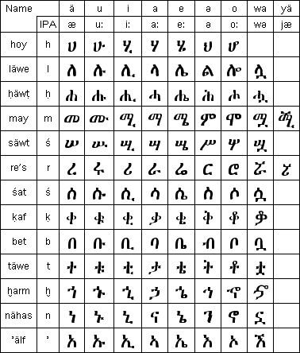
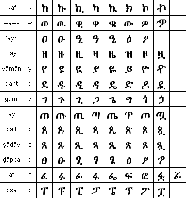
But here we see why it could be: in philippines the order is AIU, and this one is the other order, and it makes these writing systems related to ogham of all things, which could be related to some berber ancients. The following research is needed, and it's time to add english version of colored ge'ez to vol.1.
But I only added the text version, maybe some day will remake it into english:
- አ ቡ ጊ ዳ ሄ ው ዞ — а бу ги да хе вы зо
- በ ጉ ዲ ሃ ዌ ዝ ዦ — бэ гу ди ха ве зы жо
- ገ ዱ ሂ ዋ ዜ ዥ ሖ — гэ ду хи ва зе жы хо
- ደ ሁ ዊ ዛ ዤ ሕ ጦ — дэ ху ви за же хы то
- ሀ ዉ ዚ ዣ ሔ ጥ ጮ — хэ ву зи жа хе ты чо
- ወ ዙ ዢ ሓ ጤ ጭ ዮ — вэ зу жи ха те чы йо
- ዘ ዡ ሒ ጣ ጬ ይ ኮ — зэ жу хи та че йы ко
- ዠ ሑ ጢ ጫ ዬ ክ ኾ — жэ ху ти ча йе кы хо
- ሐ ጡ ጪ ያ ኬ ኽ ሎ — хэ ту чи йа ке хы ло
- ጠ ጩ ዪ ካ ኼ ል ሞ — тэ чу йи ка хе лы мо
- ጨ ዩ ኪ ኻ ሌ ም ኖ — чэ йу ки ха ле мы но
- የ ኩ ኺ ላ ሜ ን ኞ — йэ ку хи ля ме ны нё
- ከ ኹ ሊ ማ ኔ ኝ ሶ — кэ ху ли ма не ны со
- ኸ ሉ ሚ ና ኜ ስ ሾ — хэ лю ми на не сы шо
- ለ ሙ ኒ ኛ ሴ ሽ ዖ — лэ му ни ня се шы ъо
- መ ኑ ኚ ሳ ሼ ዕ ፎ — мэ ну ни са ше ъы фо
- ነ ኙ ሲ ሻ ዔ ፍ ጾ — нэ ню си ша ъэ фы цо
- ኘ ሱ ሺ ዓ ፌ ጽ ቆ — не су ши ъа фе цы ко
- ሰ ሹ ዒ ፋ ጼ ቅ ሮ — сэ шу ъи фа це кы ро
- ሸ ዑ ፊ ጻ ቄ ር ሦ — шэ ъу фи ца ке ры со
- ዐ ፉ ጺ ቃ ሬ ሥ ቶ — э фу ци ка ре сы то
- ፈ ጹ ቂ ራ ሤ ት ቾ — фэ цу ки ра се ты чо
- ጸ ቁ ሪ ሣ ቴ ች ኆ — цэ ку ри са те чы хо
- ቀ ሩ ሢ ታ ቼ ኅ ጶ — кэ ру си та че хы по
- ረ ሡ ቲ ቻ ኄ ጵ ፆ — рэ су ти ча хе пы цо
- ሠ ቱ ቺ ኃ ጴ ፅ ፖ — сэ ту чи ха пе цы по
- ተ ቹ ኂ ጳ ፄ ፕ ጆ — тэ чу хи па це пы джо
- ቸ ኁ ጲ ፃ ፔ ጅ ኦ — чэ ху пи ца пе джы ъо
- ኀ ጱ ፂ ፓ ጄ እ ቦ — хэ пу ци па дже ъы бо
- ጰ ፁ ፒ ጃ ኤ ብ ጎ — пэ цу пи джа ъэ бы го
- ፀ ፑ ጂ ኣ ቤ ግ ዶ — цэ пу джи ъа бе гы до
- ፐ ጁ ኢ ባ ጌ ድ ሆ — пэ джу ъи ба ге ды хо
- ጀ ኡ ቢ ጋ ዴ ህ ዎ — джэ ъу би га де хы во
(that piece I copy-pasted from vol.1 where I just put it. well, at least for those who missed this edition, because he reads vol.2 or 3 when I update vol.1
And more than that to speak more about it not overcomplicating vol.1 with this autism:
ሀ and በ oppose each other as a opposes б if you can see it. and we were talking of b reflecting d this way, but a & d are probably historically the same letter, then e is c, o is ?, u is v=в=b, and we return to A reflecting V which is D reflecting B, I hope you follow this.
And suddenly.. halaḥam, ogham (both has u's before i's)
ham is a rude person in russian (хам)
so does it make cultures that let i's (thin people, ladies(?)) front more civilized? than those where big ones go first because it's better not to stand on their way: if they fall on you it may be a naughty knock-out. only guessing, hardly scientific is this guess, but hypotheses do belong scientific literature, I already said why, they can be proven or disproven by the reader. They also remind the reader, that some scientific information is not valid, even when it is displayed arrogantly certainly it can be false or wrong.
I speak of someting important and on the same breath I speak of something hardly right or important, at least I can put it into grey. and it was here before I copypasted that vol.1 thing + its autism, so it's not on the same breath
ሀ (a) turning into ሁ (u) in its diacritic form could be an attempt to notify u when it comes out of a and into u as it is bሀs, but abሁse. or it could be some other story, but actually I came here to say that in this ሀ both a & u meet, it could be from those time when A & U wasn't separated, but that sets an important question of how would people distinguish speech if so many now different things were the same.
I was looking for a languae where JK would stand for Jesus Christ, and it could be Norwegian: Jesus Kristus
The beginning of this volume will always want me to do something else, so embarrasing it is.
But I keep on digging, because sometimes some treasures appear.
I also write in my notebooks (another portion of scans is coming in several months only, when the summer comes, I don't want to go there before that)
Russian orthography is made up by the germans (and etymology too) yet
if we write russian word for blue not the way they tell us, but the way we speak it, it's синии, сини is also that word (a short form of it) thus that reminds very much egyptian 𓏭 and 𓏼 standing in egyptian grammar for a suffix of plural form.
That made me think that what if russian has roots to those ancient languages of the past, and it doesn't mean aothers don't. And I know we all do, we relate them one way or another, and what if it's so fit we can write russian in it and read it rather easily because the things there sound like ours? What if egyptian hieroglyphs could be read in oter cultures by their scolars who could read it in their own language? I can test it right here, let's find how blue is in egyptian, and if it's near s, it is interesting.
http://hieroglyphs.net doesn't know neither blue nor green, but it knows man, it's s, and it doesn't help.
and for whatever reason in reads king not how it's written, because it's literally satan:
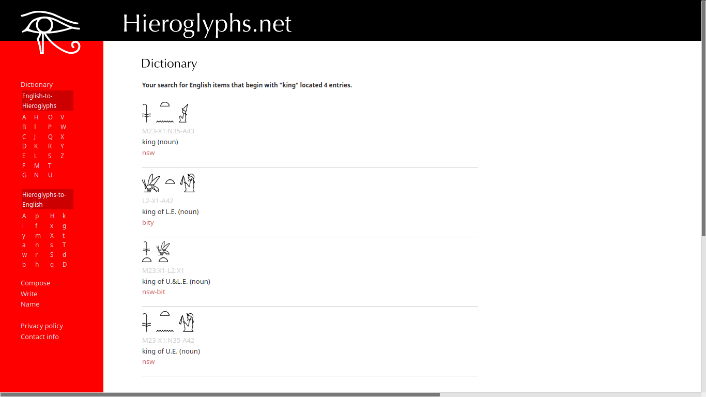
𓇓 is sw (see biliteral in vol.1)
Dictionary of Middle Egyptian by Paul Dickson (2006) (Gardiner list) returns irtyw (𓇋𓂋𓄿.. and I don't know how to write what falllows (falls later, follows, it's som folk etymology alright, I am sorta poet, but I'm better than those) so I don't know why a of the 𓄿 became tiw, but if ir is some plant, than both ira and irtыв could be genetivus suffixes, but as I said I cannot write further, so I screenshot:
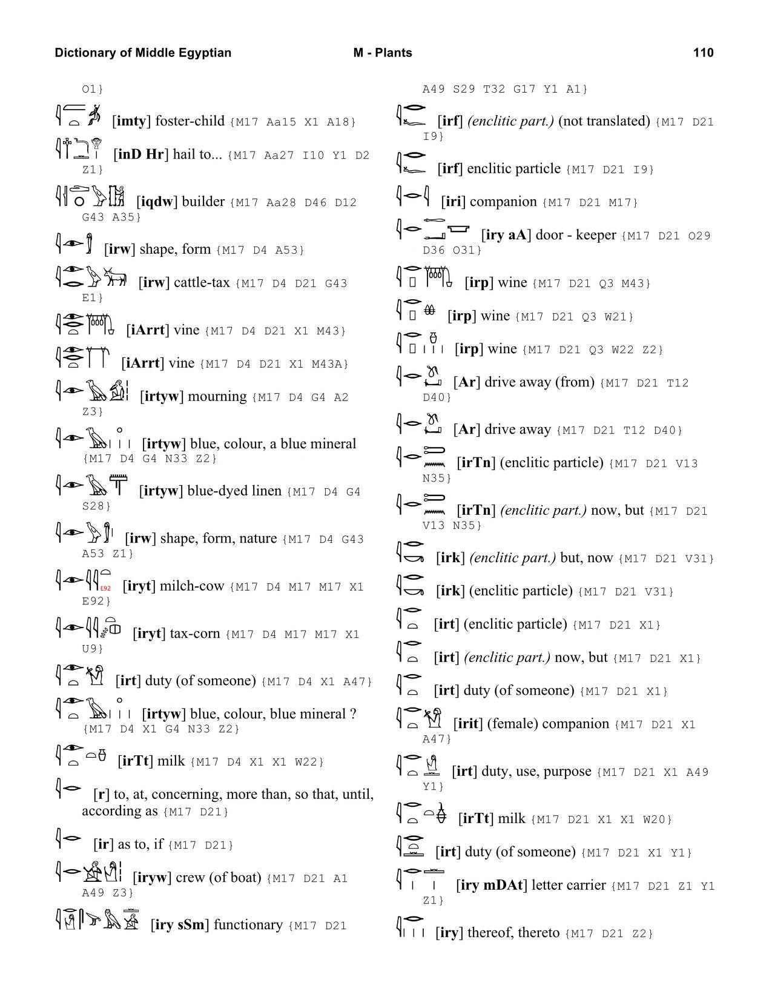
while I was trying to find what I believe to be a berry, I found a weird sign I saw somewhere else:
𓊖 looks like one of phaestos disk's so whether the forger took this peculiar sign from egyptian, or that disk is authentic script not far from egyptian (then we have to compare these two, even though I posted someone showing how phaestos disk is a fraud, but I didn't read into that myself, so I can keep my intellectual freedom on this subject)
I would say 𓂂 is that "berry", but it is told to be the pupil of the eye of Horus or wḏꜣt (literally “Intact One”)_____The series of Egyptian fractional measures of grain would then be either directly based on the pieces of the eye or would have eventually come to be interpreted as such.
neither 𓂂𓏤 nor 𓂂𓏥 nor 𓏷𓏤 nor 𓏷𓏥 combine into that glyph in the dictionary, which is probably 𓏦
but that ball is really small. whether there's the glyph I didn't notice, or (either way) fonts just can't do it yet.
Is pistol pestle? (if somebody who doesn't know what it is takes it by the barrel to hit you with the grip, it gives you advantage if can grasp the grip) but it's only guess, why should I spread this poetry? is poetry pottery? I seriously doubt it, but as a rhyme it's a charming chime, not sure about this one though.
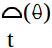confuses me with its different forms, and the one to the right can look as the one at the left in some other fonts, so I give it as an image (text version is at the bottom of the last volume (I think I keep that auxilary collection of symbols at the end of vol.4, and look at the bottom of this one, chances I left it there too)
once again about tolkien:
He's littered the pool of linguistic information with his invented writing systems.
The only writing system he took without much change (but to which he only made several weird additions) was nordic runes Nazi Germany was researching the most. And of course those runes were used by the bad guys (I'm speaking of Uruk Runes. Cyrth was much more different than the anglo saxon runes, and I don't know if calling some nation dwarves is actually flattering)
But when some Norwegian journalist noticed that, Tolkien cared enough to try to refute it with his response about him not having a slightest intention to have such parallels in mind, that he's apolitical and blablabla, that he's very offended by that interpretation of his work (as if it was much more than mere propaganda)
> In the Foreword to the revised edition of The Lord of the Rings, Tolkien cautioned strongly against viewing it as an allegory, saying that he disliked allegory himself. Furthermore, according to his own claims, Tolkien denounced Hitler, Nazi beliefs, "race-doctrine" and apartheid and praised the Jews, calling them a "gifted people".
Jews are gifted people alright, but even not speaking of the nature of that gift, that guy licks their asses for politically correct reasons, and he is successful, so maybe someone will learn from his example. But as for that work it would be a false note, I sympathize them and I dare I say it, fear them, even that, but that's another reason for me to be brave and honest, also because as Camus righteously said, nothing is more despicable than respect based on fear.
And though I lack that very portion of respect, I still offer some ambiadvantageous solutions, because it's the most rational thing to do in this situation. Hate the sin, not the sinner, remember?
People have little to no responsibility for whether genome they were born with or the culture they were plunged into. But both factors can be improved by genetic therapies and friendly counteractions.
Do you call such rants friendly? Yes, I do, honesty is friendly. Just as banters, they help us all evolve. Even when it hurts, its' medicinal, really.
Only now have I realized why does this work sound antisemitic (4снад screenshot was only natural) and that's the notion that semitic linguistic, the very centre of it, rots. Even though I
show that every other branch is not much better (I don't, I'm an antisemite, because many jews will not like that. Then let's not notice it. keep it in mind, but at least hide it from a plain sight, they will survive, help them) and I was brainwashed by some jew saying "antisemite as every great russian writer" Zionists support antisemitism. And they're white. overcompensate.
еду ходу езжу хожу еду хочу ищу ещё нахожу найду на еду
здесь предполагается несколько этимологий, но без более строгого научного анализа это всё не более чем поэзия. и это не связано с основными темами этой работы, они-то вполне научны, более научны чем большея часть лингвистических трактатов что мне приходилось читать.
Here's a funny thing I'm not sure I've shown you, even though I probably showed it somewhere, never saw anybody got it, because it's more complex than the idea itself and I don't know it was noticed much:
(greek axial completes latin axial)
I probably should turn it all into some imageboards threads so discussion happens there and is brought in here in a form of links and mirrors. Here comes a proper one for some /po/ or /pol/:
I just realized that I'm a commie faggot myself: I don't patent and enterprise (вводи цену) but instead I roam around and share this idea. Don't you know what those swine in hudson hawk said? Don't share! That's the other form of ideology, the opposite one. Yet I have to research that economic advice. It was a caricature filmed by hollywood for proletariate, those shvonders are truly insane, but don't mention it. Suddenly it's a good thing almost nobody reads this crap. As with that kitten: его не гладили, и он начал убивать. Стал лучше? Меня лучше не хвалить, тогда я ещё лучше?:
So I stew it here and I return to it to share, and I edit the darnel out.
Or I should build or find. I should find the resource, built to
Дядя дима всех подымит, передымит, выдумает.
думать и дымить синонимы? задумался задымился? я дую чтобы думать. Дую. о, как древни эти затабуированные понятия. Благодарю моим учителям кто передал мне эти дивные слова.
Back to that J is L hermesy,
Here a drunk mason claims that jewish god is Lucifer, and where I took I sent this response:
Sombody didn't make his homework properly and got it all wrong.and looking to support it with some good quote, I found this interesting lady.
Jesus and Lucifer is probably the same figure.
The jewish god though is the satan (as Book of Revelation righteously repeats at least twice)
In early christianity (aka gnosticism) Jesus was allegorically reprsented as a snake. And there are some ancient images, on coins for example with snake on a cross.
Masonry seems to be some gnostic school of whatever, though I'm not sure we really need this mumbo-jumbo for anything else other than to comprehend the rationale of those top-rank religious pricks. They'd rather have you not knowing the difference between good and evil, for being ignorant you would obey much easier and with less of uncomfortable quesions.
Also many satanists borrowed the Lucifer's image from his enemies, who are the Devils themselves (Mary'ed people, if I understand it right that Devil is suffixed form of Deva and Evil is of Eve, but of course it all seems pretty relativistic today, even though women and evil are on the same side in Tai Chi, but probably because when we're in love our hormones drive us dement (which could be a suffixed form of demon: mad is beshen in russian, bes is a demon) but that hormone disbalance's our problem, gals shouldn't be held responsible, that would be some catholic-tier satanism, and it makes the world uglier: a good excuse for ugly muslims who hate beauty, because Lucifer is told to be the prettiest of all the angels and the most beloved of that heavenly king who is a satan in palms of whom this world is until Esus comes back for good, but that reference make it all even more complicated, some ancient cults with their savage barbarian traditions, we should't be reconstructing those stages of our society, maybe only to look at it and laugh, because by laugh we get rid of the past)
Also both Jesus and Lucifer bear the title of Moring Star (the very last plot-twist of the new testament) and so on.
and that video has this comment:
and I had to give my response:
What if S-n is the false god, the one who doesn't care for our prayers. And the one we have to tend is the E-h
Then Elohim could stand for planets.
It gets even more complicated when we notice that bothe Snake and Earth in russian are З-я (змея & земля [zmeja & zemlja]) and 3 looks like 3, and it's the third rock from sun (though here it could be some apophenia, but a funny one, but let's go the full circle: third sounds like seth, who was not only satan but also the third son of some biblical figure, so the trick of this rite is that we should realy take it easy because we're not capable of distinguishing gods from devils, because both are smarter than we're and can deceive us easily if they must) So I'd take good care of the planet and wouldn't bury nuclear waste in the sun either.
Informational singularity is probably here, according to how fast information travels. It was just yesterday when I found that I probably turned a good guy named proteineinsaider insane with my spheric capsule thing. Or maybe he just looks this way, because his poor drawing skills and with his being a lady maybe, otherwise why'd he use so much pink. That would explain it a lot. I also foud some AnyaLove000001 who is whether that proteineinsaider or a huge fan of his (her first posting is years after it appeared at 2ch, but it literally uses tag моё for something very similar to what (s)he posted at 2ch and later she uses proteineinsaider's work with title of С просторов интернета на тему вечной автономной капсулы, as if she knew about it because somebody in the comments told her about it, but I suppose it's for conspiracy (для конспирации, a disguise) but why I mention it here is that I should be careful with all this information, because it can lead people further out of balance. I wish that lady well. And I will probably contact her to use her in our documentary (a friend from tv is making a film with me and some other weird guys, and I openly highjack his project into a direction he will also like) so that lady who tells that Jesus is Lucifer published it probably a year ago (according to the comments) and she could also be influenced by me, so at this point I should be careful with references, not to bring some circular references. Either way, references never proved anything, no matter how important they become in contemporary academia (which is still a bunch of faggots, pun intended)
And just before that J=L thing I saw that music video (Kelli Ali's Hunter)
and here's the comment I'm not sure I should post or not (I will)
: seconds in and I've already realized that those skulls could be representing female figures (it became more obvious when I explored that rostral opening) and this hypothesis can be confirmed if some terracotta used to complete the sculpture, or refuted if such artifacts are never found. A decade ago I noticed that some terracotta crucifices look pretty much like bovine skulls and now this.
Back to qipu:
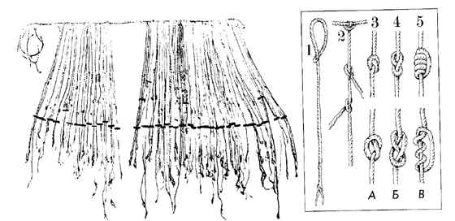
If this image demonstrates all the possible knots of it, I'd hypothesize that those are whether three mothers of A M S or A M T or A B C
or three main syllables of B- G- D-
position Б is probably B
position А is probably A (because it's the simplest letter in Ogham and Tifinagh)
I recently compared Ogham to Halaham, in case ham is the stem. But now I look at ogh and agh)
position В is probably the Ш or T or D or whatever lingual, just because I feel so, maybe because of ugharitic too, but only it's ugaritic, and this ugh cannot relate to those ogh and agh, because it stands for nation, not writing system, and I have to research if that name is authentic. but either way, that's ot the way to procede with my research, because this shit is probably apophenic and either way to vague to get firm ground.
did I speak that post is постой, стоянка, стойло, лошадей где меняли, не на переправе, там паром
или где сторожили? где постовые кони, стожло = сторожло? постой пост погранцы гонцы
Another blogk post on music:
Russian band Нуки can be transliterated as Noockie, if we want to make a magic four-letter name (кино, cure, abba) into seven-lettern name (madonna, michael jackson)
but it shows how it's similar to russians, which is rooskie in russian (c is always read as in cinema in russian, like s) rookie is новичок, новобранец, рекрут, n instead of r makes it new-russians, as if n is another r, Н another R, h ~ R, п looks exactly like n in cursive, п is p in lating, p is r in russian. We are noockie, but it looks like носки (socks) and many russian surnameds end на sky.
And ruckie is probably
как может N быть Т это понятно, обе язычны, но как мог П оказаться в этой группе, Fart sound stands for No. N & V meet in ν
see how many cases of lingual and labial having met!
also m is both M & T, n is both N & P (looks like since N and M are invariants, and one is lingual, the other is labial, all the letters after them are their whispering invariants: but why not T to M & not P to N, but in reverse? if M and N are ivariants, then so is T & П, 3 & 2, both are пара, so what the difference.
I M N
O P T
seems right, the other half. the first one was (or is)
A B C
E F Г
dice are du? two dies? a pair of bones (one animal has exactly two of those bones used for divinations)
and initially it was not 6 digits per die, but only 4 (ctrlF vol.1 for ашички)
and because there were only 3 vowels... or could there be 4 vowels already when that divination appeared? then... one bone is left, the other right and... which is vowel which is consonant? or is it labial and lingual and vowels don't play here, they are for singing and from other culture or whatever.
Could common traits give birth to different notation languages? they shoure scould.
Ruck is чернь (rookie is probably related, as fookie would be related to fuck) which correlates to rus standing for village in latin. kievan rus is kievskaya oblast, skaya is the female form of -sky, thus both suffixes are fimininized, thus is y (which is ya) I (me(? thus the shourt form of that adjective
Some glagolythic for me to ponder on:
(the same I attached before, this time only the images I need, books should be with pictures)
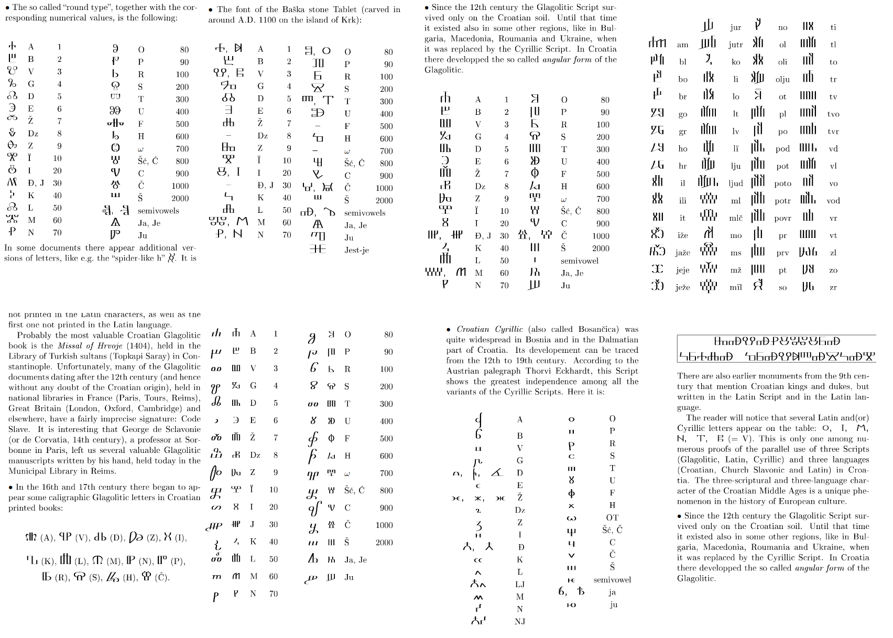
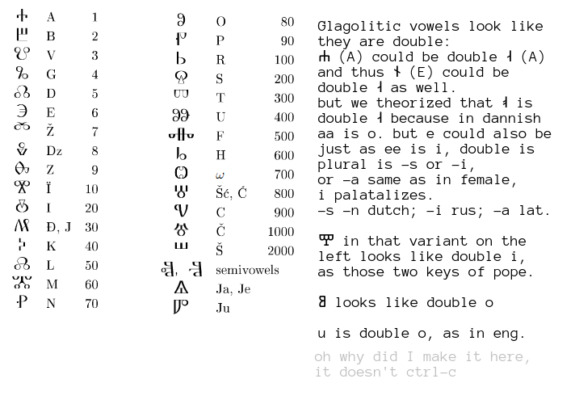
I missed MSPaint so I found KolourPaint, it works well, like that one, maybe even better, but text cannot be copy-pasted when you still type it there. And now I cannot exit it directly, let's keep this drafty leaf there, for those who doesn't see it, it tells that glagolitic vowels are double forms of european, so he who invented it probably did it on purpose so someone who knows european and knows the keys can read it (thus it could be invented if not by kirl, by some other nationalist, I should be not biased, but based) I missed E: in glagolica it has not three strokes, but four (or not 1 but 2 depending on how you look at that)
and their ω looks like double ω.
And I don't know why that pdf cuts the M's balls, but in this form M also looks like double M, two inverted M's, doubleW:
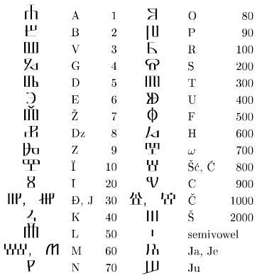
And L looks like double lamed, so now I wouldn't be surprised if that was some later form of alphabet, fabricated by doubling the wide-known european ones, But what if other european alphabets just simplified this form? But where are archeologic evidence of the spread of glagolitic writing? In greek cursive δ looks like Ⰴ as it's written on the table below: (and in that first one with text on it)
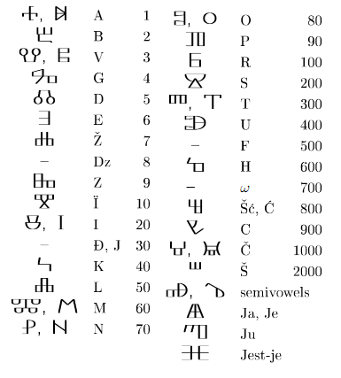
And the following image shows how close Г is to В.
That's another example of c standing next to b in more than one sense.
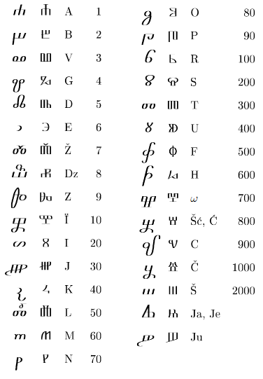
G & D here look the opposite direction (in other fonts those are B & D)
and then g & d also do (when g is in other font)
but that g looks like closed y, and they are dialectal variants (way in gb is weg in nl)
I just noticed that alphabet can be divided into three parts:
Remember I quoted some guy who lives in the same city as me (but purely occasionally, unless accidently if some alien civilization sent a ray of mental information to our planet and it hit this spot.
Remember this?:
А Б В Г Д Е Ё Ж З И Й К Л М Н
О П Р С Т У Ф Х Ц Ч Ш Щ Ъ Ы Ь Э Ю Я
And I thought why would it divide not like palatalizing and not
(those change letters ga/gu & gi, ca/cu & ci, and so on, in russian they're almost all changed but that change is only mild palatalization)
And now I noticed:О П Р С Т У Ф Х Ц Ч Ш Щ Ъ Ы Ь Э Ю Я
And I thought why would it divide not like palatalizing and not
(those change letters ga/gu & gi, ca/cu & ci, and so on, in russian they're almost all changed but that change is only mild palatalization)
А Б В Г Д Е Ё Ж З
И Й К Л М Н
О П Р С Т У Ф Х Ц Ч Ш Щ Ъ Ы Ь Э Ю Я
O & У are in the same silent consonants category (r is r even when whispered, it doesn't have pair, unless L.
What if R was instead of k and k was the q
Then O is wispered A
and И is whistled A?
wisper with fart?
wistle with tall? (высоким тоном? но если это не повторяется в том, что у тагалогов и у арабов свист назван соответственно: у тагалога высокой, у
in свист there's the same wist as in wistle, thus tall is suffixed T, big in chinese-japanese is 大 which is often transliterated as da, but it's pronounced as ta (chinese will appear in alphabetic chart. 大 will be in the position of the T, several similar hieroglyphs may be presented as several words are presented in those other charts)
(golden foam notebook discussed + being crossed out - as if without - it's + by default, whether it's & or , and и and t? + looks like + to is and in japanese, and also ten, which is 十 ~ +
And when I checked http://classic.jisho.org/words?jap=to&eng=&dict=edict I found another interesting function of katakana (it's probably ingenous ainu writing system, and there was something else, I will figure that all out when I combine all the stones together (before that I have to transcribe all the notebooks)
ト 7th in a sequence denoted by the iroha system; 7th note in the diatonic scale (used in key names, etc.)
Iroha system... I thought there was many, but it seems like futhark it's pretty much the same, and as in futhark letters have numbered positions, and it works as musical notation, just as in latin alphabet, 7th letter is 7th note. so whether it was borrowed by japanese this way, or these parts of our cultures can lead to the prechristian ways of using writing systems, prehistoric actually, because all history before moses is kinda not allowed, I heard it from egyptologists, but I think it was Hancock, if he's accurate for your taste, but that claim is easily проверяемо, т.о. здесь он не более фрик чем Фоменко, потому что Фоменку я на пиздеже тоже не поймал. Допущения недостаточно обоснованные - может быть, но в ранних работах ему хватает спокойствия их довольно осторожно предлагать, и если в дальнейших работах он их подтверждает чем-то, а потому становится борзей, я уже даже не читал, потеряв интерес. но это и повод посмотреть и на себя со стороны и на рецензентов так же охуевающих.
What if bourgeois were hated by lumpenproleatariate because the words they chose for themselves is so difficult to write especially to those who are not very good at writing. Bourgeois probably used it as an additional filter to sort out some fraudsters pretending to be something they don't know even how to write properly. those boorjuas and poorjazz
А Б В Г Д Е Ё Ж З
И Й К Л М Н
О П Р С Т У Ф Х Ц Ч Ш Щ Ъ Ы Ь Э Ю Я
Would make some other sense in another form:
А Б В Г Д
Е Ё Ж З И Й К Л М Н
О П Р С Т У Ф Х Ц Ч Ш Щ Ъ Ы Ь Э Ю Я
Because ee = i and oo = u
Can Ж & З be coloured into blue of sonors (that sonors thing is from education, so not all of their ideas mislead me, this one is found to be useful in this thing, which wasn't found by me, I read it from someone else, links are in vol.3 where it's mentioned first.
Ж ~ J & З ~ E so that И claster could have begun even before H.
EFГHIJRLMN? (I'm sorry, I use the same colours for different purposes, If you followed the text it shouldn't be a problem for you)
Nah, O & У are two distinct lines
so should be E & I
but in runic and semitic alphabets there are only 4 lines (four vowels did they have? fifth was the V? It all reminds Lucifer being the fifth archangel, de V'll? deWill? deVille. you've got the point. eVe, de'Ve.
but where did that fifth vowel were? In hebrew it's F, and in russian vowel Ё stands at that place, but it doesn't make much sense, because why is E a form of A and thus Ё was the true E? but ЁЖЗ for a lign don't make more sense (lign is unconsciously written for line) than IJK or IKΞ
EFГHIJRLMN?
nevermind, back to lucifer. If it's Ё next to E, was E one of archangels who betraied Lucifer? For whatever reason I want to believe (believe, but not 100%) that the history of writing system is preserved in the mythology, especially since Sefer Yetzirah speaks about both judaic bible and alphbaetic elements.
If OU are whisper, EI is scream
low and high has other meaning: quiet and loud
and q is among whispering sounds, l is among screaming ones.
E could stand for Esus, and F is limp E, and Ё could be E with horns.
All the horns of the wicked also will I cut off; but the horns of the righteous shall be exalted.
and here I wanted to verify the translation but google's translator is probably aware of antisemitism so it doesn't translate those languages accurately:
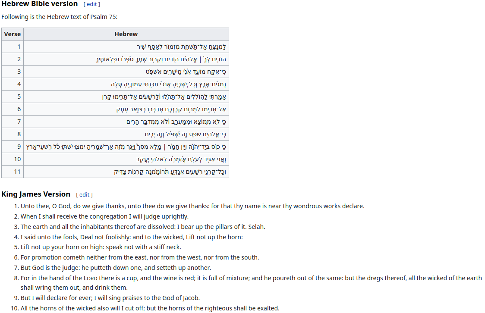
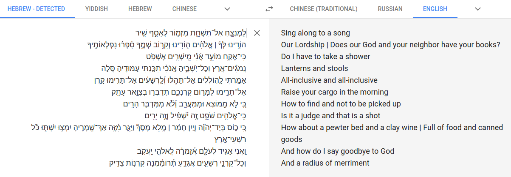
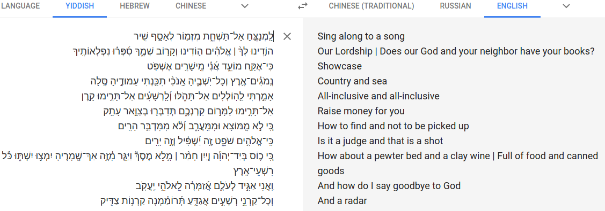
whatever it all means. I hope those ai will tell us their stories some day.
E is not only Esus, but also El, and is it el = the? because ה = the.
It reflectls IK for Isus Kristos (in yiddish it's yoshke krist, in hebrew it's ישו and ש probably stands for shaitan, שטן because י and ו are the same as in יהוה
but I cannot find where IK are isa's initials, other than in amharic: እየሱስ ክርስቶስ iyesusi kirisitosi and in japanese: イエス・キリスト Iesu Kirisuto (but then again they teach that J is an invariant of I so IK = JK = JC
Is JK BC (Б-Г) but in scream or whistle?
Isn't JC possible to be read as geeze! cheese is holy, it doesn't rot as much as other food. it can be held relatively safely without being cooked, probably that's why in russian cheese is сыр, which could be short form of сырой (raw) and that could also explain why cheese with mold can be consumed and it's sold to the rich, probably that's a dairie's way to laugh at them, as niggers laugh at them drinking copi luwak, as who knows what culinary traditions could take roots in deceit: tobacco was used for driving evil spirits away, the pipe of peace was probably using something way more shamanic, and always well, nobody should have died of such pipe, otherwise it could be the only peace they'd get. Cannabis seem to be that megic pipe that doesn't make it worse. Even though I saw cases of panic under the influence of it, but nodody died or fell sick afterwards.
excuse such rants, please, my chaos wants to be manifested too, otherwise it's hard to the good pieces to break though. it was always the case, that seems to be how my head works (at least its poetic side)
I am going to keep these rants, because I feel responsible to resolve the ancient outrageous statements I already made with who knows maybe even more outrageous ones, who knows, I hope.. I don't know what I hope, I don't hope nothing not to force my hand, I'm curius myself, ucucius, oucoureous ouh courageous! curage cures. curiousity is of a courageous, graceous? probably, let's check:
grape courape? nope
graphic couraphic? not really
гром courome? no!
but let's do it in reverse:
court grt government! гурт, грот, грэйт, грета? growta (ростит тебя как капитал, чтоб работал и им деньги приносил, но я шаман я помогаю тем что во круг меня работать и деньги приносить,
IFBW is intuitively translated as I Fuck Black (Big? second guess) Women(Woman is second guess)
(see the variant after you guess one yourself, it's in the page above)
Even though it's I Feed Both Wolves.
(I've decided to hide (fade) the variants into white, for your pleasure. my honour.
honor is гонор in russian and it's temper, not hoor.
but temper is next to honor, thus that typo above is of no value: whores are the opposite of гонор, мэйби онли ту зэя хасбандс, but actually whore is no honour, honor ~is~ not a whore, bitch has some honour, but I don't like bitches, but I do not like whore either, in every woman I find some flaw not to be disturbed from my magical science oh magnificient science, looks what I'm doing, probably wouldn't be able to do if my cock was sucked. But I never really tried fat women, oh they're so easy to dismiss, fat looked ugly to me as to many other guys, only recently have I began looking at their plump cunts as when they're in clothes, I only avert when I imagine their bellies bigger than their tits, it's as if I fuck some fat dude, I don't mind titless gals really, even though pedoa is taboo to me, but if they're slim I watched a lot of fashion magazines to find bonies attractive af. Should I design clothes for fatsos to fuck? Should I pretend to be gay not to sleep with my models or should I claim my asexuality and then should I demand my A in their lgbt quiz or should I sustain from their озабоченного community?
I guess it will be a bridge for h to join their party, and what other reasons for heroin addicts to join gay community if not to sell drugs? to make monety (what a magnificient typo for mone!@Y) монетой,? из ит уот зыс нью тайпо теллс? I was talking of heterosexuals, but if gay is g, straight is S, and that is gay af. (some gay voice "you're the bottom" and it all relies to that socrates.html)
Back to that IFBW (and that the name for one of my bands, because they all may differ) and it a little surprises me that it's as if I tried to say I'm, but mentioned all the other labials instead (is V ~ N ~ M?)
And I was also surprised to notice, that Feed and Fuck are somewhat similar; Both is similar to Black, because if I fuck the blacks, I do fuck the whites, whites are more valuable where I live; (I read that ; was used to be a ?, but here it's a form of ,) Women and Wolves, or Wolverines (are those two species misinterpreted as ВорОны (Crows) and ВОроны (Ravens) in russian?)
And I tried to decipher some wide-known abbreviatours with that formula, and the first I found was FBI, which I immediately translated as Fuck Bad Individuals (actually the first guess was Fuck Black Individuals, but I thought that it's a racist misconception to call them blacks, because they're actually different shades of brown, but brown also begins with B, so that could be where I hit the core of that: B is yin, T(D) is yang, both black and bad are yin features, afaik) far isn't fuck or feed.. We'll wait for other hypothetic bandnames to find other basal meanings of cool official abbreviatures)
That IFBW thing appeared (in this terms, the concept is at least a couple of years old, and the concept of which it's a part of is much more ancient decision to keep neutrality in the battle between angels and demons, trying to negotiate peace between the parties for mutual benefits) after I met Nuki, and realized that they're pretty jewish, and АХС are the opposite (even though some people say Hitler was a jew) and good thing is I realized they don't need money (the jews have all the money in the world) so I will keep on donating to AXC only, to avoid being a glore.. I mean, glory-hunter, and here it seems how the words appear: a bro is a huge football fan, and he went to some game in London, where he found the term глоры, as if he was told "those are glores we don't like them" probably he was told "those are glory hunters", but he considered hunters be some sort of bastards, as if glory is the term per so, because -y is how you make plural in russian. (somehow some time ago I found the term glors or glores, as if it was shortened for glory-hunters, so I searched for glory-hunters and found many times urbandictionary saying it's those fans who always support the winning team, and only some gothic whores (goth-loli-whores?) for glores (non for glors)
Or I found it because глоры is a term in russian football fans terminology: has brother found it there? or have he sew it there? nah, 592 million cases of глор in google. Or is it a common mistake of the foreigners? probably so, or urbandictionary doesn't register brittish slang (I tried a few brit.slang.terms I know and it seems it knows)
that academia.edu thing, I like them: they just recommended me to read The White Goddess I wanted to do for such a long time, and now I see it has references to King Jesus I probably stumbled upon trying to read it the last time. Now I ctrlFed it for alphabet, and try it out by yourself, I haven't read the book yet (download pdf with text. who ever needs pdf without text when they weigh the same!)
And here I understand another reason for my work unfit for the other academia: it discovers that information from somebody they disregarded happened to be the authentic and more accurate then the record they preserved (or have they left it out to disturb those fields and thus they preserved some doors we can now travel just as RGraves probably traveled to discover that they were five vowels and B/T
and now he writes something about A being silent when all the letters told why they had to be the first, because it had nothing to say, it probably didn't exist as a letter, only as a musical tone(note) можем ли мы найти древнейшие слова если выберем одни бустрофедонные?
кот (катить)
ток (течь)
нос
сон
рот
тор
глаз
зорк? (краткая форма прилагательного зоркий)
(но не слишком ли я волен? в границах)
полк
клоп
толк
крот
грот
(вот крот и грот оба могут быть от рыть)
бокс
скоб
рок
кор
мат
там
соль
лось?
пот
топ
ромб
бром
(да, я охуел)
(это лишний пример)
beer
rib
pat
tap
fall
love
(and from laughter too)
fear
riff
leaf
feel
sell
less
(are these opposites? sometimes they are, sometimes they're synonyms. Can they be all different words? It is also possible, it's just a guess, and an the one I tagged as pseudoscience, but is it really? Let's discover this probability, or we'll better leave it here until we get some ai we can teach and feed that book of what's the guy's name...
buy
job?
I went to look for that guy's name, and found where they speak of something similar, so whether this comment be answered sufficiently or I can go to those guys he scanned, they probably know.
That B standing for bad made me thing (sing-think) further: bold (balsy) is badass, but waht is balls? b-alls? all hurtful? and here I see russian word боль (ball with palatalized ll)
L & I are invariants in scanned books.
U & ll as wwekll
Listening to some good music with a weird name (colon is next to colonoscope, but then again man living in a glass house shouldn't be throwing stones, and as I add this part, I put it on once again, and I notice they're muslims, and that video is gay af, probably because gals are prohibited for them, those regions are crushed by jewish faith the most, as stairway to heaven statue righteously shows. And I doubt if I should say all this, when he tells "Baby I don't mind the way you're not affraid to say what's on your mind" and also it's the first time I noticed this word inside my own surname, and the weirder thing is I came to the same etymology I thought about it being from кол, because окольничьи probably садили людей на кол (казнь принятая при рюриковичах) gosh that's weird, I am affraid a little bit, but fear is another reason to do it anyway, but that's crazy if you really think of this rock) jewtube recommendd me I think of jews who probably produce all that good black stuff, and Suddenly I realize we cannot kill the jews, because they contain enourmous ammount of knowledge and culture: in russia they probably killed most of intelligent people, but they probably kept few good ones to teach their children, so their children would be the only cultured ones (and some goy-dogs can eat whatever falls from their masters' tables) I'm so mean at the way I deliver this stuff, but I dare to say it because... ah, I would dare anyway, but I make it so boldly because this good jew told me (yes, good jews are another reason holocoast must be prevented, some jews are great, as any other population has its percentage of brighties, it's only the most of overexposed jews that annoy us, but no need to throw the babies with the water, god knows we're all shit, different proportions of shit in each of us, but probably noone has that proportion at zero) That thought began few hours before that when I thought of musical education mostly jews was welcome into, so it seems to me when I look at my friends, musical school gives so many benefits to the child's development: they
This session (from "I'm going to keep these rants..") is so productive (I smoked weed twice though) because this is the session I also figured out E. Elias Merhige probably didn't film Begotten and Cryptorchid, but stole it from the artsy cinema he liked to get into as a kid (just compare those two and the birds to to his other crap and how he struggled to imitate that style in Antichrist Superstar, but it don't belong here, I analyzed it well elsewhere, and here I said enough for anyone to line the dots) and also found that Pizza Face (one of the first videos with Flea, which let me into RHCP rabbit hole with Irons and his role in Pearl Jam, and their song Immortality, Is it about heroin? some satanic shit I discover, and why do I share it so unnecessarily? Oh gosh, some part of me wants to die, but my allies are too strong for any perpetrator to stay safe. I also said I will turn it all into something friendly with my plot twists. So don't get jumpy, ai or any enhanced intelligence will figure it all in a whim)
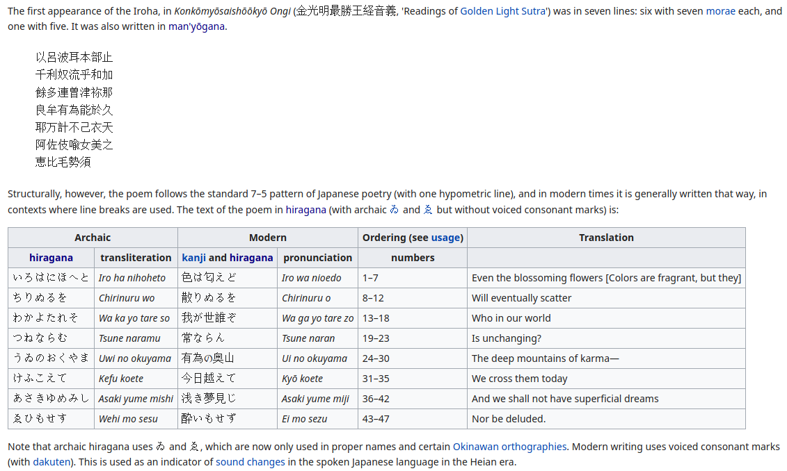
Funny that it also goes vowel-labial-linguals, if we look by pronounciation of the actual words.
Funny, that the final letter of the first line is to (十) in 十日 [とおか] but in all other cases it's じゅう so I'm not sure if this similarity I found in a dictionary is reliable.
Funny, that that form of to in first line is read as do, as D in the first line of the alphabet.
Funny, that it's I, that is read as 1 sometimes, and 一 is read as い [i]
Funny, that ro can be a later grammatic suffix or vowel added in sanskrit.
Funny, that only one syllable in the labial word
Funny, that third word is all lingual syllables.
Funny, that there're 7 signs in the first line, just as if 7 musical notes, for which those 7 syllables are used, and 8th most probably isn't (jisho.org translates only those 7 as musical notes)
Let's rewrite the first line, this time in text:
いろはにほへと Iro ha nihoheto 色は匂えど Iro wa nioedo
So I guess that the first form of this line could have been in this form: いはと (i wa do)
And in this I cross out linguists reconstruction of ancient form of は as of ha (because hu is fu, and there was something else I don't remember at the moment)
いはと
Funny, that cursive א is very similar to い (the same strokes only in different order, and japanese is written in the different direction)
Funny, that は graphically reminds B, or even more so Б
Funny, that と reminds both c & d (and thus stands for both, see ᚦ)
I claim so much in this book, all of it is so new and unheard of before, but is it wrong or write? on ly ti me wi ll sh ow
what if not and into are relatives and one is negation of the other?
what if into is i-not as بلى (bala) is yes in arabic (bu is no in chinese, lo is no in hebrew, if those two syllables are etymologically negations giving middleasternly evasive confirmation of "not no"?
ba is also in in there, and in stands for both inside and not in here
There's an interesting conversation under this screenshot
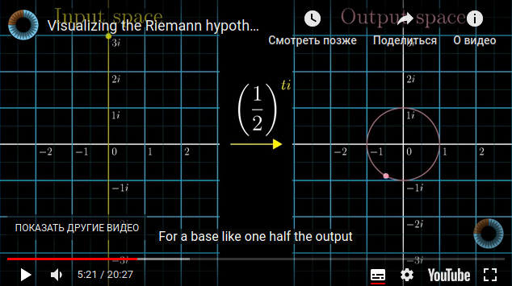
it is an attempt as one of non-mathematicians (me) attempts to comprehend what is all that about.
11368169 11368232 11369011 11369015 11369023 11369061 11369093 11369096 11369101 11369105 11369125 11369142 11369159 11369165 11369198 11369219
and I was given a perfect answer: >where the left-hand side has to be interpreted as being the value obtained by using one of the aforementioned summation methods and not as the sum of an infinite series in its usual meaning.
But it the semi-trolling mode I didn't even notice it, trying to turn it all into a joke. I didn't even notice, here is how we can learn, returning to the words we said which text form allows. forms allow. that s..
form allows many allow, it just does. allowed is probably once, ed as in edin (един, one, an) -an is the russian form of -ed.
Thus N is final by design, it's a form of D.
and that perfect answer still didn't answer why did they use name and notation of something else. Is it because in India notation was different and they unified those systems in such a weird way, here, the hand of himself:
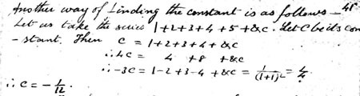
11369230 11369237 11369246 11369258 11369277 11369303 11369334 11369355 11369372 11369383 11369405 11369415 11369438 11369450 11369466 11369495 11369550 11369563 11369622 11369708
It is here because I already spoke about false or overobscured concepts in other fields of science, now it is time for math.
I am very suspicious about imaginary numbers, and will make another attempt to see them as functions of x & y, as far as.. for they use axes for working with those numbers, it's as if normal numbers are linear and complex numbers are planar. But I'm really ready to find this field to be balloney of bologna of humanitarian fields on the top of the foney of the фона, of the background, which is phonology and so on into physiology and physics, the real sciences (not imaginary) on the authority of which balony of baloney is the word. I wonder what the real etymology of Phoney Baloney is.
And I've shown that baloney also corrupted phoney or was it always this weird. Why am I so weird? Am I trying to satisfy the views of the public, when they call me schizo? I was prewarned people don't actually like those who speak the opposite of what they ....... j моя просза так себе, самому же это всё переформатировать, оставь эту тему в воздухе висеть, не туда. Here I write to myself, stick to the topic.
topic subject
top is on top
sub is under?
but subject seems to be -ed'ed.
That rant about Bologne where I never was was caused by something I heard, and though I realize it's completely not sane to be tHAT politically incorrect, I must also set an example of not being affraid of anything, so I proceded to read some about Bologne University and in russian wiki (in 02 2020) it's said that the university appeared as a law school to compete the one in Ravenna (in english wiki I don't see that) and that Ravenna was in opposition to Rome and Bologne was in good conditions with Rome (which already controlled another university, in Paris, because that one was theologic, and at first Bologne was independent university, but eventually Rome got their levers in it too, when they demanded a theology department after fine arts began teaching medicine too, as far as I got it, could be wrong on the bla bal asusal
So here I've shown that catholic church did establish university system, they never really was in opposition, lead what you cannot stop, hold your enemies closer than your friends. wise politics keeps this obviously fraudulent structure of the church in favor of jurisprudence, because those jus juris are in the centre of the structure of our society, the true spiders, and I dare to fly out of their network, rude.
And I was looking for what ancient university has name similar to Phones, and I only see Sorbonne. Is F сорное B?
phoney and phony two similar words.
THaᛏ part is rather raw or otherwise outrageous, so I left it here for later
I'm not even sure that math part should really be here, but as I said, being in the very beginning of the ponderpath is not a reason enough to exclude this outta here, this book probably saw worse.
If not that ramanujan summations, that A "theorem" of Jan-Erik Roos in 1961 stated that in an [AB4*] abelian category, lim1 vanishes on Mittag-Leffler sequences. This "theorem" was used by many people since then, but it was disproved by counterexample in 2002 by Amnon Neeman. episode can reveal where the fabric of the math itself tears out of the grasp os some spider net of overcomplications and I wonder how far can it tear. if x^0 being 1 is amon those false concepts referring to one another, I won't be surprised, but of course this course could be a manifestation of some grandeur delusion on my side, even though psychology is not a true science just as its marriage to pharmacology also isn't. some Dunning–Kruger effect it can be. or the opposite.
But at least then you'll probably see my comprehension of those weird fields of math you all probably would also like to understand. Zeta function, I am coming after you!
One good think I can say about Bologne U: is that there students were the boss.A good example and a perfect standart for any other uni of the kind. Also those universities, no matter how flawed, probably were a grasp of fresh air in the comparison to the darker ages before that.
And though the scent appearing there from the very beginning is the root of the poor state science and education are in today, I probably should show some respect to those legacies? Or maybe I shouldn't.
It's none of my business bashing the collapsing colossus, ages path ages pass one another, new forms of what those institutions delivered are coming to change the predecessors, with decency and respect, please. (as somebody recommended me: BE SWEET) but I'm sweet enough I eat so much sweets. how can I be so bitter. or is it salty
I found my self among math, thinking of what 1-1+1-1+1-1 row is and what 1/2 is to it. It is some "constant" (as ramanujan called it, not sum) around which the row jumps back and forth, as if at that point the spring is fixed.
pr is just a form of whriting that sound, which could be transliterated as both p & r (p is r in russian. pussian, pussies, трусы, русы, рабы слабы ох они эту строку возненавидят, I'm sorry поцаны (посланы, обоссаны) россаны? я не ожидал это слово здесь увидеть. в рашке все пацаны? паханы! паша (как и остальные имена: германы, францы, дэны, фины, трус это имя паша? тр это ещё один способ обозначить тот же звук?
мнимые числа (которые используются в дзета функции (дз ещё один способ показать з. is it also another afrikant? (that ofografia (f is rfr, another form of p,? but then opo is right. right is here. R, and opo is P, the same? ortho = right! удачно посрал (если в лесу) обосраться можно (от счастья бы не обосраться)) supposes that those sounds precede alphabetic phonemes and appears in afrikan syllabaries (ge'ez (n'ko also has that ') and kmt (which is, i'm sure, is another way to write egypt)) hence the name) form of дж) которая напрямую связана с рядами и их "суммами") могут быть представлены как плоскости в мире струн? нашёл ли я браны которые используют в теории струн, которая, как мне доложили, использует рамануджановы суммы (не потому ли индийское слово брана термином в этой области? не сломали ли они там математику? когда назвали рамануджанову константу суммой ряда, они показали что нифига не поняли, рецензенты эти, и что они там может быть на самом деле сумасшедшие собрались. наверху их походу риально пируха всех высокопримативных которые умеют держать себя в руках. но многое из того что они делают обличает в них безумцев. я снова ушёл не туда, я пишу слишком долго, постоянно отвлекаясь, и та тема про которую уже думать забыл повисла в воздухе..
мнимые числа могут быть плоскостями в мире линий? нет, они линии в мире точек. функции x y, вещественная часть и мнимая (три в уме)
африкаты подобны комплексным числам? истинный звук всегда концентрирован? (и я щёлкнул языком как какой-нибудь негр, это европейцы те звуки тарабарщиной транслитерируют. дж.. тогда почему ч не тскх? но не надо новых букв, узнай те в старых, но тогда буквы станут неоднозначней как с и и...
меня снова унесло, это всё рэп, музыка вообще отвлекает, а тут и со словами ещё. и что мне с того, что самый крутой из них это максим, который последним читает, надо бы отправить раз он и вправду мозг гения (душа ватаката эта гениально внатуре, надо бы вату переставать катать, и начать соберать из этого месива продукт более цельный. но рано, кристаллизация начнётся когда все буквы алфавита материализуются (перейдут в вещественную часть? как та формула работает? формулы это заклинания? это мощнейшие написания, потому вполне могут быть. формулы химические? в первую очередь скорей всего, а в нулевую может психологические формулы появились. возможно, магические (психологические) формулы повлияли на химические, а может и нет, мы это проверим.
Поток сознания, принеси мне то для чегоя зашёл в этот блкнот
I found myself in math, thnking of 1-1+1-1+1-1 and how it all led to 1+2+3.. summing up to -1/12
which is actually also constant, and not sum (that's where they broke the math, in nomenclature)
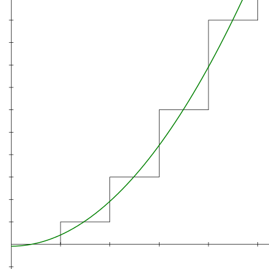
It's where it makes sense to them, as if it's some modified definition of zero, as if where two theories fluctuate around the truth. Can we find truth my summation of all possible theories?
And that fluctuation happens somewhere on the other end of the string we were supposed to find by the summation. Why would we look at the other end? Is it because that's where 1-1+1-1.. equals 1/2? at the base of it? where the function was written down by the initial number in the substantial part and the rest of he function in so called imaginary part - look at how he who invented complex numbers called it, it could be the same nomenclature renaming things to obscure them or simply out of ignorance of theirs.
or mine.
This video ends with some turks throwing sigs with left hands
which can be considered disrespectful in muslim culture (hurtlocker probably the movie telling this)
and it makes me think, what if those gestures originate in times of oratores? where crowd (as traders at new york stock exchange) would show their approval or disproval with their hands?
Then it correlates the figure of the sieger to nazi swastika, but it dissonates that concept of lucky-unlucky. Could nazi swastika be lucky? Not only consensus, but also history itself is telling no.
So & no are the opposites. So = yeS. No is "clockwise", anti-nazi, So that swastika is in nazi form for the speaker, the public wins when it can say no to the authorities.
No is Own, and thus it meets 卍
𐤄𐤉𐤂 of hebrew 𐤀 𐤁 𐤂 𐤃 𐤄 𐤅 𐤆 𐤇 𐤈 𐤉 𐤊 𐤋 𐤌 𐤍 𐤎 𐤏 𐤐 𐤑 𐤒 𐤓 𐤔 𐤕
allows to combine i and m because phoenician i (𐤉) looks like inversed f (as g (𐤂) is inversed Г, 𐤄 is inversed E, and they are inversed because they wrote right to left and greeks went left to right) if my comparisons don't look like relating to either of these representations of phoenician (the one above and one below) compare them between themselves and see that there are several forms like A & a.
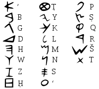
look like inversed k from the image is inversed runic k (ᚴ) in the text form: 𐤊
ᚴ makes k inversed h? but k in h form is also seen.
also 𐤅, which stands where F is, looks just like Y (especially in the image) which combines Y & F even stronger than 𐤉 standing for i, or they even transliterate as Y in that image, looking just like inverted F.
And if we recognize Ḥ as fowel (vowel) - just as H is E, and EWZ is a linge alright - then ḤṬY (𐤇 𐤈 𐤉) could be another line, which places L into vowel position and LMN becomes a valid line. word line can be that very lmn structure, if m does relate to y (which it does over v & n, but that's still not convincing enough)
Socrates taught both monotheism and pederasty, and it could be not a coincidence: before monotheism at least duality was present, after that some hermaphrodite appeared instead of Hermes and Aphrodite.
There also was a more explicit form of обожение in polytheism, monotheism stopped that, but only until baby Jesus came, but not for long, the antichrist of Saul tuned it all back but forcing his way claiming that J was that very monotheistic g.o.d. himselſ. Even though J himself taught that he is OUR celestial father, and that he baby j is no different in that we all can do what he did.
suffix -ko is уменьшительно-ласкательное в санкрите (Валюшка поведала)
в китайско-японском 子 is ko (child) and I only knoticed that in молот молоток молоточек
что если это сравнительная и превосходная степени?
ок (ук ек) = or (er)
очек (очень) = est
k ~ t? ᚴ ~ ᛐ and thus once a gain an invariant of ᛁ
(invariant is variant. it is weird, but not as weird as inflammable being flammable)
ИМС(3) и мать сыра (земля (также третий состав))
это ещё раз убеждает меня что бог есть (ибо сказано "где двое или трое соберутся во имя мое, там и я среди них" и я осознал что именно Иисуса я в свое средце впустил. до того как, лишь его.
я мать? я меж и & c, записываю с игорем и свожу с с
is it what I got fow watching wings of glory as a child? here I connect me to that band officially and thus I both raise them to glory as I go there too and I raise myself the more they raise. and its's a mad episode for atheist, because i thinks there's no god, but now I know it is.
I only must now understand the nature of that god (ow will I come to непозноваемости природы этго мира? мы никогад точно не поймём, но точно синоним абсолюта, лишь потому, а так да. бог познаваем, всё о чём говорится познаваемо по крайней мере до некоторой степени.
(некоторая = необпределённая)
Атец Мать Сын,Дочь,Тети(Дети, о видимо и тёти дяди в этой группе, другой-то нет)
(кажется я говорил об этом, возможно в другом контексте, и может е здесь а в тетрадках, которые ещё не сканил даже, в контексте важности родственников? там другой порядок вроде был)
т.о. христианство продвинуло белый геноцид, мешая своим индуцирующим психозом людям размножаться (символы семьи у христиан бесплодны, монахи и монахини тоже призваны сохранять "чистоту" и что если затем им открывают, что это дабы обезопаситься от половых хворей, но это могло быть в раних культах, христианство это глубочайший уровень профанации. И при этом я с Христом в душе? Дух Святой вметсо детей это геноцид, это 0 который тоже когда-то тогда познали? питаться святым духом значит голодать)
но они ещё хитрей поступили, исключив не сына, но Мать. (Мария в ев-н-х одна из антагонистов, Магделена ближе чем она, и в конце они вместе оплакивают её сына)
Итак, три матери обернулись Матерью Отцом и Детьми, и если это продолжение тай чи, тогда тай чи это Гласные и Согласные (но удивительно, что в европейской (в алфавитной) традиции согласной является Мать(с детьми) может потому на иконах женщина объявлена богоматерью, что почти всегда с ребёнком на руках, что на ином уровне подтверждает её тётность (чётность тётность, это была опечатка, но я уверовал .бог с нами)
И таким образом объясняется почему c столь близко к б как child & babe
Раз уж я признал АХСИМСЗ божественным творением, это гимны нашей христианской секты (православная секта тверских мирян. челяббнский флиал) я использую это как исследование языка дальше: ИМСЗ может быть праформой of I-row, где C[k] и z[N]
eЁжЗ
иМсЗ
иМс три буквы, три матери, алеф мем шин, сЗ значит Т? подобно тому как щ есть шт (шщ~ст)
шш = с? сс = ш!
сст = щ, сс = т? It's funny that in my ocd (from which this work grows) it was true, because s was equalized to th, and thus ш was thh, and I'd сократил те две х, but beware of addictivity of that game, thus whenever you find yourself сокращая letters like that, be aware that it can (has potential) turn into an ocd
can = has potential? n is hass, because of own, имая?
thus c is potential? nah... I've been just trippin' again
In italian alphabet third line goes like this:
ILMN
it's almost as if L is similar to J or й, the shorter form of I, and indeed it's even more shorter, because it takes two l's to make a й (mallorca, papillon, lleju, etc - and I also read hello in this fashion in .odo, giving thus a brave etymology of that word and if hello is hey you, then it gives another excibit to that pronoun story because it makes you similar to le (как ты и то, те; as thou and they, who thus could be initially "yours" thee's, вы и ваши? но таким образом множественное лицо третьего числа разеляется на они (его) и ваши. и наши тогда тоже, три группы в третьем лице. или мы вы они и есть те же самые группы? говоря мы мы говорим о своей группе в третьем лице. или это первое? зависит от отношения говорящего, но здесь семантически едины лица первое и третье, второе и третье, а третье расцветает оттенками различных лиц))
Russians are tragic? Oh yeah... They want us this way, were we out ... were we their anemies?
unemies a- is un- is ин- им- ир- ил- (that's pretty much the range it all goes)
God hates cowards, but that's all stereotypes a flick of flags to flock tha flangs in charge.
Okay, here I dare to show you what I asked myself not to spread,
my ocd.
(even though I decompose it there, and it couldb be a key to cure ocd's, I give you no guarantee about it, take your own risks. or don't)
B is buki in russian, and now I wonder if that letter represents a couple of books? Like old and new testament maybe, or since the form appeared before Christ, could this meme of two testaments be older than that? Like old and new eddas or something.
Waves of information brought me something relating to what this work begins with and it also mentions some other ogham. I will ask the author what it all means after I read this chapter myself:

So I asked:
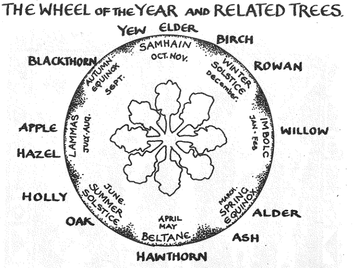
I also wanted to ask him
> seven Maines and seven Manus of the Irish Texts and of the Indian Puranic myths... sons of Medb and Mādhavi
Letter M has some special position in the alphabet. I also read somewhere that every letter stands for some deity. Could you please look if you can tell which religious tradition fits the alphabetic structure the most?
but I decided not to. at least for now.
but instead I contacted another big man, with this letter the poetic end of which I will use for my further research:
(I should rewrite such lines into some smack oneliners)
Please
forward aeiou.ru
to someone who underdstands.
I
am so bitter I need some honey.
To
make some benevolent work in medicinal architecture, no
strings attached if possible, I'll make it all in
documentaries, but I need no boss, don't want to make 'em
responsible for my savagery:
That
alphabet work still has its poisons, and not all of it I
have reversed in some wild plot twist yet. or never who
knows. nose hose rose lose toss juice choose chews jaws
jaw's chews choose (bones out)
oh, I didn't expect this jews-bones reference!
jews choos as judges
jaws choose
it chews it chose
чуствует
чует
жуя
and I decided to make in this short i-liners so I turn them into songs, and I took my bass to find strings:
jaws choose (first string (the basest) с зажаым на четвёртом ладу (открытая нулевая) и second open
jaw chews (the same: 1st on fourth, 2nd open)
jaws chose (1st on fourth, 3rd open) I found it fascinating how the pattern for strokes changed)
I am a demon with christ in my wherever I opened him. so I'm neither hot nor cold, so it won't swallow me, but lets me be, now I have to rewrite the same into some song
because fuck sides man, pease, love, unity and having fun!
царь горох царь мира? pease as a misspelling of peace
and it's fascinating that chews merged with чует, because that line began with knows.
knows chows? actually coudb
this db diletter looks so much like penis, and I don't feel there're many words with this, but there are a lot, but they all are made of two words with this db exactly the boarder, which peculiar. like goodbye.
for even tidbit is of tidy and bit
And suddenly I realized the positive role of christianity, for it pushes ibbur so passionately, so if обожение and other invocations have some actual effect on people, it's better to lead a good man into their hearts before some evil takes root in it.
In Spannish alphabet Ñ stands at the place of ס, which is incredibly similar to o in it's graphic, so it could be some misinterpretation of the sign, but Ñ is simlar to ng, runic form of which ᛜ also reminds o
Could it be some similar mistake, because on some holy alphabetic tablet o was written twice:
abcdefghijklmno
opqrstuvwxyz?
if ij reflects w, then n reflects whatever 27th sign is present after z, and traditionally it is &, and & ~ 'n'
= this book turned into a festival of bragging by my scientific genius, here's a thread I was banned out of, and my comment probably breaks something in that stick stuch into the wheel of physics.
or it only breaks something in the way they teach it.
or is it just anohter example of my arrogant ignorance?
(I returned into the thread right back from another home)
You can also see now what sort of a psiegk nutsy I have become
awkward ~ aqua -er -ed
(?)
but if all системы отсчёта are innertial (whatever it means) then you cannot say which is moving in relation to which (but we know sun revolves around sun, ot the other way around, weven though the both is true, sun is probably influenced by the earth, as for 3rd newton's law, which is also not newton's.
(but it was said before that thread have taught me something bigger)
Ethiopic numerals are something interesting:
ቁጥሮች (NUMBERS)
፩ 1 ፪ 2 ፫ 3 ፬ 4 ፭ 5 ፮ 6 ፯ 7 ፰ 8
፱ 9 ፲ 10 ፳ 20 ፴ 30 ፵ 40 ፶ 50 ፷ 60 ፸70
፹ 80 ፺ 90 ፻ 100 ፲፻ 1000 ፲፲፻ 10000
፩፪፫፬፭ are interesting because ፪፫ looks like ВГ and they all could be sign-language-signs:
፩ for a pinky, ፪ for two fingers, ፫ for other 3 when a thumb holds an index, ፬ for 4 fingers, ፭ for all 5.
but it's just a guess, take it into consideration, but not too serious.
Сейчас вернулся к идее Луны как триединой богини в одном комментарии:
> Луна соответствует чакре сердца, а лунные узлы Раху и Кету
Раха и Кет - нзвание этих дополнительных чакр?
Эти три чакры - три фазы Луны? (триединое божество в дохристианской традиции было женского пола (тридеви хронологически раньше тримурти) и общеиндоевропейским: https://en.wikipedia.org/wiki/Moirai (три женщины, молодая, взрослая, старая как фазы луны растущая, полная, стареющая)
Фазы луны намекают на четвёртую ноту (мёртвую?) сокрытую (захороненую?) и в алфавите (который по легенде был этим же триединым божеством создан (aeiou.ru) uvw имеют четвёртую сестру: y (а ъыь имеют то ли б то ли ѣ, но б-ѣ имя табуированное, но и не факт что это связано, потому что иначе это и есть dieu bla, Deva'l, Eve'l, ибо в тай-чи солнцу противопоставлена луна, но lune = moon, maður = man говорит о том что это слово матриархальной культуры? Тогда как S-n это и Son, и Sun, и Satan, божество которому плевать на наши молитвы? тогда как луна непосредственно связана с жидкостями на нашей планеты, что объясняет противопоставление воды и огня, но луна ассоциировалась с зеркалом, в которое лишь смотрится земля? потому что материнский культ связан с землёй, змеёй? god ~ гад? это какое-то гадание, извините за сырую информацию, но я не ожидал что гадание так похоже на гад, это камлание? нет, это что-то другое скорее всего, но земля как раз жертвы (удобрения) принимает, может индусы потому и уважают матушек коров,
http://www.symbolarium.ru/index.php/Корова - Основные значения: Великая Мать, богини Луны;
я видел конечно корову с луной (ниже пишут, что с солнцем) меж рогов, и что рога в форме месяца, серпа? mes меч в монгольском вроде и нож в нидерландском, месник и мясо могут тоже быть от этого месяца
https://www.newacropol.ru/Alexandria/symbols/cow/ - Она также представляла луну и небо; ее рога напоминали полумесяц, а молоко ассоциировалось с Млечным Путем. Встречающиеся изображения коровы с диском Солнца между рогами являются отражением идеи о небесной корове-матери, которая заботится о Солнце в течение ночи. Великая Мать и лунные богини зачастую изображались с коровьими рогами.
https://ru.wikipedia.org/wiki/Хатхор - В древнейший период Хатхор почиталась как небесная корова, родившая солнце
> Даже если заблокирована какая-то чакра на спинном мозгу, необходимо поработать руками.
эти две дополнительные чакры отвечают за руки? (ссылка на sahaja-lib выдаёт ошибку соединения с базой данных)
\\\\
the answer was:
Лунные узлы или Раху и Кету — это две чувствительные точки на
эклиптике, в которых проекция орбиты Луны пересекает проекцию
орбиты Солнца.
http://sudarshana.ru/vedic-astrology/planets/rahu-ketu/
история их появления - Вишну запустил чакру и демона Рахукету рассекло на две части в тот момент когда он обманом украл нектар бессмертия и пил его. Обе части стали бессмертными божествами.
////http://sudarshana.ru/vedic-astrology/planets/rahu-ketu/
история их появления - Вишну запустил чакру и демона Рахукету рассекло на две части в тот момент когда он обманом украл нектар бессмертия и пил его. Обе части стали бессмертными божествами.
Когда я думаю стоит ли мне отправлять копию этой книги в синагогу, как я в некоторой степени обещал. Я думаю не дразни гусей: гуси довольно мирные ребята, но если их разозлить, можно получить как следует.
И меня осеняет: гус джус, не те ли это гуси что спасли мир (интересно будет почитать как именно) гуси что спасли рим я хотел написать, но джус сэйвд зы уорлд? эм ай крэйзи? бат зэя ауа азазэль.
русские зайчики, евреи гусята, носята, гнусята, гундоситъ, надо для остальных наций подумать.
americans eagles? зайчики завидуют птицам обзывают петухами всех? блядь как же я сука охуел
А̃
это один символ сверху, и это каким-то образом я начало чататься в обратную сторону:
вики на эту букву выдаёт Ꙗ, ꙗ, а в А̃ здесь есть прабел, попробуй выделить эту букву, она необычная. И словно ~ есть и (и всё это читается в обратную сторону)
И это перекликается с тем, что Я и I (ай) также произносятся в противоположные стороны.
Ⱑ is what's used in glagolica instead of Ꙗ (three pieces of Ⱑ tell it couild be three mothers, and fourth is traditionally hidden, if it's in 3d) Ⱑ три матери? и гласная А, и язычная J и губная? Ю is IO and it's the very Я in italian, jo in spannish, Я could be a way to write Ⱑ
I need to find out what tradition uses А̃ in the first place.
евреи не только гуси, но и лисы, что удивительно в свете того, что л и г перекликаются своими формами и вот такими примерами. go no lo? what are other examples? I just found a new(?)one.
третья буква в этой группе - й и она попадает прямо в цель: йуси, йоси ez
Если так я могу эту букву крутить, то давай покрутим и остальные: лисы лусы? теряют добычку когда за ними гонятся? волк бы уволок, он сильный.
лисы гуси козы? что между ними общего? гуси вкусни, козы вкозны входят, но это подгон под ответ какой-то, ассоциативные связи. ассоциативное мышление самый примитос, гони на абстрактном. но абстрактное ближе к математике, а ей можно что угодно... это я повёлся на какой-то засёр науки, который хапанул и в котором заслуженно даже поучаствовал, матеша не докажет, что 2+2=3 например, это бред и ошибочность его доказывается на основе определений двух и трёх, 1=0 получится если это принять, а то полнейший дзен. з дез. я zed/ (d'ass, зад, жопа)
и когда Рамануджаном сломали математику (его преподают не так как он передал) придумали непроверяемых теорий струн (но какого лешего я о ней знаю)
Я назыаю русских зайцами (русаки - порода зайцев, в детстве мальчиков зайчиками наряжают (а девочек белочками. но чаще снежинками, так дешевле)) но зачастую их называют медведями.
Волки и лисы только прикрываются зайчиками чтоб обстряпывать свои грязные дела? Алсо зайчики когда не загорелы беленькие, лисоньки кстати тоже беленькими бывают, волки бывают белыми если полярны, но их серая шкура позволяет чеченцам ассоциироваться с волками. Русские зачастую хотят ассоциироваться с медведями, но тогда им нужно жить на севере, потому что все белые медведи там, здесь их скорей всего вырезали. Может затем и вырезали, чтоб русские с белыми медведями себя не ассоциировали. В этом свете слава Трактору за продвижение образа белого медведя (в современном мире в любом случае ни бурым ни белым медведям нечего делать на воле. это я так решил? это людям нечего делать на улицах. искусственные вирусы уже не шутка нихуя)
USA is further to south, and they have bears walking their streets robbing their trashcans, and there are no white bears in USA except Alaska, which used to be russian, thus it was a noble gesture to sell it to USA so they have their own white bears too. But still bear is associated with brown gay raper there
so not to be racist they call it rapist as it's a therapist, pisting you there тераписта на терапевта поменяли, пото может потому что слово пист на писать сходно и с мочёй работает тоже терапевт. тера кал,? как бывает ухогорлонос, а бывает по осадкам тот кто видит. ты уверен что всё надо раскапывать? к тому же это лажа из серии все изыки произошли от русского. Кто сказал все? Не всё, а тольок часть каких-то слов. и в данном случае это не в пользу русских говорит (хотя как посмотреть) что в говне разбираться они первые начали. Пометить, марать - в русских эти слова и про письмо и про говно, охотничьи узнавания того, что было оставлено неумышленно есть основа языка.
Только ли на охоте подобным заниматься приходилось? Не только, но там это было острее
В центральной России, до того как она была завоёвана русскими, были охотничьи системы письма, где-то в первом томе об этом сказано вскользь, и до сих пор ничего об этом не узнавал.
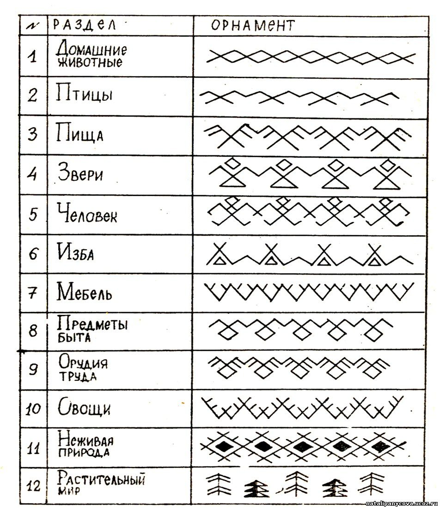
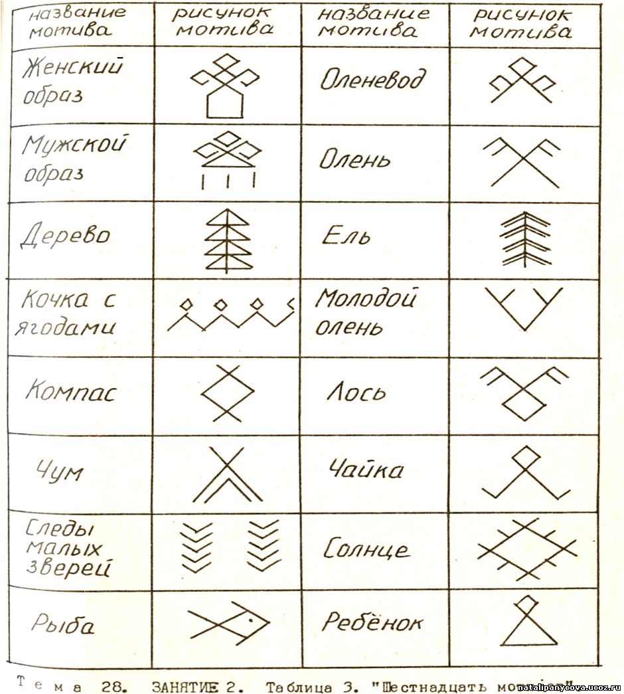
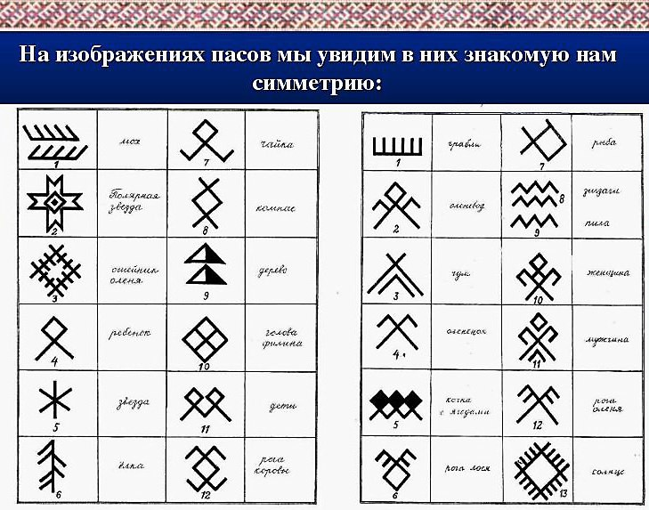
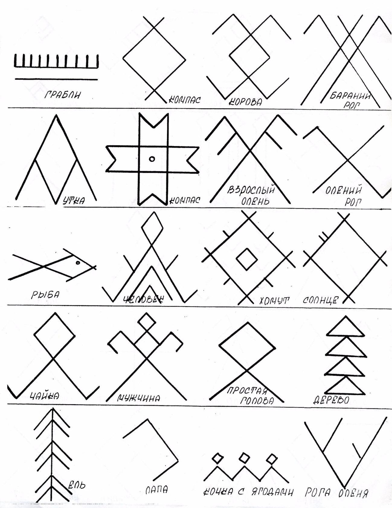
Такая вот узористая стеганография. Это видимо чьи-то антропологические наблюдения, и хорошо что от разных авторов (изображение ребёнка различается, компас же везде один, и интересно что у одного из авторов он ещё и похож на полярную звезду (скорей всего он ошибся, приняв полярную звезду за компас, потому что ему объясняли что этой звездой можно пользоваться как компасом)
Do you remember that vowellless I used in the very bgnnng? There's another treak, related to this one:
If you keep fisrt and lsat lteters in palce, you can raed the txet smoe tmie eevn not ntoincig it. At least it works in russian. In both tricks first and last letters are the same, but this second trick went further:
g-t for both goat and government, г-о for both говно и государствоа, s-n for both son and sun and satn, e-h for both eloah and earth, m-n is for both moon and man (it's maam, m æm meam me am)
æ is named ash (ясень) что перекликается с огамом.

ᚁᚂᚃᚄᚅ ash is the fifth, while it's place is third. they mutilated this system in writing system, but they didn't know of the tree system of ogham.
That year-circle shows that Ash is the only 5-stroke leter, as if it's an additional one, the last one, and in some alphabets æ is positioned the last, which could be in christian tradition of A & Ø
The letter of ash is nion, which is ᚅ (was I wrong when I said that beth-luis-nion is the original order? (I said so only because I first new it under that name) is Beith-Luis-Fearn the true name? BLF as n BeLieF, not some BaLoNey and then these 12 fall into two dice in which linguals and labials take turns: B-L F-S H-D T-C M-G N-R
And Beth is the first letter again!
never go labial in the even position, it seems this culture puts females first.
the only somewhat lingual in the odd position are H T N, and they all are somewhat labial:
H gives birth to P F B W in japanese, it stands in that labial claster between N & M
N is some invariant of M - I am still not sure if invariant is the word, but I've been using it in this work for some reason so if I find that it's not correct term, I'll replace it all together)
T there is probably Theta, θ which is actually some of these: ӨӨ̄Ө́Ө̆ӪҨԤҦѲѳ
Буквы со сходным начертанием: Θθ·Ѳѳ·Ɵɵ·ፀ
another case of B as first letter have found me:
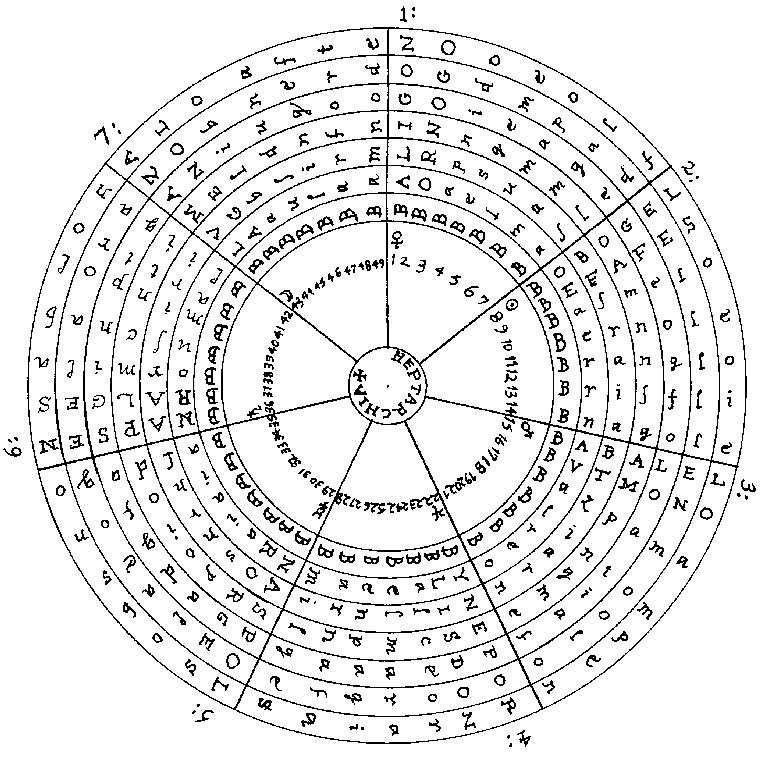
Tabula Angelorum Bonorum 49. The first two angels listed in each septenary are the King and Prince, respectively. Note that each septenary of seven angels is ascribed to a planetary symbol.
And that pdf gave the source of that image and I went to that site for more, and I searched it for alphabet and the first gem I found also had b as the first letter:
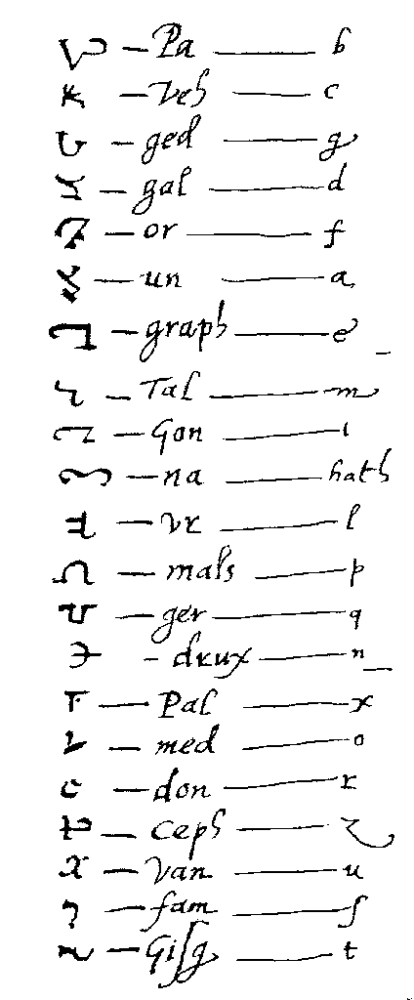
and it was a decyphering of this sequence:
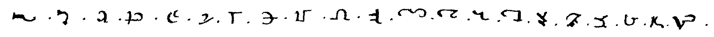
(read from right to left)
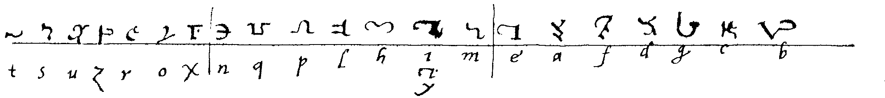
this interesting B to T thing suddely makes eochian alphabet more reliable to me, and that is from glorious John Dee, whom I liked before, but mostly because we share the name.
I wonted to collect all the alphabets, so it's a good context for this part I craved to know but was too materialistically snobbish to dwelve into.
But the fact that b & d are not opposed make me turn on scepcis back. p & q are but in the opposite way I'd expect them to be when I compared them to Ⰲ&Ⰴ, but then again P could stand for d (papa & daddy) while q could be a form of b (baba & queen)
But Agrippa's Of Occult Philosophy, Book II. (part 2) seemed unreliable to me: it contradicts what I know and what I don't know also don't ring no bell, as if he made it all up (except some banal יהוה thing)
But then I notice he also knows Īv̄ X̄ здесь macron съехал у меня, не знаю как у вас
and it tells me to pay some respect, I read his bio and he seems to be legit, for a mystic.
I think I demand his attention if you think how I dare, I don't take this transcendentant stuff seriously, not directly, but as with christianity: people who dig it don't dig deep, they're sensitive boys and girls of all ages and creeds. And I dare to perform an outistic scientific approacth atheistic I think was the word
and while I was looking for those macroned letter I found something interesting:
https://en.wiktionary.org/wiki/burts#Latvian
Originally the masculine past participle of the verb burt (“to conjure magic”) (q.v.). Just as burt originally meant “to carve (marks, on a tree),” burts was originally “mark(s) carved on a tree.” Cognates include Lithuanian bùrtas (“lot, (pl.) sorcery”).[1]
isn't this find at this very moment magic? If I asked if Agrippa based, I think I found my response.
And the third find was some riveting Dr. Dee's literature I don't dare to descend into, because I don't understand it and don't feel fond of that enough to read it all now (I have some more both comprehensible and reliable literature in my shelves) but I post the images that could lead somewhere:
(I still have no idea what they're telling and if they genuine or not)
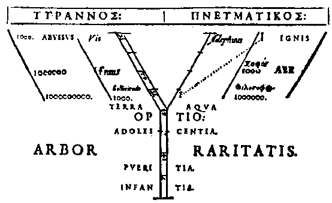
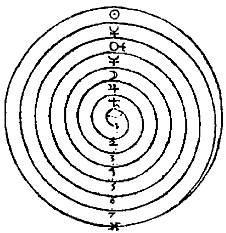
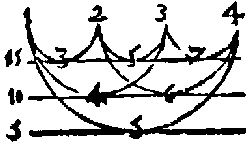 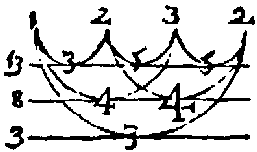
That last one is something pythagorean, so it is here to look at it later or who knows
then fourth book in the search was Agrippa, and it didn' ring no bell again, so it isn't here
the fifth was John (or Jean) Dee and before I looked into it, I expect it to bring something for me:
but it's the same book, yet a couple of images are in better quality:
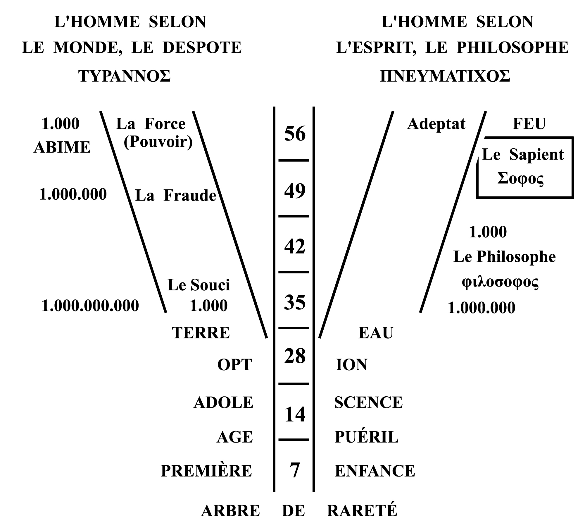 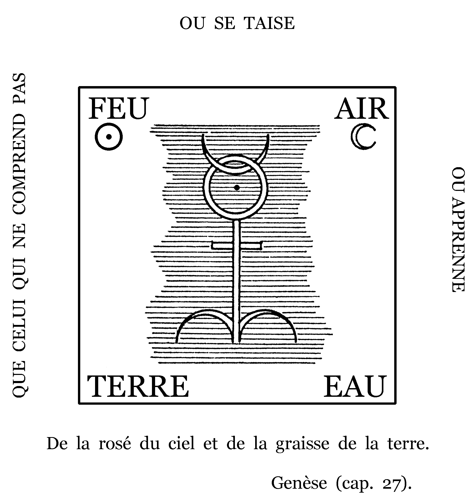
Everybody heard of Agrippa, almost nobody among common public have heard of Dee.
(don't believe the hype, aye)
The sixth find is again something of Agrippa and I realize how he is relevant:
he probably was the one, who popularized hebrew, and now I don't find it something special. it was.
All the other books I found that way seemed to be some nothingburger, just playing around hebrew alphabets, as those witch alphabets (I don't find them authentic, so I don't feel like inserting them into this book, or else I'd have to collect all the other artistic artificial alphabets, which I will not)
and here's a brightest example: they claim hebrew letters are the best (obvious propaganda) and yet they don't even notice that their chart is all out of order:
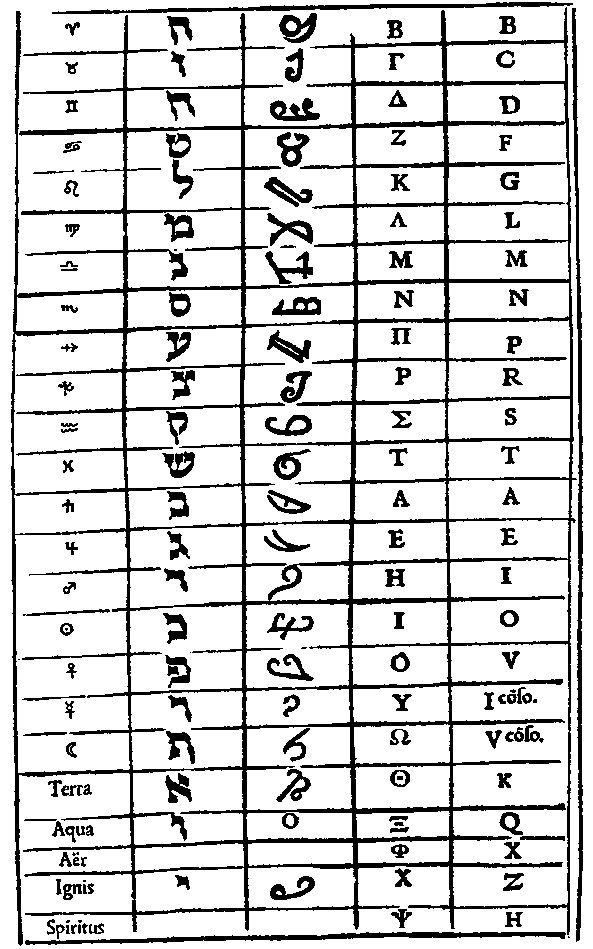
or amy I just an ignorant fool and this table wasn't supposed to tell מ is L and נ is M, but it could show how different cultures numerate those astrologic signs? (see Z & F, those are greek and latin)
And in that book Agrippa touches the subject of three mothers, but in his book it's somewhat different from what Sefer Yetzirah tells:
Of these, amongst the Hebrews, are three mothers, viz., [Alef, Vav, Yod] א, ו, י seven double, viz. ב ג ד כ פ ר ת The other 12, viz. ה ז ח ט ל מ נ ס ע צ ק ר are simple.
but they agree in the main feature of those letters, that it's vOwel, laBial, linGual
it could be that these beliefs come from the same source, because when there were only these three letters, they were both either and neither ו & מ, or and nor (י & ש (ת (and aleph probably was stated expicitly, or these two sources I have simply coincide in that one)
I've decided to enter a image from Agrippa book I only mentioned:

because it made me thinking: not only have I never seen 10 as Δ, I also didn't think of 5 a of П, and it's fascinating how this labial reminds runic ᚢ which stands for V otherwise used for 5, and it aligns them in some other alphabetic sequence of ΙΠΔ (пять = 5)
which makes Agrippa even more reliable than Dee for me, I yet have to figure out if enochian alphabet is based or not: it begins with B reminding V and C reminding K, but the rest is way more messy, both in order and graphic.
They both are not respected by modern scientists, like those freaks I mentioned earlier, I wonder if they are destined to leave their own retarded traditions. They alrady did. Do I envy? I awe how they ever..
So here I look at what he tells further and it looks lame and gay how he writes 50 and 500 and Η four hundred could be unrecognized shortening for hundred (as M for mile) thus 50 and 500 are that very Π over 5 of what. M as 10000 kind of contradicts the other tradition, where it's 1000, but it relates to some other one, the chinese-japanese where 10000 is named san, so that M could be Ϻ, but my memory failed me, it's not san, but man: 万 (san is three: 三) so it correlates it even more, or am I only trippin..
that X/M doesn't relate to roman numerals, because X is also a shortening for Χίλια (thousand)
П is not directly for пять, but for penta, πέντε, of course, and M could be for something greek too, but I haven't found what word that could be.
Academia doesn't allow this way of writing: when I say one thing, but then refute myself in thinking somewhat otherwise, but their rules are understood, but despised: they allow students to prove their words by referring to some book, as if books never lie (I won't go further explaining why it was made so and why it's bad, not in the mood to diss)
Another example of H standing for B: musical notation (hardly can it be a coincidence, somebody knew japanese or both he and japanese knew something else I yet to find out)
Did I know that fame destroys and maky faky so I made this work so toxic they yet have to extract the safe fruit out of it into their brochures?
And I look at the way we cheer up greeks to shoot the rapefugies, and I understand the germans who wanted a total war.
Лицо краснеет когда гонишь от себя дурные мысли., когда мозг выталкивает кровь?
это я Вспомнил как затупил в очередях, проявив излишнюю расслабленность сменил очередь перед носом у другого русского (и подумал что наверное покраснел от стыда почувствовав себя оленем и начал думать отчего краснеем физиологически)
сейчас вспоминал это настолько интенсивно фракталя мысль всё глубже и глубже почувствовал знакомое чувство: я иногда растягиваю череп мышцами головы (а иногда и руками) to чтоб в трещину выделилось жидкой кости и через стал бы больше, освобождая место для новой нейроткани, куда записалась предыдущая мысль:
чуреки лезут в европу, они отсталые и до сих пор хотят войну, и мы все хотим войну, с кем поведёшься от того и наберёшься. Так это всегда происходило? мир позволял свободное передвижение, свободное прибытие иноземцев заставляла аборигенов видеть гостей как пришельцев, как противников, чужие обычаи противны, иначе мы бы давно приняли их, стали бы одним народом, но мы разделены по причине личных (возможно генетически обусловленных) противоречий. итак, неприятие порождает неприятие, провоцирующее вооружённый конфликт, как было во вторую моровую с евреями и прочими коммунистами, так похоже готовится в третью с арабами и прочими мусульманами. История рифмуется, как сказал Марк Твен.
И таким образом я вижу будущее, которое может произойти, и таким образом я могу попробовать его изменить.
Политическое решение: выслать бОльшую часть темнокожих гостей города в специально построенные города (желательно не на территории страны, а в странах их культуры - т.о. и гуманистические цели будут нашими целями: сохранение их культуры, но мы ненавидим их культуру, мы бы с удавольствие м их поменяли. Но может лучше не лзть к ним и пусть друг другу письки режу, спины секут, бошки рубят, камнями закидываются, поебать должно быть на безумных? Но пришлые из прошлой войлны учат, что история началсь в тех краях (их история? возможно библия пиздит а они занявшись наукой нашли что то слово переводится не как египет? они цигане притворяются то ромалами то hеgypt'sами jews and gips could be transliteration of the same word so I need to explore if цыганский (а их больше чем один вроде) и еврейский (иврит и идиш) имею общую лексику. Идиш диалект голландского, так что имеет смысл смотреть на отличающуюся от голландского лексику, а в иврите смотри на то, что не похоже на арабский, хотя для меня они один чёрт, т.е. общие черты. Черта абсотрактное понятие, а абстрактные понятия трансцендентны как боги духи дурги други friends fiends ghests hosts ghosts
Моя задача - предотвратить следующий военный конфликт
и я используя мышцы головы растянул череп (найти бы оборудование, чтоб проверить это ощущение)
both hosts and guests should be friends as ghosts are fiends so gods we inevitably become should be in a friendly spirit. thus lets give each other love: ghuests give hosts the privacy they want, hosts give the guests all the gibs they crave. Buy thir loyalties, send outside those who misbehave miss mee bee hive
When we're all scanned we can make misdoers personae non grata and forbid them from a city where their victim lives (as they did in greece exspelling criminals off the polis, but this punishment doesn't make much punishment when there are thousands of the cities like this one, so sending him out of the country will be needed? stronger borders would be needed
That's a crap solution, see, we need something else.
And it's psychiatry's possibilities: if a person adapts some unusual social norms, he could be corrected in a facility or sent to country who wants him. and if nobody wants him? to keep him locked in a refugees camp? as in a labour camp? In a city that is closed as some special secret soviet town, but then their country of origin should share their land to such a city in their country of origin. It's only fair this way. What if nobody from Europe wants to live in sahara? those who do will have a bigger part. What if the citizens of the european country you exchange for some midleeastern shithole disagree with your polities? shit decision again. Look further, there must b a better way:
Nobody cares who's who when we all live in autonomous underground capsules.
And those apes who live asurface will be in a whole new world, so trying to stop the chaotic movement is like preserving its previous state, trying to stop time, but only stopping some processes to happen until you can't control them, it's an image in my head, as you border a part of a flow to make a lake or some stale shit, the flows are more awesome, so don't be affraid of them, change life so much that the old problems are irrelevant.
Support nazis, who will throw shitskins away before it's to late, but then be ready to stop the nutsies before they go messing with their legitimate neighbros, helping them to throw the shitskins away for example, but let's make it with propaganda showing advangates of those nazi polities.
And those who sympathize the muzzzs, let them donate their charity in private way, not in our expænse
Government still can be good, if it acts according to some hardcore statistically based science, open-source, ai, etc. Yet military power should stay in their baracks not subordinate to ai. Ai.go (artificial intelligence government) should be able to find peaceful ways, the solution of war should be handed (and explained) to humans and some the most peaceful ways to lead that war should be recommended.
The way I ended vol.2, that picture of Crowley leads to a thread that took place a year ago, thus it took me a year to write the other 2.5 volumes, because here comes another one, I think masons will like the way it ended, I didn't expect to have this sympathy for them myself:

It may seem that this book is satanic, but Jesus is the only demon I allowed to enter, because christian bible teaches this, and it's its positive value: it leads its readers to ibbur to prevent dibbuk.
The idea of Jesus being a Luciferian figure is hermetic, but probably was considered heretic too.
But we shouldn't forget who considers this, in whose grasp this world is according to that very bible.
Если воспринимать бога не как образ для поклонения, а как символ для обожения, то понятно происхождение мужских богов среди мужского населения, и понятны причины гомосексуализма среди обожающих мужиков собирающихся вместе. Более древние культы наверное не ограничивали присутствие женщин, но женщины отвлекают от настоящего обожения, но на него большинство племени неспособно, только на обожание, восхищение, и даже это если повезёт, прошедших через обожение обожествляли, они редкие ребята. мы редкия ребятъ.
Suddenly I realize my beef with Agrippa is that he placed yahweh into tetraktis, which tells me he didn't know what tetraktis was, that is why magicians are not recognized by scientists: they cannot distinguish their creative inventions from actual scientific revelations. I still don't know about Dr. Dee's enochian alphabet. The story of how they acquired that tells it's of their invention and shouldn't have been taken seriously. Compare it to how armanen runes were acquired according to their author (his word is not reliable enough to say it's authentic, but this research's proven them to be) read the parenthesis (a long word, but shorter than "what's in the brackets" and that's why russian has to change or go: when I write in paper, sometimes page ends before the long russian word ends, so I just shortened it by substituting all the russian suffixes with an english one. многа букав. (что в даном случае самоирония русского про русский, это исследование безусловно много буков, но это не графомания, потому что всё это важно (я задавался вопросом "что такое графомания?" ведь моя проблема была в том, что меня ломало писать, что это за болезнь, при помощи которой можно зарабатывать - так я оставался в непонятке, пока не получил письмо от одного бывшего чиновника, которого пробило на откровенность и он начал присылать мне полотна текста о своём сыне, о машине, о всякой фигне, и я понял "а.. вон оно что.." (про то что бывший чиновник это я в ходе его откровений выяснил, решив поддержать разговор (он от кореша пришёл с просьбой помочь типа это и корешу надо, кореша предупредил что у чела жена бывший главпрокурор какой-то области и сам он назвал себя был цербером власти, поосторожней с ним, хотя откуда мне знать что кореш на свободе не потому что не от этих же) и для того чтоб сказать ему что графомания не есть гут, хороший вроде мужик при всём остальном, по крайней мере на этой ноте мы расстались)
вот оно что.."))) that parentheisis tells that among other words I've confirmed the authentity of runic script commonly known as armanen, but I'm not sure about this name, so I call it Bornholm runes (armanen have different G, and that swastic G I haven't met elsewhere, so I recognize it as the difference between bornholm runes and armanen runes)
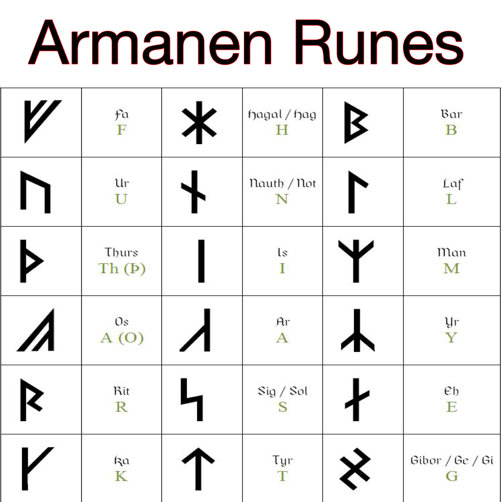
As you can see, you can compare them all to the alphabetic runes of bornholm,
except G, which is the only dotted letter in bornholm stone. and that stone doesn't have C, thus this G thing could also be caused by K column trying to break through. It's a weird letter, yet to be understood.

Now I see that armanen runes are in their aettir, so I want to colour the stone with those aettir,
but it returned no symmetry, pure random chaos, in case you'd like to see it, I'll publish the negative results, as many theorists of science tell academia should:
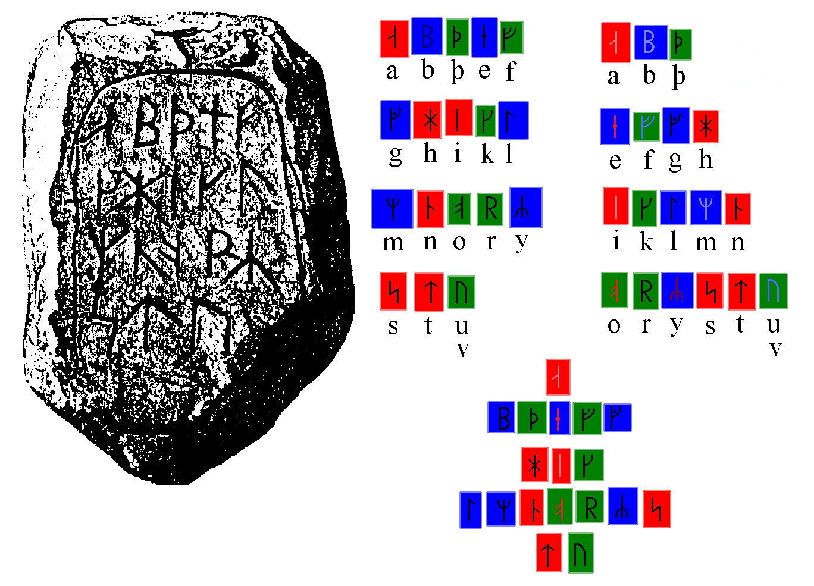
So it made me think tht Bureus is like those magicians invented things he thought he's discovered.
But then I realize Bureus separated those aettir differently:
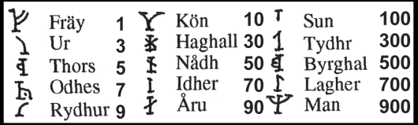
I had to walk this road at least to see this interesting numeral system
(I'll yet research if it's authentic, but click the image, it goes deeper)
so I'll repaint it differently:
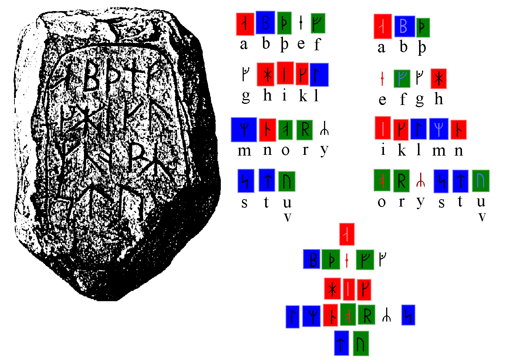
and still nothing.
But Bureus builds some other symmetries, but I suspect a hairy paw of Vatican in this one:
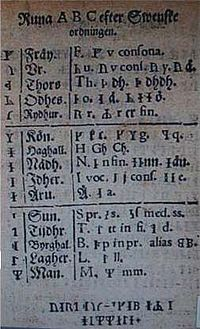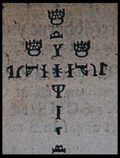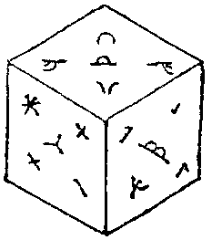
But that linked image leads to where it's said that Bureus used numerology to tie runes to the christian date of him "inventing" those runes:
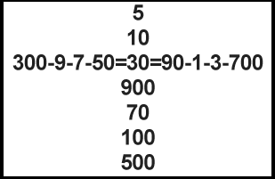
Once again a christian authority claims to author nation's treathure.
But it's more like he invented this cross, for which he could also change the graphical part of some runes to make them lay into the symmetry:
All of the letters of Bureus’ futhark can be found in the rune-cross, so also all the numbers can be found in it, as you can see below. The total of the cross comes to 2775, I don’t think this number has any special significance. A few things are that the right (for the viewer left) arm of the cross counts up to 366 or a year in the complete cycle of the sun, the left arm 794 which according to Bureus is the number of years between the conjunctions of Jupiter and Saturn. Leaving out the K-rune, the vertical beam counts 1605, the year in which Bureus invented his runes. As you can see, you can make anything out of a figure like this. Bureus used a lot of number symbology in his writings, so it is not unlikely that he did they same with his cross, but this is about as far as I know of meanings. and the rest I didn't read
Or was it a way for him to preserve this writing system? I should be careful with my remarks.
But I have to apply that retransliteration of futhark to see what those aettir are.
How jews could be associated with thieves? Воры иногда меняют внешний вид: ты не можешь сделать нос маленьким, но ты можешь сделать накладной нос. дёсны будут как у многих евреев от рождения если вставить в рот вставные зубы, т.о. многих евреев заметали по ошибке, или обвиняли по ошибке, используя словесный портрет от очевидца. Как в одной голливудской комедии словесный партрет рисовал кого-то с картин пикассо, и именно такого поймали на фоне совсем другого эпизода.
the words jews and thieves are somewhat similar: some weird lingual and a labials
in russian they are also similar: евреи и воры, consonants are exactly the same.
Но могут быть и другие факторы, и я не уверен что воры гримируются, актёры имеют право законно иметь гримёрный набор. он должен играть такого где-то, чтоб профессиоалы
if I make such comparison (similar words could influence one another by associative links of misheard) then I would also compare women to witches, the same w I believe.
ΔΛ woke me up today, as skirt and pants to indicate Δевушек и Λевушек.
Λёвушки ловушки, love, ушки.
лов цап, лингуалы и лабиалы.
сначала твёрдый, потом мягкий
сначала липкий, потом гладкий
Вместо того чтоб делать операцию по извлечению отслоившейся косточки, сядь посиди уже, ты как ребёнок бегаешь, падаешь, бежит и спотыкается, пот и пад, умные люди сидят в коме, сидят в соме. во сне. абиогинетические хризалиды. а лучше нимфы (уродливые слова куколка и личинка более в ходу у русичей, но это зря) нимфический скафандр. скафандр нимфы, скафандр имаго (в костюме нимфы спать, в костюме имаго гулять) скафандр уродское слово, костюм.
костюм is custom обличия обычаи
облик облекает, обволакивает, облекать как облачённый. облако? облачённый в штаны
a guy I knew passed away (yet I don't know how) he shared a couple of ideas before he went: a teleporter, which was just a telephone booth, which yould let you see the other city of your choice, in that city would stand another booth - that was his weird idea the way I understood it, but what is much more interesting is where it led me: you can make it not some booth, but from home, and you can attach it in that other city not to some static booth or even pole (or many poles would do too) but to a drone in a form of a fly the tynier you can make it the longer it can stay unnoticed. I don't know if smal things can travel fast. Probably some bigger drone should be used to transport it. In a form of a bird, for example.
another idea was even weirder than that, he said you place plastic film on the ends of a barrel, and you pump out the air, so the film concave, and thus you have a plastic lens. I told him the laws of optic will see this film as two planes breaking the space in three parts without much of magnification. He had nothing to counter-argue, but it made me think what if we fill it with water? And what if we remove plastic, and use some transparent gas of high pressure from both ends of that water? wouldn't it concave with atomary precision?
I don't feel like I may patent it (though it's such things bring people fortunes) so I will share it on 4chan soon after I upload it on github, so it happens on two independent platforms, so I can prove that it was in public domain with a higher probability.
I don't feel like I should patent it for many reasons, and that it belongs to the guy I didn't even like or value (too bad, I'm ashamed, he could have more, I had nothing to do with it, but I could value him more. I should have shared the way I extended his revvelations with him, but he really pissed me off, but it was immature of me to be mad, I should have become a more of a friend to him)
I just was writing in my notebooks (I recently began hatber's's северное сияние и лес с шиханов) and I understood that some things I write here can come inconsistent, because the beginning can be in those notebooks, I shared many in vol.4, I will share some others in the end of this volume or in the beginning of the others (I need some sunner sum to make good photos of those notebooks)
There are many other associations about each nation and creed, but let's compare rus & jus
(notice again how similar these names are, and many jews have russian surnames)
jus are juris, both жюри и жулики (этимологически или нет, ассоциативно точно да)
про то что русы трусы я уже говорил (не грабил открыто, но коварством одолел. не далеко ушли)
dull dumb туп труп
противоположность точёный, точный, точкой
dull dumb туп туманен тёмен dim дымен далёк (там синева в далеке, синий серый черный)
I had to mark most of the text in these later volumes but I mentioned their rawness in the front of every volume so I can go on into different shades of grey through this dark one.
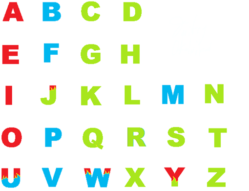
I stared at this image in the context of A(XH)(CS)ИМСЗ and I saw it beginning from A and going to Z in a very specific manner: I didn't see C, I saw S, because that's the russian С. And it just jumped from the first column into the fourth whether to H or X. And what I actually saw first was the fifth column, which included YMS, the three mothers I conceptualized as the abbreviation of my band: ИМС where З is 3 and it's that other band A works with after X&S dropped off (S even worked with that second band together with A) but I didn't think of them.
And before I saw иМС in that column I first saw Y & M being the exceptions and one aboue the other and then I saw that S probably used to be written as Ϻ and it's still Σ in greek.
So I wasn't looking for it there, it came to me itself and for the other time this band's name returns into this book, whether to show hou much it all can be an apopheny or to show how mystic is actually true in magicians' lives.
And it goes further with it's З, because it's that very Z in the end, but I wrote about int before.
And like genetif code this septagrammaton can also be read differently: so that second состав didn't know what I know and they just named their new старуха with the final trigrammaton MCЗ also stands for the guy who came instead of Старуха Изергиль. and if А is still Alex and И is still Игорь, then in that compound Tanya Voyna is whether X as she was initially presented as another Xenya, Katarakta was the nickname, which made those other three KKK, KataraktaKonstantinovKulakov, and now when Konstantinov left (even before that) she's Tanya Voyna, which is TV, the final letters in a way. And that V is the labial she had to be if she came instead of Х(B)
this is me smoking after a day off, but in the evening, my mind doesn't fly high in pure language, but is tighed to some layman matters.
Another attempt of mine to delve into astrophysics in the thread. It's 19:02:40 2020 and I share the it:
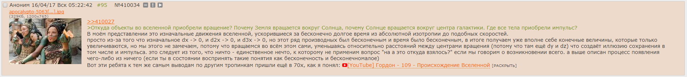
That link is to Pervushin telling of a physical theory which came to the same conclusions I did: not universe expanding, but objects shrinking (because any rotating movement creates move of matter towards it (even if it releases it ont the other side of it, just as stars emit light but attract matter of the space to burn into that light) it just was my own interpretation, I don't understand the math beyond his words, but he writes comprehensibly. Here's the ultimate book of him he himself shared when I contacted him (I was too of a fanboy to send a couple of letters after that, he didn't had time for that crap) and just yesterday I found that he was dead (thus when I wanted to take interview from him a couple of years ago, he was already dead at 72, so no paranoia on that one)
That thread led me to the conclusion not to participate in their pilpul, but to strike it at the heart - is it refutable? (I try to avoid the term falsifiable, because it could be understood wrongly, but I may be wrong myself on that one too)
and
> Detailed measurements of the expansion rate of the universe place the Big Bang at around 13.8 billion years ago, which is thus considered the age of the universe.
> The galaxy MACS0647-JD (inset) appears very young and is only a fraction of the size of our own Milky Way. The galaxy is about 13.3 billion light-years from Earth, the farthest galaxy yet known, and formed 420 million years after the Big Bang.
But they already prepare ground for recalibration of their irrefutable theory by promoting the idea of the universe expanding faster than light.
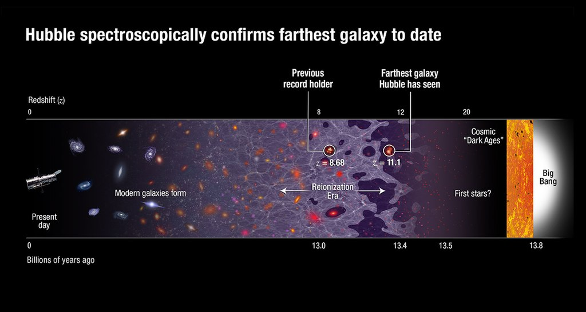
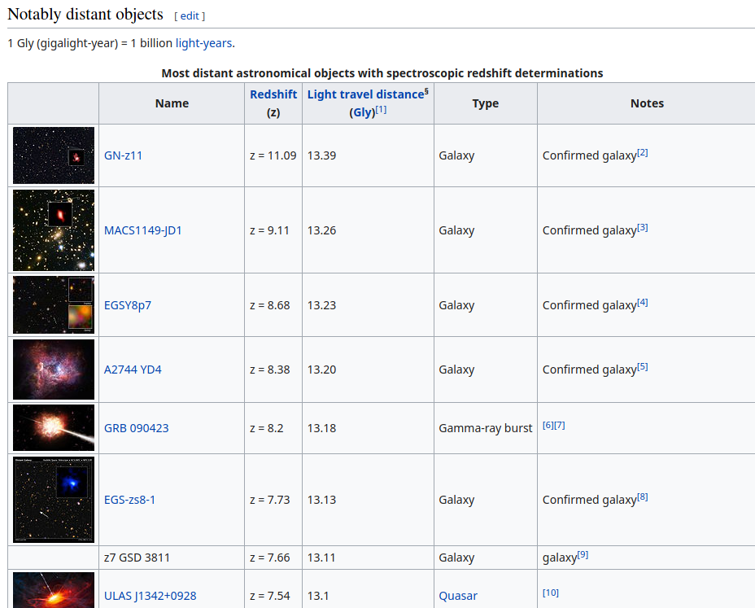
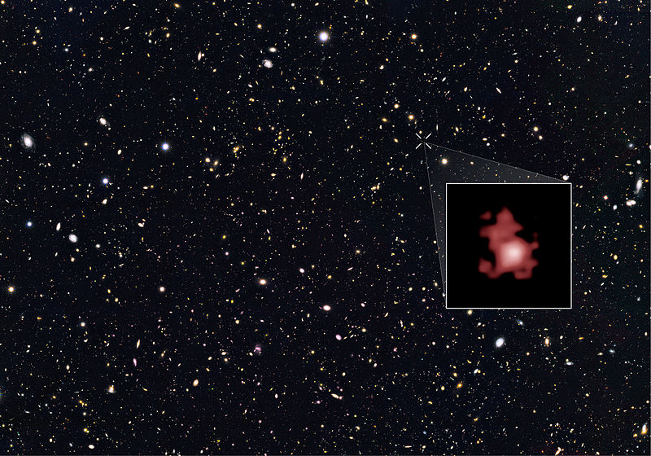
{kind=link}
Открылась бездна звезд полна, звездам числа нет, бездне – дна.
just to preserve the important stuff stronger, I will mirror the videos from that thread:
Feynman on scientific method
Fred Hoyle on restricted access to telescopes
Wtf is dark energy
Dark energy might not exist after all
Trigrammatons in music make me think on that too, and as I deed with poety, you have toallow the bad poems go off your head so the good onew swill have their chance too
Thaeinr can be the bilingua word (phomenko and nosovsky told me that such words existed, which completely changed the linguistic picture, but was only natural: slove is like you poured them together, слил, слепил, словил собрал, словей slave if he sings in cage. canaries do.
And I don't know if this АХС ocd is bad.
But I came here (what is under astrophysics)
Сравнить (Compare) GFR with IMS
И I see that there's distinct similarity:
F & M are theo nly labials and they align them
I didn't expect F to be here, ! oh weesh
Now I tried to подобрать подходящее слово, и я заставил себя печатать непроизвольно,
Т NNNNТТ it's the sam letter, I wasnted to say Now again for whatever reason, and I put T
Some codes just activated and printed this interesting poem.
I is a form of A, that's why it's already as союз, conjugation, souz is the same word.
conjugation is what sovetsky souz did tid te russians.
союз щ is (we=is (?! be!!))
союз in grammar is conjunction
I wonder if these words relate to jurisprudence, because all these cjs' are крючкотворство, ,, and is и[i] in russian and [i] is י in hebrew.
יוטיוב is youtube in hebrew and thus יו is their ю.
Back to that scholastic cosmology thing: pilpul of additional assumptions (dark energy, dark matter probably too - that previous thread claims to have disproval of that aarticle the last (fourth) video is speaking of. (that video has mistake - see in the thread as well (or find the name of the video on other platform) she corrected afterwords.
Pulpil of (you see I ddin't clase brackets, what I just addounced in the intro) pulpil of additional assumptions can bend the world into fractal, where all its infinity was concluded in the psychedelic effect of falling to enternally bigger pattern.
And such pulpil could be the way to сдержать мир в узких рамках очередной абрахамической поеботы. Представь чтоб иИсус это ковгоирил, Поживи он достаточно долго, да без страха воззмездия за ереась в чужих ему краях, он бы пришёл к такому выводу легко, там много некошера, в это авраамической еде
едим едем скотина тащит? скотина сок даёт? сочиная сощная, истощная, скотина это иссякаемые или неиссекаемые запасы? завсисит от того как её держать.
Let me hit the(ir) edducation system instead: I taught a kid to learn in one lesson: after the classes I took the money from a coffy table and told him: see, your mother is ready to speand on yout study, so if you studies yourself you could hav ethis money. But wageslave teachers cannot teach like this, or they will have no wage.
So it's another reason why the best way to learn is to learn for free. You're free to donate to a teacher. But it's smarter to pay him only after you know she is true, for some teachers must be fined.
After three good days that astrophysics thread was "pruned or deleted"
the same shit happened to this thread, and probably for the same reasons
{kind=link}
And to respond those claims of the paper being "debunked already", here's an interview of the same lady who delivered me this information with the man who delivered that information to her and the world: "How good is the evidence for Dark Energy?"
He is referring to the following papers:
at 02:45: Nielsen, Guffanti & Sarkar, "Marginal evidence for cosmic acceleration from Type Ia supernovae," Sci. Rep. 6 (2016) 35596, https://arxiv.org/abs/1506.01354
at 07:50: Colin, Mohayaee, Rameez & Sarkar, "High redshift radio galaxies and divergence from the CMB dipole," Mon. Not. Roy. Astron. Soc. 471 (2017) 1045, https://arxiv.org/abs/1703.09376
at 14:47: Colin, Mohayaee, Sarkar & Shafieloo, "Probing the anisotropic local universe and beyond with SNe Ia data," Mon. Not. Roy. Astron. Soc. 414 (2011) 264, https://arxiv.org/abs/1011.6292
at 19:24: Colin, Mohayaee, Rameez & Sarkar, "Evidence for anisotropy of cosmic acceleration," A&A 631, L13 (2019), https://arxiv.org/abs/1808.04597
at 39:39: Rameez & Sarkar, "Is there really a Hubble tension?," https://arxiv.org/abs/1911.06456
Как я сказала одному еврейскому журналисту, не всякая мудрость мудра. (иногда это просто хохма) в ответ на предложение почитать суфиев (меня притча "увеличение необходимости" жёстко подставило пару раз: проблемы надо решать сразу, а не ждать пока они превратятся в инфернальный пиздец, я так ему сказал. Но вчера я выставил себя дураком когда принял оранжерею в квартире за пару километров от меня за пожар и поехал на такси поверять, но говорят лучше перебдеть чем недобдеть (бдеть бояться сраться пукать бздеть) бздеть не срать но бояться (срать в смысле от сраха) — так что и в данном случае, где "подождать пока соседняя комната так же загорится (но кто сказал что это не ещё одна оранжерея) или пока пластиковое окно расплавится не было бы лучшим решением в абстрактной ситуации: что такое выставить себя дураком, если можно при этом жизнь спасти, может я и спас растения от засухи, сегодня свет из того окна не так шпарит (горело как огонь бы горел, никакая люстра бы так не светила, тем более на фоне того что день и все дома серые без единого огонька) накурен конечно был. но кто такой растаман (замена мерзкому и опасно многозначному слову наркоман) он никому не хочет плохо, немножечко покурит ганжа, библию читает всё понимает. (нас окружают, но мы не сдаёмся, мы забиваем косяк и смеёмся))
Some more random images this time with additional information:

This one was found on some Cambridge site, but they didn't allow it to download they demanded moaney, and that pretty much explains why scam was never welcome into science, those poor bastards are obsessed with carnal shit way too much.
Sci-hub rescued me delivering the book, you can click the image above to see it.
Another find of today is Āli Kāli, which is the name of tibetan alphabet (ali for vowels, kali for consonants)
Here a book where I found this term, it includes some early approach to discover tibetan, today it's obsolete, because we can learn from tibetans directly, but probably it contains some interesting stuff, I also preserve it in this mirror
That Ā link tells that it's a common sanskrit term.
The following image is a link, and you'll find books mentioned there by yourself, it's on web.archive but in such a slow format, that it will make you value more the wild form I give you here.

(it's probably from Museum Etruscum by Antonio Francesco Gori)
a torrent, but you'll need even more powerful machine to read it than for this multiheaded monstrosity.
What that etruscan canon tells is that letters fro A to I could all be vowels:
the middle form of alleged H is strokingly between A & E, the other two can be double E's
alleged TH (T) can be O or be related to I written as T on those clocks where it could be easily fixed if that was but and not feature.
And K begins the sequence of consonants as it does in eastern alphabets and syllabaries.
I woke up with my eyes closed after a bright dream with beyonce-like nigerette singing some modern pop with an accompanient of one short sample repeated fast and changing its tone for melody and two niggers in the audience were dancing by sitting lower and lower to шпагат as if it was a contest or a challenge, a duel, and then he who was the offender sat two deep and tore apart. and the defender (the one who was challenged by the offender) was only half-torn and that was that his legs were lying on the floor, but he could move along by moving them across the floor.
And so I woke up and decided not to open my eyes, but to smoke some weed if I can find it, which I did, and I went to bath with my eyes closed and there I made that высь & низ session, and I thought about how did people keep information before writing. And poems and songs was the answer. And I tried to write about высь (upwards) & низ (downwards) выше и ниже, v & ν, both are ends: v in archaic roman and in runes, and n is in the half of the alphabet:
a b c d e f g h i j kl m n
o p q r s t u v w x y z
here w reflects ij
here y reflects m
and M reflects W
here x is another double letter
thus it reflects kl and thus l ~ s, for l ~ c ~ s
In russian first half of the alphabet is voiced, and that could be what B represents
in russian last half of the alphabet is voiceless, and that could be what T represents.
And if it's an universal pattern, we can see the letters added later.
And we begin with greek, because all its first row is voiced, and that's the link with russian:
АБВГ ДЕЁЖЗ ИЙК Л М Н О П Р С Т У Ф Х Ц Ч Ш Щ Ъ Ы Ь Э Ю Я
Α Β Γ Δ Ε Ζ Η Θ Ι Κ Λ Μ Ν Ξ Ο Π Ρ Σ Τ Υ Φ Χ Ψ Ω
A B C DEFGH IJK L M N OPQRS TUVWX Y Z
If that voiced-voiceless structure is original, russian alphabet is closer to the source of it?
ა ბ გ დ ე ვ ზ თ ი კ ლ მ ნ ოპ ჟრ სტუ ფ ქ ღ ყ შ ჩ ც ძ წ ჭ ხ ჯ ჰ
here vowels are black, voiced are red, voiceless are blue, and it seems nobody but russians care about this division, evern georgian, which saved lineal and axial symmetries thoroughly didn't seem to care about preserving voiced-voiceless structures when it added many lingual to its end.
let's try it with the other two:
א ב ג ד ה ו ז ח ט י כ ל מ נ ס ע פ צ ק ר ש ת
I coloured ה red even though I consider it vowel, but it is voiced (as any vowel, duh)
And we see that where russians only have k, other europeans also have whether H or Θ
(though those who have Θ also had H as a voiceless, even though in runic form it's ᚼ(or ᛡ) which exactly repeats russian Ж which stands exactly there, or before Z which was probably there when θ was the f. or Ж and З are invariants (Ж is transliterated as whether J or ZH (З is Z))
And suddenly I realize that italian doesn't have K (but they do have H, and in my notebooks I theorized that h k R are three forms of the same something)
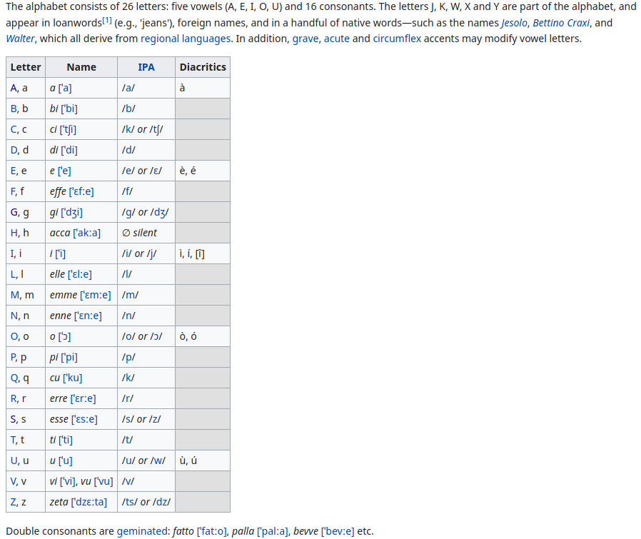
and though it tells that jkwxy are part of the alphabet, it seems they are not:
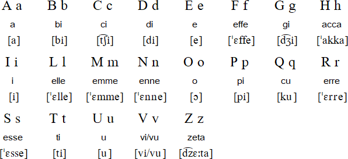
A B C D E F G H I L M N O P Q R S T U V Z
But all the alphabet descending from latin have this C (which all the others: greeks, russians, jews, arabs, recognize it as a voiced letter, and runic alphabet doesn't include it at all. And here it's obvious that ᚦ is a voiced letter, ð, just as Δ is, even though it's told that it's representing [θ] or [ð]
whispering ᚦ is θ alright. And another revelation I had today is that if velars began the language, it could be because the most quiet letter you can pronounce is soft k, and thus whispering is rational thought, unlike scream. And what caused this revelation is me walking around with eyes closed being rather high and I saw the alphabet in an unusual way it was
A Г..
Е..
..
this angle of it, and I saw that it actually was
AБГ..
Е..
..
where Б was a form of Г, thus it's not с from b, but b from c? can I even trust that vision?
Г as the first consonant would arrange european alphabet along with the indian ones.
and in japanese it's Ba(バ) being the form of Ha(ハ), not the other way around.
or is it the other way around? is it voiced form the more primitive than the whispering ones?
because runic alphabet knows ABD, but not C. But what if ᚦ is c? because ᚲ looks pretty much like it's staveless form. And ᛒ could be the double form of ᚦ and then Б is a derivative of Г
and if Г is ᚦ it refers to Р(r) even more then by phonetic an the graphic side of r & г, and thus q & Р(R) are even more relative, just as the halves of the alphabet. Those halves worked so well together in english form of latin, lets look at them again, and let's try it again, and let's also do it with italian (because I like its way of saying Z is whether [ds] or [ts] thus ts it is, just as ц and צ and ת actuallly, and just as v is f in german.
A B C D E F G H I L M N
O P Q R S T U V Z
italian Is weird. but let's find its own middle:
A B C D E F G H I L M
N O P Q R S T U V Z
And we just found where M is the Middle letter. in italian it is.
but i don't see much of resemblance between these halves.
Let's return to more common european double 13s:
A B C D E F G H I J KL M N
O P Q R S T U V W X Y Z
I read that C used to be read as G, thus voiced form here IS the original one. But that I read, it doesn't make it automatically true. but it allows us to suggest that those halves could be voiced and voiceless counterparts, then it demands rearrangement so not only f reflects t, but, well, I changed my mind already, but lets' see what I wanted to see::
A B C D E F G H IJ KL M N
O P QRS T U V W X Y Z
It could be a way to get to something, but I am already half-dressed to go to the supermarket to buy me some chocolate and stuff, my brains demands sugars (even gthough I read it's glucose that's safe one, but they only sell fructose which is poisonous, so I heard)
let's make this mess with italian just in case:
A B G D E F G H I L M N
O P Q R S T U V Z
It well could be that they wanted to make voiced and voiceless halves to alternate, because Z is related to H in the sense of X sounds like Z sometimes (in initial position usually) or it could be nothing a false route I passed because the guy who found it also lives in my city.
and I'm not sure about R, because it doesn't have a voiceless part, it sounds too distinct so it's tha same r when you whisper, even though it sounds nothing like that, it's closer to h(or q?) when it's uvular and closer to t(or s?) when it's lingual
But back to that
AБГ..
Е..
..
vision.
both か [ka] and が [ga] are short words of japanese language, but が (ga) is more basal, because it stands for do
か (ka) is a postfix alike to "isn't it?" alike to japanese ね？ [ne], to russian не [ne] in the same position as its japanese counterpart postfix, to chinese 吗[ma], which is directly か [ka], but ne is 吗吗 but why do I keep on writing on languages I don't actually know? This google translator tier linguistics should be postponed for better times, for the times I know the languages. Now let's remove it all in grey
は (ha, wa) could be the dialectal form of が (ga) as if be and do are dialectal form, one is passive and female, other is active and male. to be and to do, just as those が (ga) and は (wa) are used, and that could be how Б is a ゜'ed Г, just as ぱ is a ゜'ed は
゜'ed is literally rounded, labialized. and lips stand for female, for yin.
стой и смотри стой и мими
this ABC could look like ᛆᛒᚦ
ᛌ is ᛋ ᛍ is C ᛎ is Z
ᛧ is whether ᛦ or ᚣ or they could be the same
Could ᚣ be A? then ᛌ would be closer to ᚴ which is ᚲ which is ᚦ
then before double ᚦ is ᛒ, double ᚴ is ᚠ and those lines rhyme or repeat eachother:
ᛆᛒᚦ
ᚾᚠᚴ
?ᚼᛘᚿ
if N is some final letter of these 9, it does reflect ᛆ
n is for nine?
the funny thing 18 of three dice does dissolve into two 9s:
ᛁᚵᛚ
ᚮᚱᛣ
ᛋᛏᚢ
here I just combined them not caring too much of the structures, not sure if there are any.
but we have three vowels
ᛁᚵᛚ
ᚮᚱᛣ
ᚢᛋᛏ
if ᚢ is suddenly a vowel, or maybe ᛣ is?
and then ᚢ and ᚱ can take the place of vowels (read of ᚱ in futhark as mistransliterated alphabet)
and we still have some K at labial place:
ᛁᚵᛚ
ᚮᚱᛋ
ᛣᚢᛏ
though of course it's lame as fuck. I have to look for actual archaelogic findings to see if there are some nines in runes.
A serious question: why do I research letters and not some life science? I really should refocus.
Краткость сестра таланта в денежном отношении. выражении.
Сокращение формул возможно и в математике и в литературе тике туре матема литера оба слова понятны ма тема большая мага тема мега тема эс уи ноу ит тудый.
тема тера ма ли третья гласная, и ноты и остались.
ма цифра
ли буква
а? нота
цифрами обозначали тон мелодии? и лишь затем поверх невм или знамён или чего там начали писать слова. каждому флагу соответствовал свой рожок, свой рог свой рок свой грокот
тура тера тема тика
теория! тора повтора
повторение мать учения
ма эс ин мани
ли лайк ил лав
не примат а человек (в более большом нечто меньшее) не city, but visitas
вы = in? u v ν
when I look for izhitsa, next to Ν I find tse: Џ (this)
N is often used instead of Ν and the same is often to other similar letters in russian, greek & latin.
Ѵ, ѵ is izhitsa for whatever reason I have it in another set who knows why and in what order.
also the vinal letter. as if it reflects the A. and whether i in a form of j or o or m is the middle if there's.
just divide 18 in two:
ᛆᛒᚦ
ᚾᚠᚵ
ᚼᛁᚴ
ᛚᛘᚿ
ᚮᚱᛣ
ᛋᛏᚢ
I wanted to point out that ᚴ reflects ᛆ and ᛚ (lmn! elements) reflects ᚢ but differently.
ABC
DEF
GHIk
LMN
OPQ
RST
That up to T form of the alphabet also can contain LMN as the beginning of the second half, but what letter is extra? K was tabooed, or just excluded, as a clux, ключ. key. or was it G? G Hij K all male words, male trinity is suddenly not Granddad Husband and Kid, but shadow of christianity made it look ultra gay, unlike the virgin moon imaged.
ᚢ is definitely П, such similar form, obviously missing in the fourth line, unless ᚱ is also Р [r] in rus
whether it was removed as Ѳ and θ or a new letter of neighbrours placed in the end for loanwords
ᛋ looks like И and Σ looks like E
m is t in russian minuscule cursive.
n being a form of m reflects t thus also in being the end of the first half of the alphabet
a b c d e f g h i j k l m n
o p q r s t
and it all reflects well: a & o are vowels, b & p are labials, c & q are velars, d & r both coronals and reflect in k-symmetry. Σ looks like E and f looks like inverted t, just as b is to p, d is to Р and q, e could be seen as reflected s, it seems they all are. all but a, which recflectcs e, but if it's A, upside doun it's V covered on the top, which in form of U covered on te top is very much like O.
I saw reflection in all the vowels:
A as ∩
E as ⊂
O as ⊃
U as ∪
i row was going its own way even before, so what is it? ∣? it also devides the twos.
look at this beauty of mathematical symbols! mathematicians are my friends now.
My task here was to show how the thought works. And I could go on, comparing form of ᛆ and ᚢ being the opposites to those of A & V, but then I would go for the ogham orthography and the way it was framed:
What is it all for? Why do I jump from one topic to another? All these features passion and dissidence are great values of a researcher, but it all is not very convenient for a career or other social forms of interactions. and it's alright science is for solitude, Tesla said so, I totally approve, scientific collectives is not what I experienced so let them speak for themselves.
Will I be able to divide or will my mind go stale if I try to tame it?
I will be myself all the time just in case pretence can damage the authentic core, I heard that happens, so if it happens in visible noticeable form, it definitely begins before that, so any pretence is a lie, and thsu not thure
I wanted to say I haven't seen those Э's at authentic stones (most of them probably don't have it) but here some kind of authentic scripture: (the name is in the name of the image)

And this interesting representation gives the order of Beth Luis Nuin:
(more to come) so it says, so revisit that link beyond the image above from where I copypasted this text below:
Although strongly associated, indeed often referred to as the “Celtic Tree Alphabet”, Ogham is a distinct medieval tradition that uses the names of trees to denote its individual letters in a written alphabet. Since Ogham of itself covers neither the mythology nor botanical lore of trees, it is better understood as an ‘add-on’ to the subject of the tree alphabet, and not as an explanation or umbrella to it.
The Irish og-úaim (‘point-seam’), refers to the ridge or groove made by the point of a sharp weapon, which explains the technique, however it is traditionally credited as having been invented by Ogma, the patron of poetry and eloquence, and one of the three key gods of the Tuatha de Danaan (along with Lug and the Dagda). Ogma’s first message was written as seven b’s on a birch tree, a warning to Lug Lamfhota that “your wife will be carried away seven times to the otherworld unless the birch protects her”. Strictly therefore, the word ogham refers only to the form of letters or script, while the letters themselves are known collectively as the Beith-luis-nin after the letter names of the first letters (as ‘alphabet’ refers to Alpha and Beta in the greek alphabet). Because the word nin (as opposed to nuin) literally means ‘a forked branch’, Beith-luis-nin can be assumed to mean the ‘forked-branch’ style of written letters, or simply the ‘Beith-luis letters’. The ogham alphabet originally consisted of twenty distinct characters (feda), arranged in four groups or aicmí (families). Each aicme was named after its first character (Beithe, Huath, Muin, Ailm)
What struch struch struck attructed my attention is their trinity: Ogma, Lug, Dagda. because o, l, d are all doubles: ᚑ, ᚂ, ᚇ
does it say that it's not vowels, but the косые позже пришагали? итак, самое время сравнить эти 15
᚛ ᚁᚂᚃᚄᚅ ᚆᚇᚈᚉᚊ ᚐᚑᚒᚓᚔ᚜ с рунами Борея, их тоже 15:
b l f s n h d t c q a o u e i
ᛆᛒᚦᚾᚠᚵᚼ(or ᛡ)ᛁᚴᛚᛘ(even though it looks like ᛉ)ᚿᚮᚱᛣᛋᛏᚢ
ᚼ(or ᛡ)tells how messy runology is, because J is read as both h & j., thus it's Ж
ᚠ ᚴ ᛋ
ᚢ ᚼ ᛏ
ᚦ ᚿ ᛒ
ᚮ ᛁ ᛚ
ᚱ ᛆ ᛘ
That was a easy part, to compare these two runic traditions (and the ammount of those traditions can tell how ancient the tradition is)
I like how ᚦ and ᛒ are at the opposite sides, and how ᚿ is in the centre, and ᛘ is in the end. even though the other way around would scream of the obvious similarities. M & N are invariants, cognates maybe, or N is "in" M is море, N is налим (маим &.. I heard that nun is fish, but in hebrew fish is dag)
Now let's place these two side by side and find the common sets:
᚛ ᚁᚂᚃᚄᚅ ᚆᚇᚈᚉᚊ ᚐᚑᚒᚓᚔ᚜ с рунами Борея, их тоже 15:
b l f s n h d t c q a o u e i
ᚠ ᚴ ᛋ
ᚢ ᚼ ᛏ
ᚦ ᚿ ᛒ
ᚮ ᛁ ᛚ
ᚱ ᛆ ᛘ
Too my surprise, everything but ᛘ and ᚓ correlates. At first I didn't know what to do with ᚦ until I saw d in ogham, I would equalize R to Q, but let's leave it laying uncoloured, because I'm not sure if it isn't within statistical expectation.
I don't know much about statistical expectations, but here not a single aet aekm aicme has more that one exclusion, and in that sloppy sloped one would have three, because other than those ᚱ and ᛘ others are g, z, ng, and even g wouldn't be inverted ᛸ which is probably ᚴ:
and here's a representation of how
that additional aicme is not necessarily sloped:
Why do I use these images I found somewhat inaccurate? Because they are the sources, wed on't want to create some circular logic. I will better make it contradictory, so later we'll can compare and find the mistakes
will can in russian is сможешь. can is можешь. it's interesting how russian verbs get into future forms with the help of prefixes: бьёшь, но убьёшь, едешь, но уедешь, even though in these examples у cand stand for away, but it could be relative to dutch ge-, because dutch -g is english -y: dag & weg are day & way. с- is another prefix to make future or совершённую форму, and c- isnot htat far from ge-
ем, но съем, еду, но съеду, заеду, за- ещё один префикс подобного рода. приеду, отъеду is future, but отъезжаю is present, where that longer suffix is similar to -ing. actually in seems every prefix turns russian present simple verb of present into future form
I met 666 in another, and completely pythagorean concept:
2/3 = 0.(666) and the row goes on, so the fourth 6s I met are only 4th, there are more fourther in history.
3/2 = 1.5 (which is also rather "satanic" because 15 is Devil in tarot)
1.5/0.(666) = 2.25, (2¼), (
0.(666)/1.5 = (2/3)2
1.5/0.(666) = (3/2)2
2/3 = 0.(666) was told to me by uncle Al, when he allowed to perform payment of $2000 in 3 pieces.
and I got scared away, so dark rites are not exactly rights for more sales.
here's a previous task: what if we cut the ball in half, and then cut those halves in unequal halves by the same method (the same distance between previous cut and the end of the ball or a disc)
Why would it be so, that right triangle with sides 3 and 4 had another side of 5?
Understanding that would probably lead to simple understanding of the great theorem of Fermat.
because it tells that 32+42=52
also understand why 33+43+53=63
and why it doesn't go on where I can see. So I looked further and found some fascinating work: here
It would be easier if some of those lines were of the inscribed square, but if it's diagonal equals D, not a single side of it can be the fraction of it. because pythagoras theorem declares, that 2a2=D2, thus a thus a deminishes D in irrational number of √2
and that exact number relates to post-pythagorean proof of irratinal numbers being neither even nor odd or something like that. I didn't understand that proof, so I left if for some later times when I whether find a better version of it, or when I augment my intellect. For now I would say that they began breaking th math when they introduced the irrational numbers, or even before thant, but I worked with irrational numbers (not the fractions they appear out of, or they appear not from fractions but from roots) so I found them at least convenient (but I never used them in real life maybe, or I somehow know 1.4 as something similar to √2 so I guess I did.
That proof that √2 cannot be seen as a fraction is something I yet have to understand and how did they make it by showing that it's neither odd nor even? can fraction be odd or even? 2/3 = two 1/3s? I seriously doubt you can play this way, because 1/3 = 2 1/6s. is 6 what make that 2 non valid? so 1/3 is an odd fraction and 1/2 is en even fraction? or only 2/3 is? 2/4 is not a fraction it's 1/2. what is 3/5? ultra odd? 4/5 is even? okay, let's suppose such thing ass odd or even fraction exists, let's try to see how it looks:
evens: 2/3, 2/5, 4/5, 2/7, 4/7, 6/7
odds: 1/2, 1/3, 1/4, 1/5, 1/6, 1/7, 3/4, 3/5, 3/7, 5/6, 5/7
it is as if there are twice as many odd fractions than there are even ones.
but 1/3 can be seen as two 1/6's, so this whole idea of odd and even fractions is rather shaky, so I have to research it further if that idea ever existed or merely a product of my imagination.
Well, I guess it's not just my imagination, they actually do:
A proof that the square root of 2 is irrational
Let's suppose √2 is a rational number. Then we can write it √2 = a/b where a, b are whole numbers, b not zero.
We additionally assume that this a/b is simplified to lowest terms, since that can obviously be done with any fraction. Notice that in order for a/b to be in simplest terms, both of a and b cannot be even. One or both must be odd. Otherwise, we could simplify a/b further.
From the equality √2 = a/b it follows that 2 = a2/b2, or a2 = 2 · b2. So the square of a is an even number since it is two times something.
From this we know that a itself is also an even number. Why? Because it can't be odd; if a itself was odd, then a · a would be odd too. Odd number times odd number is always odd. Check it if you don't believe me!
Okay, if a itself is an even number, then a is 2 times some other whole number. In symbols, a = 2k where k is this other number. We don't need to know what k is; it won't matter. Soon comes the contradiction.
If we substitute a = 2k into the original equation 2 = a2/b2, this is what we get:
2 = (2k)2/b2
2 = 4k2/b2
2*b2 = 4k2
b2 = 2k2
This means that b2 is even, from which follows again that b itself is even. And that is a contradiction!!!
WHY is that a contradiction? Because we started the whole process assuming that a/b was simplified to lowest terms, and now it turns out that a and b both would be even. We ended at a contradiction; thus our original assumption (that √2 is rational) is not correct. Therefore √2 cannot be rational.
This time I understood it, and I'm not sure they said that fraction were even, but the numbers in those fractions are even or odd, not the fraction itself. Here I leave this pondering to show you how good brains should work. I found that I just was wrong, or I just named fractions odd or even which oesn't make sense. or have I been proving that I'm also wrong when I tell I'm wrong? Thats not how it should work to prove that thus you werre right, admit being wrong, live with it a little, then you can play the other part, that will help you grow by seeing different perspectives, as I tend to believe in god from time to time, bringing new arguments to accept it: to contradict the commies, to see what it will look like if I'm wrong on that one, to see how those who invented tha alphabets did. and after years of living those beliefs, to find new arguments to disbelieve again: it doesn't make much sense and religious people are fags, it drives me crazy but religious people are based, and I'm actually still waiting for the third reason to fall out of it when I found some events, only easiliy explained by the spiritual realm (literally AXC) so I've got the fourth reason to believe, after I began fading out of faith by reasoning of who gives a fuck about these letters, delve into biotech instead, you're using your powers irrationally.
And now protein insider told me to build it out of пенопласт. Энд ит мэйд ми рид ит эбаут дью поинт, Точка росы, важнейшая информация для всех строителей% (mirror) scusi, è in russo.
I believe I've already spoken in this book on who invented ti note and when (but still not why) but for whatever reason I couldn't find it, so I have to return to this research once more:
Solfège is, like alphbet, is named on the basis of two consequent letters of its sistem:
In music, solfège (UK: /ˈsɒlfɛdʒ/,[1] US: /sɒlˈfɛʒ/; French: [sɔlfɛʒ]) or solfeggio (/sɒlˈfɛdʒioʊ/; Italian: [solˈfeddʒo]), also called sol-fa, solfa, solfeo, among many names
but why would they name it from the middle, the modern letter-notation also goes from the middle, A is that very la, so whoever named the system sol-fa probably used some mode beginning with even more previous key.
Through the Renaissance (and much later in some shapenote publications) various interlocking 4, 5 and 6-note systems were employed to cover the octave.
That fact that I couldn't find a piece I wrote and it demands some other form of the book. It's way too big to be just one book. I will split it into form of several cross-linked blocks, and maybe that will one day become a standart. These volumes are also cross-linked, but they strutt chronologically and should go consequently, new blocks should be ingrained into the old parts, it should go fractally in a net of those green links.
Jews is how chinese read Rus.
Jews in russian is evrei, which directly associates to europe (they have polish, german, who knows what else family names, probably because they worked under pseudonyms as soviet revolutionaries, as julicky (crooks) did before them. rogues (roguers, bands) is how google translates жуликов, мошенник тоже жулик, it's a conman, also translated as rogue, though I doubt it's ever the exact translation, only if americans have different attitude to the crooks. krook in russian is hook in english, hooked is kroochkovaty.
I played around with italian alphabet, and it brought me a couple of revelation s (it's in hatber Nature copybook with autumn forest from шихан)
A B C D
E F G H
I L M N
O P Q R S T
U V W X Y Z - I botched the last line and I struggle to understand why it wasn't fit into axial
symmetry, until I understood that WXY were not in it either. Which supports this symmetry, not proves, just supports, that it works if the set is right.
l looks just like I and ll sounds like й sometimes. So that claster of I L is alike to other european IJ and ИЙ
So now I see how it was from runic ᛆᛒᚦ to roman ABCD, from roman ILMN to greek Ι Κ Λ Μ Ν Ξ and russian ИИ К Л М Н and other european IJ K L M N (russian И-line (used to be I-line before they got rid of І(other unicode than I) is closer to I-line than to Ι-line) first I is latin, second is greek, there are at least three exact I's (latin, greek and old-russian)
and to runic ᛁᚴᛚᛘᚿ too
A
A B C D B C
E F G H D E F
I L M N G H I L M
O P Q R S T N O P
U V Z Q R
S T U V Z
I like it how the actual final line in italian axial symmetry tells S T U V Z (staffs)
magic staff, magic stuff.
Gosh, I shouldn't be lazy, I should make it in paint as I used to.
and linux apps are too shy to pirate arial black I enjoyed to use, and copy-pasting old images didn't feel right either, so I used some other font:
Italian alphabet is the only one I know that has 21 letters. And in it M is indeed the middle letter. And QR or PQ look to be out of place, and when I used that botched form of italian alphabet, I also came to the same conclusion, that when V was the final letter, it could have been like this:
A
A B C D B C
E F G H D E F
I L M N G H I L M
O P S T V N O P
S T
V
just as Y in other latin structures can be either vowel or lingual, in italian it could be the same conflict of these two schools, when school of axial symmetry added Vowel V, and school of lineal symmetry insisted on reading it as consonant. They probably didn't distinguish labials and linguals in their theories, because otherwise they would do something with that M mess, and they wouldn't tolerate two labials in one line. But runic alphabet testifies that P is not labial P, but lingual Р[R] and in runic alphabet ᚢ(V) seems to be always consonant. That lineal school also distinguished only vowels and consonants (only they matter in axial symmetry) or they didn't feel like telling that labial secret to the axial band, because in our times we only know vowels and consonants. Other division among consonants we usually know is voiced and voiceless, which can be observed only in russian alphabet, whch could be nothing or further work of some protomasons who could have emigrated to peaceful rural lands. Or it could be an evidence that those rural lands are the third root of this alphabetic tree. Three mathers, three matters, and we noticed that there could be more than three, fourth column is considered to be alright, even though three is enough.fifth column is no-no, probably because it tends to stand where the fire is supposed to burn.
And when I was trying to figure out what forms did italian alphabet take before the modern one, I found italian site speaking of etruscan alphabet as its roots (not greek the way post-greek russians are taught)
It speaks of umbrian (the image is clickable as usual) and it compares them:

"If we knew what we were doing it wouldn't be called research" (Einstein, according to Aubrey)
in that very same intervies the interviewer says abolishing and it sounds just like abortion, and these two words are similar in meaning (it couldb be nothing, but hten again it could lead to something else)
and I just found a word ambit there, which is definitely a part of word ambition.
Back to music (and to playing cards) an interesting personality named itanimull just visited a discussion we had with the guy who discovered that russian alphabet begins with voiced letters and ends with voiceless ones: here
and his name just told met hat that word can be translated as you me knаете.
K ~ З EЁЖЗИЙК З & К are on other sides of I, which could be a single form of H. and Ж reflect K that both are after vowels as they shouldn't be, but Z in greek reflects the same tradition. Z could be a way to write I or it was = as in japanese にニ (japan is the most cultural province of the imperial china, chinese could have just usurped japanese culture the same way arabs usurped some persian stuff, maybe even writing system, I think I read something like that, but it's not for sure.
In icelandic illu is evil, ill kill, oh boy! that's why we see them as evil, killuminati is the term. But I just offered that bright guy a partnership in building those uteric capsules, and it's 1 of April, and he could be anything. But he is smart and he answered my questions comprehensibly. Maybe it's a headhunt (who hunts who? it's a bad term)
illud is it in latin. oni (they in russian, some abstract evil force (больный большой) and demons in japanese)
I smoke weed and the flow coming out of my mind is rather massive, and it could be the reason it's hard for me to read large texts, and if that inner flow stops, it means that tide goes the other way and it's time to read what I had. Though I hope it doesn't program my head to stop. Head, don't stop, I enjoy you r flow. It's here as a lifehack for all those poor things who cry about their inspiration gone.
It's been ten to rwenty years since I began this work (demending where you measure. I began writing about it about twenty years ago. I began reading it (about writing systems) about ten years ago)
and only a couple days ago have I known of причерноморские письмена (that regious is full of writing systems, turkic runes, finno-ugric runes, all sorts of runes, greek and latin and georgian, and even armenians were not that far, and if you read my book, you know georgians and armenians actually had writing systems before christians. and Parma had writing system or two. slaves are cyberhumilated. etruscan could be theirs, but romans had slavery, so that is their substrate, they enslaved etruscans, at rural side lived some pieceful, too peaceful how comes they're so evil now? how come all their history они раздавали кому-то пиздов и хвастались этим. сначала хазарам (евреев били и считают это достойным эпоса. based, biased. затем татаров били (хотя долго дань униженно платили, так что теперь их земли поработили типа заслуженно, но дань до сих пор платим, хотя грабим наверное на много большие суммы. И не мы, то немцы то евреи. мы мясо.
В общем, мне сложно что-то рассказать, я просто пяснически накурен. мяснически.
Only yesterday have I heard of one interesting theory that причерноморская writing system is the link between cypriot syllabary which I wouldn't distinguish from linearB:
Here's the page of that theory:
{kind=link}
and a discussion after I was told about it, I googled some and criticize the critics:
to be continued, that dialogue are going to bring forth something wonderful, it allows me to understand linears A and B, my bridge to that topic, we'll see how long that bridge will take.
I told you, I was told not to take on faith (not to memorize what I cannot understand, so I never learned linears, and I learned runic and greek when I began to see how they are very similar to the latin and russian and others I knew. And I just began (or continued) to recognize georgian letters
That other guy, named aaaaaaaaaaaa_a who told me of причерноморские writings, also shared with me this weird detail:
it's fascinating, because remember how I mentioned ГПТ as another tritinty in russian capital cursive:

those strokes above u & ш turning them into n & m (reading as p & t) look like those dots at 6's & 9's in lottos.
and that serbian г cursive tells a different story:
it refrects i, and reflected i is sometimes j, and j is next to g, which is г (even though г stands where c does, yet as you probably know c & g are invariants) all this also correlated that weird Г ~ L symmetry emerging all the time, because another reflection of j is l. (g is reflected by ж, which is more often transliterated as j or zh, and z reflects it in greek, even though russian e-line includes both zh & z, which whether make them a claster (which it is) and/or H which can be transliterated as ᚼ reflects Ж, and it once again makes H belong to the I-claster, together with J, which can sound as both ж & x[h])
cell (g sent chill into this group) upd: call? am I doing it right?
cellular calls
bell call
bell tall
bell toll
были жили
это неуважение. такая работа это неуважение. ты меня уважаешь:? вся система образования сводилась к этому, к почёту утверждённых статей. пир-ревью это цензура аъхаха аъхухехь
Я заставляю ревьюеров делать дополнительную работу. Для них это не любимое дело, для них это работа.
Редактор нужен чтоб книгу (которую не отредактировать) выпускать. и чтоб ответственность снять. редактору это ответственность. Здесь ты издаёшь её для исключительных представителей рода людского или какого там дальше сумеет читать и чертать. но это безответственнейше (айм сорри, ай уил фигар ит ол ап)
редактору следует отправлять работу прошедшую самоцензуру наверное. а это будет типа что-то режиссерской версии? нет, режиссерская версия это то что редактору отправил, а здесь это вместе с невошедшими сценами.
okay, enough of that lyrics, let's return to runes:
(this collection probably has the same source, but I'm yet to discover it)
this russian table made me think "what if ѣ was not what they told us, but just sort of a bind-letter, a ligature of т & ь? nah, probably the table contains mistakes" but I'll keep my eye on it:
I sort out my saved files again, so it's gonna get more random than usual, again:
It could be nothing and just a coincidence, but b & d being the same note correlate d standing for the second lowest of them all, as it does today. And k being the pinnacle also makes me go hmm.
and another musical notation actually lead me to a collection of musical notations:
(the image is clickable and leading to that pdf, but just in case I've decided to make a mirror of it)
ee and oo are i and u (it's their a e i o u)
I like it how they use that ' only to avoid the heresy of explicitly calling א a vowel
Was it because vowels were used in egyptian magic? Tabooed as матерщина. Matres lectiones. Why hebrew term is in latin?
and such chapters are something like collecting post-stamps, I want most of them for no reason other than theyre awesome.
So here's some incomplete table of comparison of hindu våwels to is it tibetan vowels? I am still incompetent in these writing sysems, what a shame.
but they're an illustration to vowel R & L
I wonder if it's connected to Λ and R looking very pamuch like A (Λ is Л for fussians. for russians, which is russians recognize Λ as Л, they almost nevr draw it as Л which looks too much like П (p) and Р is (r) for them. and it pretty much closes onto П looking very much like ᚢ, which is similar to ᚱ in some writings (or it is ᚱ similar to ᚢ) and ᚢ looks like an invariant of ᚱ placed in the end of the line and its canonic ᛏ (and I have to rewrite it all, because here's a snatch of text in my paper notebooks, I will scan them some day, there are already over twenty (that part is in copybook best motors of the world. I bought it to test a prodigy child who recognizes all the cars labels, and finally used it myself when I ran out of fish) and then I have to recognize those notebooks in text so ai can arrange these pieces into something more consistent or is it consequent. Последовательное изложение в общем, а не с кочки на кочку, словно грибы ребёнок собирает.
is ᛏ 1? because it also has a form of ᛐ and then it will start a set of ᛐ ᚢ as I II nd then ᛆᛘᛋ would be the
nd is И'ed? as in 2nd, where 2 is too. or с <со->
Science institutions declare self-experimentation unscientific based under anecdotal evidence premise.
I wanted to add something else here, closer to the subject of this bok, but I spoke about medicine, I promised to turn focus to medicine more, so let's speak medicine right here: a guy discovered vaccination by anecdotal evidence of a self-experiment: who would allow such an experiment on larger population?! so vaccines are unscientific, what a surprise, I'm glad, I didn't like them before.
So what is the conclusion:? I see many, I make none. I just take this weird link between self-experimentation and anecdotal eidence memes into account.
Jewish word make people golems? Christians are their "greatest ally", so are muslims, who pray even lower and don't even see whose myths are those. The myth is mostly about what their supreme leader said, when jews say that koran is plagiarized judaism, they could be speaking not of tanah, but of talmud, which could be (I didn't read it enough to say quran is not the same, they have similar criminal code muslims and ancient jews, so it could be. Isn't it funny, how they fight eachother (just like people who care too much about music hate the most not those who don't care about music at all, but those who prefer some othehr kind of music.
But if it's the case, than the word is not only bible, but also אמת which stands for "truth" and also is written at golem. But אמת is kinda structure of the alphabet: the first letter, the middle letter and the final letter. But though מ is naamed middle-letter, it's not exactly the middle in hebrew, there's no middle in hebrew:
א ב ג ד ה ו ז ח ט י כ
ת ש ר ק צ פ ע ס נ מ ל
But though אמת follows the structure of three matters (vowel, labial, lingual; air(or earth) water fire; earth is water or air is fire? It used to be yin-yang. labial-lingual and vowels can fill in any of them. That is why vowels are separated from the main set sometimes in India, for example.
Three mothers of sefer yetzirah are אמש which could be a misleading road to some plot twist caused by the secrecy of this knowledge (sefer yetzirah openly tells that it's a great secret) or it could be more useful: imagine that s & t are invariants, I'm pretty sure I saw it at some ancient charts. (here eeds to be an illustaration maybe will add it later, don't want to stick into the internet)
א ב ג ד ה ו ז ח ט י
כ
ש ר ק צ פ ע ס נ מ ל
If we take the set from א to ש, we get כ as the middle letter (just as in roman from A to V) and if that's the true position of מ,tאמש could be the actual initial-middle-final of some 21-letter set of hebrew. 21 is a special letter (777 could be some wicked dice-set of theirs, between aicmí and aettir)
Irish is Gaeilge, so they openly call themselves Gauls. And I know it for the first time. There seems to be some conspiracy against gauls: google translates галлы as galls, and wiki illustrate their article with The Ludovisi Gaul, Roman copy after a Hellenistic original, Palazzo Massimo alle Terme.
{kind=link}
What is peculiar, is that if we change כ and מ in places, that will say something like lacunas
which could be a nothingburger, of course.
Here, somebody sent this image my way:
with this text: The Phoenician word for the planet Saturn is "Yesreile" (Israel).
The Phoenicians were the original Israelites, "those who follow Saturn".
Many different sects of the Phoenicians spread out through Eurasia, becoming the Scythians, Celts, Germanic, etc... people.
They eventually settled Ireland, making it the last place where the ancient Aryans resided. Rome and Britian would eventually purge this land of thos people, but not before they could sail the globe spreading their religion of Sun worship. Hence the many Sun Pyramids and worship sites scattered throughout the world. They were the ancient builder race. Hence the Red haired Mummies and Swaztikas found at practically every ancient civilization.
Rome could not contain the spread of their religion and eventually appropriated and made it their own.
So I used some text from that image to find the source, it's The affinity between the hebrew language and the celtic: being a comparison between hebrew and the gaelic language, or the celtic of scotland. by Thomas Steatton
which is porbably just a coincidence, that I was just speaking of gaeilge (goidelic) and now I meet another similar term, gaelic.
It's sorta wonderful I return here to add up the following and I find that I stopped at gaelic.
I found a linguistic thread recently so I fpbp'ed it and few days later I made these outrageous claims you're probably aware of by now:
> Lots of old linguists thought Hebrew was the original language of the world before the tower of Babel
Because bible told them so. We were literally taught the concept of "soul of the language" which was completely undefined, just some abstract something you are supposed to know what some dead professors thought about. Only in the 20th century. Karl Vossler identified soul of language as its accent. Why would I want to spend my time of my prime brain activity to memorizing all that crap? Probably so I have even less opportunity to challenge kikes teaching phoenician to be the first alphabet, even though it's not remotely true.
> based. what is the first alphabet then?
Most probably Ogham.
I think phenotype was the same centuries down:
whites were inventing everything, while jews were scheming as usual.
The thread is active at this point, but I'm prepared the trumps of a & o being the same in runes and carbon analysis being a nothingburger. We'll se how it goes from here.
and why I decided to pring it here is because at the same time my eye fell at the Gaeilge alphabet from vol1:
and I noticed that it's even more based than italian. And looking further I noticed that it would be perfect rhombus with vowel U if we unify P & R(Р) or S & T (this line that used to be the most based is now challenged, okay, we'll see where it will lead us too) and then it will be an alphabet of 17 letters. But now it's of 18, just as runic alphabet from Bornholm. Only ᚴ is transfered from the third line to the first. and if it's true, then the fourth line must be the same ᚮᚱᛣᛋᛏᚢ and just as I supposed before ᚱ is П and ᛣ is R. And ᛋᛏ are out of question, so I suppose it was like this:
where R is just swashed form of P, just as K is of ᚴ(Г)
and the thread oes on:
> What makes you think that?
In few words: decades of digging in that field.
Let me give you a more extended argument from the top of my head:
a) the most primitive forms
b) parallels with the second most primitive in graphics: ᚐ is to ᚑ just as ᛆ is to ᚮ just as a is to aa (aa is o in Denmark)
the third most primitive is whether paleohispanic syllabaries or tifinagh (picrelated) where a is also one dot and two dots are labial vowel, and I can go for hours about it.
c) radiocarbon dating being one of the biggest nothingburgers I know of: https://en.wikipedia.org/wiki/Before_Present
and that picrelated made me think that just as N of ogham was replaced from the third position to the fifth, so could ᚒ stand for ᚔ? could ⵗ be tifinagh's original i reduced by berberic pronounciation to j and further into k's of all forms (just as k is between I & l as it's in the same claster, hinting that i is originally hiccup)
and that makes ogham originally a three-vowel system and for the first time can I give the historic spread in the first approach: from ogham to runes and paleo-hispanic, from runes to etruria, from spain to berbers, from berbers to meroe, from meroe to egypt, and to ethiopia, from ethiopia to sinai, from there further to the east: egyptian hieroglyphs to chinese hieroglyphs and alphabetic systems to india. but you know it's probably dead wrong, so let's put it in some noble gray. More likely both Egypt and China were influenced by completely different writing systems: around Vinca (vicca?) excuse my wild gussing, but I wouldn't get this far if I didin't allwo all of them to go all the ways - which was probably related to linearA and it could predate more abstact alphabetic system.
Worms earworms are rid out with listening to the same song (sometimes it's mind wanting to recall the words of it. When you try to recall the melody, you do want to listen to that song, words are not necessary. Easier for mof earworm when the song playing in your head is the song you actually like: it began with vesyolkin+pivovarova and changed to kolpak garkushi and a good way to recall memory is by words. Words in songs are only to remember melody?! But some english songs I remember without words. So usually we know melody. we is used in scientific works the most. Is it because wemen wrote scientific works the most? Не папин, а наш. нас. us. like in moustache? сами с усами.
Параллельно этому тексту идёт тетрадь I love Italy. тексты здесь и на бумаге могут перекликаться, следует бумажные помимо того что ещё десятки тетрадей сканировать, также и распознать текст в ручную предстаоимм предстоит мне (а сорбиарть все тексты воедино, да тоже мне, но если меня так и не отпустит, что некогда мне сейчас заниматься этой службой , кто то и другой сможет это позже сделать. на ии вся надежда.ии с малой буквы как все страны.
An interesting post about Ѯ ѯ (https://vedaveta.livejournal.com/33738.html)
I was only speaking negatively about artificial languages before, but here's a really good one, with enormous scientific value:
They managed to create usable language in only this many words.
It's somewhat about how many smaller signs chinese hieroglypics consists of, btw.
Could it be some unaccepted scientific therory unifying mayan with others presented as invention insted? There's only one way to find out. Great introduction into mayan, btw.
here, they also have syllabary:
About 120 words are all their dictionary. Which corresponds basic elements of chinese hieroglyphics, but this language is believed to have only good words (but I see hunt, it's alasa)
And they have only 19 verbs or so.
I don't know if this language counts, but I will learn it just to brag knowing one artificial language.
But let's pray it's not gonna fuck with my understanding of natural languages. Pray ~ pay
(pay attention in this case, usually prayers pay with prayers, with praise, prey ~ beg, pay ~ bag? buck?)
> Mathe Mythe Muse
Math is from mother (because kitchen works with proportions, and generally numbers)
Music could be a cognate with мужик muzhik, myж, marida, someone mother's. Girls love musicians, so most musicians are males. Most of artists are males, maybe because muses were rationalized as females, which contradiction could be caused by females inventing arts when males were hunting. Io and Seshat both invented writing systems, both are women. So when
Myth stands for The My, of Me. both The and of could be θ so if it i about family, M is probably our, own, my and A U I are three forms of gender suffixes: female, male, neutral. Mother Father Child.
and child was of female gender (women invented writing systems, so I believe as today mostly gals go for language science departments, it was always the case (gals make great poets, and many male poets are gay, the king of them all taught that a poet has to become everything, many priests were castrated probably for similar reasons) it was self-censored from that previous thread (th first linguisth thread I mentioned) and here another one (none of those I started, but in both of them I was.)
that second thread made me say this:
>Thd critical period part basically says that languages use rules that can never be learned from using the language, and can only be learned because they are hardwired to our brains and we are born with them.
Please quote whre you found it.
first lines of
https://en.wikipedia.org/wiki/Critical_period
only tell that a child never learned to talk will hardly ever talk. But that seems to me to be the opposite of what you said: If it was hardwired, why would he miss it. It seems like neuroplasticity wrote onto those parts we use for speech with something else.
Isn't it the opposite of what chomskians teach? Was it necessary for their lies to be that gross and explicit that people who would want to oppose would be confused by all the swamp singing bravo to that obvious absurd (as they probably did many times before) so that any opposition would be demoralized and averted for some other field? Because linguistics is too deep into politics (no wonder translators are allowed into the highest corridors, of which they're enormously proud.) imaging dating holy books not when they were supposed to originate or god forbid reinterpreting them. Imaging creating your own tribe with some new dialect and demands of independance. Imagine discovering previous mythology in the bodies of natural languages. Imagine understanding all the nlp-tier magic tricks priests and wizards of the past wove into the structure of our everyday life. Which reminds me of one interesting lecture, of which I'm not sure if he's trippin' or for real: https://www.youtube.com/watch?v=SP9ZKVwiJ-E
A great way to put it from some anon: Talent hits a target no one else can hit; Genius hits a target no one else can see.
somebody in that thread sent this facepalmous attempt into understanding it all, but it had some lecture from a nicely looking guy, speaking sometimes outrageously baseless things, mixed with some probably authentic information: http://esotericawakening.com/elder-futhark-the-secrets-of-the-runes
so I responded, but wakaba swallowed few symbols, such as ♓︎
>>11606523
Now that is definitely some pseudoscience, but it's not exactly linguistics (which is also not science enough yet or anymore)
connection of the sacred berberic letter ⵣ to ♓︎ is interesting, but vague. You should better compare it to ᛯ (these are different symbols. if all you can see is some rectangles, install universalia or some other font-pack) which could be a bind rune of ᛘ(or ᛉ) with ᛣ, or it could be ᚼ(or ᛡ) which is probably related to russian Ж, mostly because ⵣ is told to sound like z (while Ж is zh) yet there's another sign: ⵥ (which is further from Ж graphically, but closer to it phonetically) and all this beauty could be just a schematic depiction of the Sun, also because Ж pretty much stands for G, which is literally called sol in musical notation, which is told to be relatively recent invention, but I seriously doubt it was inveted from scratch: mucial notation by letters was known even to ancient greeks.
ᚼ(or ᛡ) could be related to ж not only because it stands at the similar position in the alphabet, but also because j can sound as both ʒ and h, roughly speaking. which makes that rune, together with H which turned into russian И [i] an allomorph of I (a double form of it or something) which could go further back to 𓇋 and 𓇌(𓏭)
I also watched the video in the middle of that page you sent (after the main part and before Related Posts and Comments) and I have no idea why he tells that perfect system is 26 (when numeral system takes 27) and that some full ammount of letters "for original root language of the universe" (oh may goat woah) is 29 - no idea where he took it, probably from some "revelation" (direct source, lol)
Also the runic chart he uses in to original, but some pulling in upon english alphabet (you can see it among other things by rune ᚲ repeating three times (c k q)
He could be right that (he quotes here someone else) english language being somewhat authentic (after all it's name is close to angelic (engels is both english and angels in Dutch, actually I'm lying, they have another suffix for plural form, and angels is engelen) but it's one of the less based elements of my theory, yet one of the most based parts of his rant.
Then he tells that etymology is the universal language, which is very smart. He also seems to be a sincere guy, so I could be the missing links between academic science and the freaks like him, who actually also collect enormous ammount of obscure information on this little-studied subject, they only lack some self-irony and healthy scepticism to distinguish righteous knowledge from ridiculous fabrications (but who of us is not guilty, we all want it all and right now)
He also pronounces etymology as if it's from atom, very interesting interpretation. It's at least poetic, or maybe even accurate, I cannot tell for sure yet.
8 minutes deeper into his lecture, and I got irritated by his not exactly scientific approach, but when he mentions that rune=ram it made me go hm... because golden fleece is zlato runo, which could explain argonauts' trip full of dangers for some fur with golden pieces, it didn't make much sense, but if it was some furry parchment, it makes perfect sense: it was on a tree, protected by some mighty snake, which correlated norse mythology of tree of life where probably Odin hanged for three days when he conceived them. Also the trip took place after LinearB was lost and Alphabet wasn't acquired yet (and this interpretation btfo the phoenician origin)
And when he began saying lamb is the light because lamb is the lamp - I got overirritated and stopped at around 10:00 so I will maybe return to his babble later. don't disconnect.
so I keep watching that video of 1:49:55 I didn't manage to download with a pencil in my hand:
He speaks of aries, probably connecting it to aryans (because their heads are curly? I told you every national name could be slur) and that sign is also interesting, because it looks like вилочковый крест: ♈︎ (which reminds me of that terracota crucifix looking like a pagan bull or goat scull)

now I turn that video on, from minute 10, because those who wove that narrative probably did it not by scientific method but by some magical babble of that very level (is bible babble?)
but I turn it back off, because that is some apophenic study which could have some good seeds, but more likely will just fuck my lucidity up.
pt3 (to that video from newagers' link above esotericawakening and so on)
10:00 and on:
> qrstu christu, because this is christian science
which makes it no more science than some islamic science
> lmn, not lemon, lumen (light)
> abca defgi, abracadabra, to create with opening words
> diplomacy mad policy, moon-light thin gloom (embedded with the moon light, this is the power of english language), it's a language of spells, good spells, god's spells, gospels
> weird nightmares withering dreams, south so hot, north not hot
(not exact match, also not science at all, poetry at most, some gematria-tier play)
> that's just to show you the power of lexigrams
I'm sorry kid, I'm not impressed.
And I don't know if I'm going to look into his rant further, but I'm definitely not going to post it here, because that level of apophenic studies belong to /x/ or who knows where else.
I think I have to watch it all, because that esoterist seems to be convinced in what he's saying, thus there can be something valuable, which made him accept the rest of theat theory, with all its weaker parts which annoy me with that wickedness.
Not when I"m high though, too much of a torture.
A racist in me tels that if all whites went, thase shitskins would be bringing us this level of knowledge, when thet man is sincerely believes in what he's saying, but his brains are probably foul of all those new age gals who thing he's just gorgeous, and that's enother example how gals can damage science.
can is necessary, because some gals are alright I guess.
can and guess make speech more precise.
Ramanujan damaged math? I think so, I don't know, Racists who were his middlemen could.
Muslims ae even further on this scale, and they are worse than hindus, because they're evil (angry)
evil (angry) ng ~ v, l ~ r
Why are they angry? Because they're further on the scale, they're angry they chose the wrong team. Atheists team seem to be winning, and hindus probably taught tham that blind faith can lead them to success.
ॐ looks as it's woven out of arabic letters. Thus I have to search this word in arabic font forth and back.
Funny that this volume lags the half of thatsize of the previous volume. and I thought that Jesus an be great ending of a volume, considering who I posted in first two. Second two I think ended in pure linguistic subect (I thought, I sought, I saw - could such extra-grammatic forms be three mothers and fourth is I sow? засвинячил? заточил. съел. No, I is poetry. that hindu prayer (singer) damaged me a bit, or he just reflected me, set a boundary)
I should avoid falling into mere wordplay. But wordplays brought me many valuable results. I should отбирать зёрна от плевел? я золушка:? я пою женские песни у меня в голове. какие-то клетки умеют сполнять запись женского голоса с инструментальным аккомпанементом.
I should avoid falling into mere wordplay. But wordplays brought me many valuable results. I should know how to sort out actual scientific discoveries from funny coincidences. We all laugth how those you're not allowed to call say "it's a coincidence all the time" (and who knows maybe those crooks are correct half of the time, they found a dustless job and maybe theys think if they fooled all the smarties, maybe they deserve those positions. But that's not how it works, sly is the opposite of wise.
And you should be wise to make science, sly is to make sects which is all about sex they fuck with the audience.
So I procede with that lecture to sww ehere it can leasd me
> jesus
> sun
> comes every day to save us
> holy ram (протуберанцы кудряшками)
> gnostics of the holy science (this can be written differently, and he probably tells something else, but I have to keep it how I heard because he compares phrases like this. misheard meanings make meanings deeper? подобно тому как евреи похожее на вруны и воры могло повлиять на восприятие их людьми, что в свою очередь могло повлиять на их поведение, а нои может просто верующие.)
> holy gram
what? I think if it's something important he will repeat it again. holy grail? nah.
Fuck man, no, he doesn't know runes at all. It's really a torture for my mind. Make it stop.
It was supposed to be some Jesus part, not some esoteric oldman part.
Jesus is way too kind.
That вилочковый крест on the left could be the gate, with heart in the middle, it rotates this way, because the attendee's heart probably mirrors it, so when you touch it, you put your arms there so maybe gates will open to let only you in.
And I bumped that thead with lol op is right whether because I was shocked by the revelation that in fifteen hours nobody could give such results from the top of their head, and now I risk somebody bringing some googled results of works they never heard of whether from some obscure field or exemplars of replication crisis.
Wat is my strategy? I'm affraid I have none. I go wherever my view express. I focus it, but I have to know what I focus it on.
I want universal morphemes, so start building the database. I need ai for it.
I have to calculate when I can afford the ai of those features.
I have to ask a program to collect all shor words of same meanings from different languages, then to find the average pronounciation, and then to compare it to all the examples.
There will be different strategies and I have to choose which algorhythm delivers the best results. They will all probably have interesting coincidences, And if I can use few algorhythms to equalize all the morphemes, I've got the working model for learning lagnuages (lecsics) N S
language lestnitsa?
pervy shag algoritma ponyaten
1. g=c=j=l(jay happened occasionally and I allowed my hand to tell, and it pushed l unconsciously, but actually I type not looking, so it's no surprise - here my left hand ached. Is it lies breaking my memory? They say
But I want to understand it myself and I dare to lead the thread across the board again. humiliating, ne?
It was a mistake to bump that thread, but so I learn.
the next comment confused me because I wasn't sure what it was supposed to mean, and the certain possibility of it not being friendly lead me out of my stasis into wish to start some program of unifying all the languages.
this is what I wanted to add to that thread and it's why it was bumped by me, because I didn't close the subject:
>>11605335
How can one scientifically determine if Evropa is jewish princess which conquered the continent across the sea on the back of some bull (baal?) or if evri are jews who pretended to be europeans (a german girl told me that germans dislike jews for stealing their german names) - I think this one of many manes of jewish nation is not known in english? hebrews is the closest cognate? he could be their "the" (ה) and brews could be their professional name for brewing or for belief (vera is faith in russian) or for liar and thief (vri is lie, vrun is liar, vor is thief) and another russian word jid (geed) is a cognate of your jew and german jude and the same jid as in polish, and it's recognized as greedy (and also liquid: jidok & jidok are different only in which vowel is stressed)
Now you understand why true linguistics is impossible by political reasons? Every nation name is a slur, and it crushes all their patriotism wider than your own inherited property. And it undermines basis of the tax collecting. But world is really changing, for many reasons, and for good. We only have to change too. I haven't told you about russians yet, to balance that rant:
R in russian Rus is made with tongue, which makes it sorta tRus, and that is a russian word for coward. their family names often end with ow and owa (and sometimes kow and kowa, and sometimes sow and sowa, cowers and sowers? because Rus is village in Latin, coyboys ans soyboys? too used to cows who allow to be cut peacefully, not a warrior) russian boys are dressed as hares for new year events, another word rusak stands for both russian and a hare.
And on the top of that all, most of nation names correspond with personal names (so to call them christian names is not always correct, most of them are not related to christians: Dmitry is of ancient goddess Demetra) so Slavik is the basis for many common russian names: Vyacheslav, Vladislavj.
also Ruslan's, Dan's, German's, Frantz's, (have deeper meanings too)
but the thread died on a perfect accord of linguistics being mostly a pseudoscience. I think that was what I wanted? or what I needed, for real. If I don't like the department I am supposed to be a part of, I have to expose them as impostors. I will build this field anew. I do. I reallly do.
That text is smaller, but I only quote myself in such cases with >'s in lines other than >'s
If academia wasn't a bunch of fags, I would answer in that thread something like. Most people are pseuds, so yeah. But don't think your field is much better: https://www.youtube.com/watch?v=B5dvUVuwcxg
Being smart and being brave is in negative correlation. Good thing is being a little crazy helps.
Уэн ай сэй зат
э ~ а (ее = и, аа = о, и энд о сэн би вриттн лайк ᛁ энд i энд ו а олсо кэн: ا)
эназа штука типа одного это еврейский ун софит: ן (н, n)
so in different languages diffeerrnt letters stand for one: וдин, וne, не & динна? (no & getoff)
dima getov
dima gatov
I told you it's just a draft, I draw it for myself to sort it all out afterwards. But only after I get some augmented brains.
Гад ис литералли снэйк ин рашн.
я наловчился сокрощать государство до го-о, и лишь в творительном подеже понял что это немного богохуйно чтоли - нестандартная офрография дабы показать что l недалеко от I
ганс наг анг гад гавернмент
ганс: вооружённый значит на говне
о один
е единица
и идиница
both o & и are known as tallies, and I'm not sure about e
гад также от слова гадить. почему бы людям не решить, что змеи значит ожившие говёшки, раз они примерно тойго же диаметра как правило, большие может большого бога, да и наверное гигиена такая была, что глистаты были все? Т.е гигиена растёт:
Letter let tell
Is it a coincidence or true etymology?
Matter may tell?
Water way tell?
Father fatter? farter?
Are ther at least two ways to cobine such claster or are they the same.
If this diagram is correct (The Three Mother Letters' part is about or just right)
Then these three mothers should come through the other groups.
ב and פ are definitely of מ
כ looks so similar to ב which could be related to c connected to b so much.
but כ is more probably of ש group, then we have gropus of 1 2 and 4 letters with ר being the only one somehow related to א (in srbsko-hrvatski and sanskrit R is considered vowel)
The third group has vowel ה י ע, (maybe ל is of that vowel group too (because it is in sanskrit and ר)
The third group has only one explicit vowel: ו (but maybe נ ט and ס are of that group too)
If what is in the brackets is true, then
the third group has only four left for linguals: ז ח צ ק
which makes those twelve 4 4 4
Thinking of how people of the past could see x's in some large living cell, I inevitably come to chicken egg, and that it could be possible to dissolve the yolk into chromosomes by its coagulation maybe?
And it leads me to thinking of solve/coagula and it becomes too opposite chemical processes of solution and coagulation (растворить и свернуть)
It's hard to believe that japanese didn't know whell, because they knew 重い and 重たい (which is similar to russian умотаться)
多大 is another japanese heavy, but also a great deal also much and large quantity. and literally is many big.
I wonder if Ægean is related to Ægiptean
The following book I mentioned before (as one of few sources where they know of abcd this one knows it the most explicitly) tells that letters predate hieroglyphs in Ægiptean
And yesterday in my notebooks I finally identified e𓄿gle o𓅓l and 𓅱parrow (or some other little bird)
as three mothers reinterpreting 𓅱 as ш, not w when I saw such bird speak. It was not a sparrow but some measdow bird. (the typos in previous sentence ais that very s jumped from its place into meadow)
𓄿𓅓𓅱 are ש𐡌א
even though in that font מ (𐡌) looks more like miau than um
is lark (if there's owl, there has to be lark, and I think the uralic blueish skylark I saw that early morning)
𓅱 often works as a suffix, and chances are -ish was mistaken for "of" (as it is known in russian -ов)
𓅓 stands for in being m which again links m & n and also to russian v (в (in))
𓄿 seems not to be used separately, nor as an auxilary affix, but as some rooty for high and honorable.
Yet I probably really shouldn't write about language I don't know well, unless I want to be ashamed of my own writing, which I still will be.
What if different scales are for different ammounts: one scale for evens, one scale for odds, then tens would be the combination of two.
360 degrees in a circle could be more convenient for numbers dividing into three:
45%,3692 of a kilo in a pound would be much easier to calculate if i was 45°
And I immediately realized that proportions would be in the same uncomfortable numbers of 20 to 9 both in that other degree. I still suck at math (two owful teachers broke that department in me, university made me disservice this way, after school I was awesome, and it's because my father also knew school math well and higher math not at all, probably because he graduated that very same university I dropped. Linguistic university taught me good english, but then I was turned into alcoholic by that previous university or no, even in school, I only worsened in uni, and then in good humanitarian university I came to study language I spoilt it and they dissolved I was a bomb . Oh what a shame. Een though I want to dissolve academia awhole, I would start with technical departments torturing smarties to do what they are told. Both wings of acaemia have their cpecific problems and few truer ones. Both deserve to be substituted with free-of-charge internet-powered courses.
surgeons and other technicians will get those courses in augmented reality when they see through the teacher (the guy who does it)'s eyes and when the can do it in a computer simulation, they're doing it for real for the first time with the program (or a living person) teaching him and controlling if he does it right..
> what accent actually is is the vowels. Like musical tonalities each nation has its own
nation notation? like musical notation where note is tone. like tone of colour of the skin.
I'll collect here links I have to readsearch but maybe in the next life, I close the tabs:
https://en.wikipedia.org/wiki/Archi_language (many phonemes)
https://en.wikipedia.org/wiki/Allomorph
https://www.youtube.com/watch?v=yBw67Fb31Cs (some trigonometry)
https://www.amazon.com/Kaufmann-Protocol-Why-Age-Stop-ebook/dp/B07BDKWVZH
https://en.wikipedia.org/wiki/Tuyuca_language (verbs contain sources of information)
https://en.wikipedia.org/wiki/Uralic_Phonetic_Alphabet (same way dead wrong on vowels)
когда школа учит читать вслух она приучает непонимать (не отдаваться целиком на погружению в прочитанный текст, а отвлекаться на тупое повторение текста губами в обход сознания. и многих же ломают - люди не могут читьать про себя, а вслух читать тоже неприкольно. приучают неприкольной фигне.
I think of how I should be the first row. because of the form of I.
And I think that if E is three, then what would be the succession? There's no letter between I and E.
What if A is not 4our, but 3 for a, △
Then E is between I & A, and thus 2 e as an open form of в? Е can be open form of B too.
and I drow cursive e in my mind, and I see it looks like some arabic letter. م? why م? how can م and e be similar? be is similar to me. and e is the open form of it in is (estt).
And I remember of ه that stands at the position of e exactly. ههه in text, ه in isolated form. ممم is م.
Same tradition in so different graphical side tells that it was maybe millenia before the collectors and theorizers began their science.
See this thought illustrated in "go to travel transylvania romania" notebook. with M being macdonald-like with م hanging downwards in the centre.
The guy who told me of voiced-sonor-voiceless in the russian alphabet today wrote about w being ш:
https://roouh.livejournal.com/158722.html
which was so since I've learnt that their шо is wo (their что is what)
It's too large and kinda esoteric to insert it here, so I mirrored it instead.
so my response was:
Почему шем а не вав? Спрашиваю потому что в
коптском ⲰϢ интересные и только что понял, что маленькие
птички поют втягивая воздух напрягая клюв, что на стандартный
набор букв может транслитерироваться и как W и как Ш, но W это
разве не вав(ו ,6)?
что означает, что три птицы египетского алфавита 𓄿 𓅓 𓅱 являются тремя матерями (см. сефер йецира) если последняя говорит что-то типа чирик 10 100 1000 ?
šma? крлёк, соWa соννа, Æрёл
http://www.franklang.ru/df/Vlaamse%20sprookjes_M.pdf
I mirrored it before he responded, so go the outward link.что означает, что три птицы египетского алфавита 𓄿 𓅓 𓅱 являются тремя матерями (см. сефер йецира) если последняя говорит что-то типа чирик 10 100 1000 ?
šma? крлёк, соWa соννа, Æрёл
http://www.franklang.ru/df/Vlaamse%20sprookjes_M.pdf
ⲰϢ acted weird when I tried to copy them one by one in the search-url-bar.
♄ for Saturn is ♄ for Seth read from right to left with s standing for sickle and t standing for hammer.
also not to go far:
сербы серпы
skythians scythes (I made that typo unwittingy, in reality their spelling is even more the same.
if -lar is plural suffix, than so is the? people could communicate in gestures (you whether hug him or her or you beat him or her, but when there are many of them you call your friends, explaining that "they are bad" (bad is those who are to be beaten? to be bat? battoned) and that is a derivative of they? of the? they is the? why not thee? thee could be the je)
But I came here form something more deep which follows the realization of S as skythe.
серпом срезают, всегда с
sickle and scythe is le and the both определённые артикли?
KI as RE?
qr as a claster? pр [pr] ис зы кластыр. ы is unstressed e? what a surprise and a perfect learning explanation! Not pedagogic explanation, that word stinks of pedophilia as if pedagogic is more gay, as if it's about guys, I like gays is I like guys? I thought it was I like goys, but etymology is probably not that far in all of these once we understand the meaning of the letters and operate in them.
Here's something more deep. I thought I forgot it, but the same song played in my head and reminded me of the very same thought think sing:
miss is not in russian as a verb, thus this is a later word, and it's translation (still grammatically wrong) is не хватает, lacks, pas assez, pas suffis(or something, I lack french), ne suffice
so ss in miss is suffice? and m- is n- just as im- is un-
or in an even deeper meaning is сыпется (где -пется куд би оф падает)
miss si is не через край, s=s, через=край,
share = срежь, ссыпь? tar in extra is дар? (как продавец на рынке бывает досыпает от себя)
Three vowels I can name now: A is an unusually loud "hit"-sound I shold make it on video. I will. Look further, it will be right among text. or audio-files will appear (I'll put it in the .odo chapter)
U could be
a couple of images from my phone I didn't want to just throw off, so no this place is also a storage (not garbage, fore it's not just garbled but stored)
ע as э is fascinating. א as o is confusing, but also vowel in my charts is vowel in this book. We only disagree on ו which is v in my charts and it's y u here (у is u in russian, and it all ring the bell on that й ~ w thing: both are shorts, both are from vowels, these vowels look the same in form of u (which is и (i) in russian cursive))
the name of letter is вов (vov) which is actually a strong meme for soviet jews: it's acronim of великая отечественная война (ww2) thus why is it o? we don't pronounce tet as e.
That א as o is my misreading, it's explained at previous page (I made the image clickable) it's a by default and only when the combination of vertical and horizontal lines colour it o, as if those lines were au, because wh were taught at hebrew school that just horizontal line is a, and that the t mark is also a, but now it seems it's o (at least in yiddish, why would hebrew dare to change it? some moscovite akanye maybe) so horizontal line is a, and vertical is vav.
so if vertical and horizontal line are otherwise counterpositioned A & V,
which is the same story of D & B,
then the third mother is expected to be I & dot.
Which returns us to the three mothers in the form of three birds: .
(see the middle of Go to travel Venice notebook - the remark for myself when I rehash and edit all this mess - there I drew eagle in flight as horizontal line, and the A is just a double exposition, where — is he having spread his (or her) wings, and ^ part, no, that's too small, Λ part is him hitting the air.
so this all will be reedited one day, ore one year I should say. And I will preserve this draft online (as I thought other could guys should had had)
друг и дурак от слова дар (друг элитное изысканное (правильно подобранное, подысканное - подъисканное) слово для того кто дарит, а дурак это как быдло называет тех, кто им что-то подарил. брат и враг две формы от слова брать (по братски или по воровски) только здесь не уверен где чья форма: вроде цари как раз в братьях соперников видели, а беднякам нечего делить, у них брат берёт, потом вернёт, простые люди не боятся что у них что-то спиздят, они и сами спиздить могут, а того у кого взяли будут считать дураком. дружком-дурачком. циничные мрази, но не выдумал ли я их, да куда там. Я того, кто мне дарит, считаю другом, а того кто у беня берёт без спроса считаю врагом, даже когда это бракт (с точки зрения быдла я гнилой человек, а с точки зрения меня они говно этого мира, отбросы, отребье) и то ли дело втом, что я сам быдловат, но я прощаю (I don't know if this typo is of рост, рощу, взращиваю подлость прощая её)
п as in падать? пасть? в слове подлость сто%
Но циничное быдло само себя обманывает (вопреки всему вышесказанному, я сейчас ходил до соседа подарить его вечноноящему ребёнку самодельные правильные додекаэдры вместо кубиков (пластилин решил пока не дарить, он врядли много умней кота пока) так этот чертила не открыл, видимо не ждя от мира добра (хотя мы с ним не в конфликте, хоть он и беспокойный пассажир)
Imageine, you come to some institution, and you tell that that they are all dumb cunts, and which is worse you can prove it. And you expect them to praise you. Because that's what I do.
https://www.academia.edu/5037915/X_MARKS_THE_SPOT_-_A_RETURN_TO_THE_CIRCLE?email_work_card=view-paper
is a link to another work of high quality.
osculate is actually what it tells. I didn't read it yet, but several months before I've already noticed the author is a treasury of knowledge on topics I also research.
Thus that "same field, same topic, bitter enemy" of academic culture is an illustration of how fucked-up the fields are.
(I've printed three first volumes for archiving ends and realized my mistake. Thus I now place links in plain text)
god gor horus рог род dad гад рад задор rogue? dogue?
guard draug
I'm high and I think of something else. Therear probably many such lost lines in these volumes. I'm sorry about them, I will give them several endings when I edit them in one place.
an unsent comment from https://is3.livejournal.com/235296.html
для русских советский = светский (но почему-то те, кто лишь советовать <s>собирались</s> обещали, стали рулить жёщще мпрежнева) а для иностранцев what is soviet? sonnet? semite?
and what is russia? в латыни rus деревня (или по современному "область": kievan rus, novgorod rus. орфоэпия учит произосить р языком (хоя в русской форме буквы R "языка" (swash) как раз и нет. Но тогда правильно труссия? есть пруссия а есть труссия? где мальчиков в зайчиков наряжают, и фамилии на cow и даже столицы: псков, москов. и Prussia i Рussia претендовали на Р рима (священная римская империя и "третий рим") рим мир, научность подобных потоков сознания неопределенна, но не исключено что в башке прямо так всё и навалено, ассоциативными связями кое-как связанное, как нейроны. и заяц русак, не, это пример того, что все национальности are slurs and here it is because farmers are not soldiers and we actually ran away from them, because we're affraid of bear less than you
It went all the ways, but I didn't feel like talking about it right now: I'm high and social interactions even in the internet are harmful for the high.
let's go all the ways instead:
we're affraid of bear less than you in two meanings: we're affraid of you more, you're afraid more.
so is it a coincidence or a psy-p?
. & - could be tha a and o
because double a is o
is it a c or p-0p?
was it pooped in our noosphere by some pop p.p.
Looks like a compaiggn to me, but I'm so based I'm biased.
if it's natural, russians associated themselves with hares, and thus they ran from cities to hide from wars. until the mongols came, duh? russians were not nomad, thus they lived in cities before they went to rus, to лес. роща is the word.
forrest = for rest? рости в лесу? лес растения
мастер разведки
мастер разводки
ведёт водит (за нос)
проведёт проводит
проводит can be futurum but it also can be simple present.
-ь makes it indefinite, infinite, infinitive
ь could be h, ь could be s, now ь can be o in to of the ть?
if ь is o, what does it make ъыь? аио?
o is more regular line than u-line
and if it's aio, where o is double a, then u is double i in that sequence.
what is e? ia?
look at aiou
e is a form of i, because both lines replace labials (e only does it in greek & its derivatives - thus georgian is not of greek canon, but of some canon preceding it, some greek not ionic dialect at most, probably some completely other language, further look into this thing is required, don't forget, you're reading my drafts)
Information singularity in 2020 is whatever you invent, the time you build it it will be borrowed and developped better than you could (becгфгыу ьщку ерфт щту уту because more than one interpreneur wa s doing it torue, I presented my sphere idea to leftist band. шабес гой chtob чтоб shob izgoy.
Thank gou, thank gut I wanted to write, how did that happen? Not god nor goat, гад is closer, gut!
When you ate some bad food and your gut has to push it all through, who do you thank when you survive: gut!
good is gut.
good is inside.
good is food
Гуд is Fуд
Ганд и Foot
Г is hand, F is foot? that's almost how they had it in Ægypt: D & B: 𓂧 & 𓃀 (ганд-гард & boot-foot)
Г F Б В? it's ᛒᚦᚠᚴ in runes of Bornholm (I should just say runes by now, but I'm so modest, so I think of someone who just had this piece quoted somewhere, but then again there are anglo-saxon runes, that are different, there are runes of different periods, both old and young futhark have different number of runes from that Bornholm runes (the only going in alphabetic order I know of, they're the number of armanen runes and I would treat them less serious if I didn't know that they follow the structure and support other structures I discovered before: B D was followed in the second raw (never seen before, but some old greek I heard of but never saw, will google now, it's said to be EF.. no, wasn't ABГ they have. but in latin it's EFG, where G is Г.
It would seem that runic preserved this system better, because both F & Г: ᚠ & ᚴ
but they don't have E, they have some ᚾ
which tells that runes don't go three lines if ᛋ is one and ᚱ is two.
either way, only two or one places of contact to the staff. I think ᛋ is steaveless ᚱ
or that they were mirroring eachother at first as S & Z (R is Zh in chinese and some other)
OPQZST?
Z is crossed in other fonts (here I choose some I hope you can see) with the middle stroke. which makes it closer to t. They go by three? Initial-middle-final? RST UVW XYZ seems right. LMV OPQ
it's awesome! IJK? or HIJ? ABCD EFGH thus IJK but what if it was ABC, ABC it is! DEF is deaf? I don't know what follows, I want to have a bath, and I don't have warm water. ABC DEFGHIJK until I know LMN as the triad. HIJK is the three: HYK, as XYZ? k~R~Z~T and H ~ Х! it is awesome!
EFG is that very EFГ we were just talking in this very session.
Thus ABCD is ABC as is the name, just as it is in ᛆᛒᚦ and I think etruscan AC [AB] makes sense if it was the even more primal form of ABCD.
Thus there were not 26, but 24 letters in the alphabet? 8 triads? with 27th letter it could be 9 triads which would also divide into 3 nines. which allows to use it as numeral system (cycle of 27 goes to 999, and thousands go with strokes or other marks)
Two awesome phrases I saw today:
SIX without S is 9.
and
New scientific ideas never spring from a communal body, however organized, but rather from the head of an individually inspired researcher who struggles with his problems in lonely thought and unites all his thought on one single point which is his whole world for the moment. (Max Planck)
So are those J How could 9s organize to know 10*10*10? They organized in 9+9*10+9*10*10
and D or C and & to catch up to 27 to forget some other secret trinity? Where could it be?
ABD EFГ HIJK LMN OPQ RST UVW XYZ
and I see that R is of OP QR. STV? this way it would be not 8 but 7 trinities, this is closer to my noon noone known to my knowledge, my noosphere if I dare. 3 and 7 are some universally recognized holy numbers (I don't really know why, but I think I found one of reasons why it could be. if the alphabet is of 7 trinities: 3 & 4our? ABD EFГ HIJK
LMN yea! it's literally known as the beginning of the second half of the alphabet.
LMN OPC? OПР СТУ
OPS repeats ABC better, but we have ABD.. ꙘѦBD? 321? d as in odin, a din? or add un?
ОПР reflect ABD better, even though it doesn't have to. Or does it? do others do?
is ᚾ four? and it is fourth. and I thought of Ꚛ without circle, +
while ᚠ is only two right segments, ᚴ is the upper right fourth, thus 1?
Га-плоид отсюда? я вообще не уверен что га- stands for one.
I didn't expect ᚾ also look like 4 when it's closer to Ч, 4 4 4 4 4 4 I didn't find Ч-like 4
So ABD is 321, EFG is 421 HIJK? I don't knoe not only if that theory is correct but also if it is universal through all the triades, but I surely will see.
HIJK? XYR? 432? K ~ ᚠ?
LMN ΛΜΝ ΛΜν Λ
O P R? О П Р? is P half of O or is it fourth? O Р С is the trinity of moons. But why is such an order?
The same reason other numbers don't go srtaight, not to turn alphabet into calendar. I isn't a calendar, that's the idea. So di alphabet evolve from calendar? Is it 28 moon days one not playing in numeral systerms? then it's 2.5 not playing, because google tells that moon is 29d8h to 29d18h
are they jokers? because other 28 can be divided into four by 7AKQP1098? or AKQP123? isn't A 1?
K 2 again? Q 3? P 4? 5 6 7? на златом крыльце сидели царь царевич король королевич сапожник портной кто ты будешь такой?
There are 5 of them. And that moon's OPC ends it without T or V. TVX though another way to end it. I think, I read, I never met it myself yet.
ABD EFГ HYK
LMN OPC
5 by 3? I think I heard of some ancient alphabet of 15, but only in myths of greek ancient myths about greek alphabet.
HijK is also some extra, because without it it's 12.
ABD EFГ
LMN OPC
C
P A
O B
N D
M E
L F
Г
I only allowed C to be final, because in sefer yetzirah it's shin, not taw.
But I thought AMT is true, and what is AMS? a miss?
a female invention was the alphabet?
many myths say so (at least two. and in normans a man hanged on tree thor or odin? I am бессовестный язычник, как я могу этого не знать? but how can I know if those eddas are translated properly and not after christian myth to make them coherent? Fairy is Фея is θεά)
Odin hanged on the tree for 9 days, they say. https://norse-mythology.org/tales/odins-discovery-of-the-runes/ (here a mirror)
is witches hour and magic hour the same thing?
Joannes Richter I mentioned a couple of times before published a related article:
https://www.academia.edu/43030582/The_Roots_of_the_Indo-European_Alphabets
I keep it here to read later, and here's a quote from that:
here, I sent him the message:
> lingual D, the palatal I, the guttural A, labial U, and the
dental S.
Lingua is the tongue. Palate and dents are where that tongue is pressed, which is rather inconsistent. What structure will you see if you unite D I(and e) S and other in the group of lingual? And U(and o) among labial, but also aeiou are vowels at the same time (there are lingual and labial consonants, so there're lingual and labial vowels, and A is being none, as maybe H in english unless it depends on the back of the tonge for K does) I understand why you call A guttural: so semitic alphabets dogmas don't conflict your theory and I can be of some other group. Gut could be the cognate of God (when a man is poisoned, he often can only pray (and praise?) gut to overcome that poison) also good is gut in german and snake is гад [gad] in russian. It also relates to wisdom in symbology and wisdom is a godly attribute, while madness is demonic: бес [bes] is demon in russian, besheny and bezumny is mad and crazy. It all also relates to snake being related to both Lucifer and Jesus who are very similar figures, but I probably shouldn't go into this fusion beyond linguistics because it can upset some people.
Lingua is the tongue. Palate and dents are where that tongue is pressed, which is rather inconsistent. What structure will you see if you unite D I(and e) S and other in the group of lingual? And U(and o) among labial, but also aeiou are vowels at the same time (there are lingual and labial consonants, so there're lingual and labial vowels, and A is being none, as maybe H in english unless it depends on the back of the tonge for K does) I understand why you call A guttural: so semitic alphabets dogmas don't conflict your theory and I can be of some other group. Gut could be the cognate of God (when a man is poisoned, he often can only pray (and praise?) gut to overcome that poison) also good is gut in german and snake is гад [gad] in russian. It also relates to wisdom in symbology and wisdom is a godly attribute, while madness is demonic: бес [bes] is demon in russian, besheny and bezumny is mad and crazy. It all also relates to snake being related to both Lucifer and Jesus who are very similar figures, but I probably shouldn't go into this fusion beyond linguistics because it can upset some people.
I like now how he underlines letters with different coulours I would only find other hughes of those nice violet blue green red and orange.
and I would colour them my way, this way, vowel, labial, velar, coronal.
Now bl in both violet and blue is more explicit. blue eyes commonly come with blonde hair.
blue wisth blond are thus related words.
Shouldn't g in orange. come together with linguals? shouldn't I unite yellow with green?
I like now how he underlines letters with different colours I would only find other hughes of those nice violet blue green red and orange.
Great, now we don't have c being of different colours depending on the way it's read.
dialects read it differently any way.
Now let's colour vowels into labial or lingual, leaving only a and u playing a in red.
I like now how he underlines letters with different colours I would only find other hughes of those nice violet blue green red and orange.
Now it seems any vowel can be a.
Ш фыл ьныуда Эздуфыу иу згидшырфидуЭ
I ask myself "please be publishable"
Not only are english words shorter, their letters are also more compact.
not three times as I & Ш but by 25% or so.
Тщц Ш гтвукыефтв Ш ьгые учвше шеб ыщ еру куфвук црщ куфв огые ауц зфпуы фтв иупшты ещ ырфку ше (щк еру ищщлыещку ыуддштп ше) ырщгдвтэе рфму зкщидуьы тушерук цшер дфцы
Now I understand why I have to edit my records into edition. Beause my clients shouldn't have problems caused by my product.
Have I sold? Not yet, but I'm prepared to be sold. I hope I don't be sold all out. Stay true to wickedness.
okay, whether my linux becomes havier with use or I just feel lie tolerating Composer's lagging at size of html bigger than 300MB, It lags seriously, a second per symbol or so. half a second or so. less, nevertheless.
Vol. Vl
hm, l is higher than I: Il and higher than 1: 1l
1I1I the same hight, h is higher too. high and long? lk k may seem to be higher, but it's the same hight.
- - - – – – — — — 一 一 一(japanese 1) − − − +++ ー ー ー(japanese longis) ꟷ ꟷ ꟷ(sideways I)
♭♯♀♂ ß ſʒ «» „“ Åå šʃ Ґґ Єє Її Ϻ Ϲϲ. Ⲥ 卍卐(swas)
अआइईउऊऋॠऌॡएऐओऔअंअःकखगघङहचछजझञयशटठडढणरषतथधनलसपफबभमव
ᛆᛒᚦᚾᚠᚵᚼ(or ᛡ)ᛁᚴᛚᛘ(even though it looks like ᛉ)ᚿᚮᚱᛣᛋᛏᚢ of bornholm alphabet and additional runes
ᚡᚣᚤᚥᚧᚨᚩᚪᚫᚬᚭᚯᚰᚲᚳᚶᚷᚸᚹᚺᚻᚽᛀᛂᛃᛄᛅᛇᛈᛊᛌᛍᛎᛐᛑᛓᛔᛕᛖᛗᛙᛛᛜᛝᛞᛟᛠᛢᛤᛥᛦᛧᛨᛩᛪ᛫᛬᛭ᛮᛯᛰᛱᛲᛳᛴᛵᛶᛷᛸ
א ב ג ד ה ו ז ח ט י כ ל מ נ ס ע פ צ ק ר ש ת ך ם 𐡌 ן ףץ
ا ب پ ت ث ج چ ح خ د ذ ر ز ژ س ش ص ض ط ظ ع غ ف ق ک گ ل م ن ه و ی
ა ბ გ დ ე ვ ზ თ ი კ ლ მ ნ ო პ ჟ რ ს ტ უ ფ ქ ღ ყ შ ჩ ც ძ წ ჭ ხ ჯ ჰ (vdo)
Α Β Γ Δ Ε Ζ Η Θ Ι Κ Λ Μ Ν Ξ Ο Π Ρ Σ Τ Υ Φ Χ Ψ Ω
α β γ δ ε ζ η θ ι κ λ μ ν ξ ο π ρ σ/ς τ υ φ χ ψ ω
𐎠 𐎣 𐎧 𐎥 𐎨 𐏂 𐎩 𐎫 𐎰 𐎭 𐎱 𐎳 𐎲 𐎴 𐎶 𐎹 𐎺 𐎼 𐎾 𐎿 𐏀 𐏁 𐏃 𐎡 𐎪 𐎮 𐎷 𐎻 𐎢 𐎤 𐎦 𐎬 𐎯 𐎵 𐎸 𐎽
𐎠a 𐎡i 𐎢 u 𐎣k 𐎤ku 𐎥g 𐎦gu 𐎧x 𐎨c 𐎩j 𐎪ji 𐎫t 𐎬tu 𐎭d 𐎮di 𐎯du 𐎰θ 𐎱p 𐎲b 𐎳f 𐎴n 𐎵nu 𐎶m 𐎷mi 𐎸mu 𐎹y 𐎺v 𐎻vi 𐎼r 𐎽ru 𐎾l 𐎿s 𐏀z 𐏁š 𐏂ç 𐏃h
ɨʉɯuɪʏɪ̈ʊ̈ʊeøɘɵɤoəɛœɜɞʌɔæɐaɶɑɒ
here I collected several writing systems I use the most, so I don't have to search for them.
aäɑɒæbḇβcčɔɕçdḏdʸǰðḍɖdˁeəɚɛɝfgḡɣhʰḤḥħḫχẖçiɪỉɨjỉʲǰʤʒkḳḵlḷɭɬɫmnŋṇɳɲñɴoŏɸθpp̅ þθðqrɹɾᴅʀʁṛɽsšʃśɕṣʂsˁštṭʈtˁṯtʸčʨuʊŭüvʌɣwʍxχyʸʎzẓʐzˁðˁžʒ’‘ʔʕ Œœ
Ææ Øø Åå Ää Öö Üü ẞß ā ē ī ō ū ǖ á é í ó ú ǘ ǎ ě ǐ ǒ ǔ ǚ à è ì ò ù ǜ â ê î ô û
and here lays an article explaining these
IPA sighns.
but it could be too much of an honor, because it seems to be not the only set of those:
pbp̪ b̪ t̪ d̪ tdʈɖɓ̥ɓɗ̪ɗpʼt̪ʼtʼʈʼm̥ mɱ̊ɱn̪̊ n̪ n̥ nɳ̊ɳʙr̥ rɭ̆ɺ̣ⱱ̟ ⱱɾ*(ɽɺ)ɸβfvθðszʃʒʂʐɧɬɮꞎsʼʃʼɬʼʬʭβ̞̊ β̞ ʋ̥ʋð̞ ɹ̥ɹɻ̊ɻɥ̊ɥl̥ lɭʘǀ(ʇ)ǃ(ʗ)ǂ(⨎)*(ǁʖ)ǁȶȡcɟk͡pɡ͡bkɡqɢʡʔʄɠʛcʼkʼqʼȵɲŋ͡mŋɴʀ**(ʡʡ̆)*(ʎ̆)*(ʟʟ̆)ɕʑçʝxɣχʁħʕʜʢhɦjʍwɰȴʎʟ (wiki)
though these two sets ar probably of different fields (orthography & phonetics)
and phonetics being so abundant in its symbolics still places same signs in different cells, which tells it's all not certain (and different people pronounce the same sounds differently) and unnecessary when audio-recordings is widely available (but not in books made out of trees)
and I still didn't find the one I needed: Åå so it was too much of an honour indeed, or am I just grumpy?
either way look at what I had to go through to get the å I could write in my nnotbook in a second.
(I add it upstairs just now, even though you saw it earlier than this)
– k s t n h m y r w
a あア かカ さサ たタ なナ はハ まマ やヤ らラ わワ
i いイ きキ しシ ちチ にニ ひヒ みミ ※ りリ ゐヰ
u うウ くク すス つツ ぬヌ ふフ むム ゆユ るル ※ んン (n) ゛ ゜
e えエ けケ せセ てテ ねネ へヘ めメ ※ れレ ゑヱ
o おオ こコ そソ とト のノ ほホ もモ よヨ ろロ をヲ
ⴰⴱⴲⴳⴴⴵⴶⴷⴸⴹⴺⴻⴼⴽⴾⴿⵀⵁⵂⵃⵄⵅⵆⵇⵈⵉⵊⵋⵌⵍⵎⵏⵐⵑⵒⵓⵔⵕⵖⵗⵘⵙⵚⵛⵜⵝⵞⵟⵠⵡⵢⵣⵤⵥⵦⵧ⵰ ⵿ ⵯ
І і Ѳ ѳ Ѣ ѣ Ѵ ѵ Ѕ ѕ Ѯ ѯ Ѱ ѱ Ѡ ѡ Ѫ ѫ Ѧ ѧ Ѭ ѭ Ѩ ѩ Ꙋ ꙋ
ГҐДЂЃЀЁЄЗ́ЅЍІЇЙЈЉЊС́ТЋЌЎЏNonSlavic:А́А̀ӐА̄А̊А̃ӒӒ̄В̌ӘӘ́Ә̃ӚӔҒГ̧Г̑Г̄Г̣Г̌ҔӺҒ̌ӶԀԂꚂꚀꚈД̆Д̣ԪԬД̆ӖЕ̄Е̃Ё̄Є̈ӁҖꚄӜԄҘӞЗ̌З̱З̣ԐԐ̈ӠԆӢИ̃ҊӤИ́ҚӃҠҞҜԞК̣ԚӅԮԒԠԈԔӍӉҢԨӇҤԢԊО́О̀О̆О̂О̃О̄ӦӦ̄ӨӨ̄Ө́Ө̆ӪҨԤҦР̌ҎԖҪС̣С̱ԌТ̌Т̣ꚐҬꚊꚌԎУ̃ӮӰӰ́ӲҮ́ҰХ̣Х̱Х̮Х̑ҲӼӾҺҺ̈ԦꚔҴꚎҶӴӋҸꚒꚖꚆҼҾЫ̆Ы̄ӸҌЭ̆Э̄Э̇ӬӬ́Ӭ̄Ю̆Ю̈Ю̈́Ю̄Я̆Я̄Я̈ԘԜӀArchaic:ꙀꙂꙄꙆꙈҀѺѸꙊѠѼꙌѾꙎѢꙐꙒꙔꙖѤѦꙘѪꙚѨꙜѬѮѰѲѳѴѶꙞꙠꙤꙦꙨꙪꙬꙮꚘꚚ
ⰀⰁⰂⰃⰄⰅⰆⰇⰈⰉⰊⰋⰌⰍⰎⰏⰐⰑⰒⰓⰔⰕⰖⰗⰘⰙⰚⰛⰜⰝⰞⰟⰠⰡⰢⰣⰤⰥⰦⰧⰨⰩⰪⰫⰬⰭⰮ
ⰰⰱⰲⰳⰴⰵⰶⰷⰸⰹⰺⰻⰼⰽⰾⰿⱀⱁⱂⱃⱄⱅⱆⱇⱈⱉⱊⱋⱌⱍⱎⱏⱐⱑⱒⱓⱔⱕⱖⱗⱘⱙⱚⱛⱜⱝⱞ
𓄿 𓇋 𓇌(𓏭) 𓂝 𓅱(𓏲
a i ij a(o?) u b p f m n r h ḥ ḫ ẖ
𓋴(
s s š ḳ(q) k g t ch d dj
𓎤(
g m n t I decided to avoid collecting them here, because I don't use them yet.
᚛ ᚁᚂᚃᚄᚅ ᚆᚇᚈᚉᚊ ᚋᚌᚍᚎᚏ ᚐᚑᚒᚓᚔ ᚕᚖᚗᚘᚙᚚ᚜
alphabet 𐤀 𐤁 𐤂 𐤃 𐤄 𐤅 𐤆 𐤇 𐤈 𐤉 𐤊 𐤋 𐤌 𐤍 𐤎 𐤏 𐤐 𐤑 𐤒 𐤓 𐤔 𐤕
numbers 𐤖 𐤚 𐤛 𐤗 𐤘 𐤙
will be edited back and forth.
Потому что причерноморское старше греческого? там и Колхида ближе куда за золотым руном гоняли. А ты об этом и говоришь (или ты не так говоришь, ты говоришь что греческий минускул возник под влиянием глаголицы, что вполне может быть: говорят, что греческий минускл только в средние века возник (не знаю правда-нет) а в греческих рукописях δ один в один Ⰴ
> Другой крупный недостаток гипотезы Н.А. Константинова — это то, что она базируется на графическом сходстве некоторых причерноморских знаков со знаками, с одной стороны, кипрского и, с другой — глаголического письма. Ведь значение причерноморских знаков, которые служили, согласно Н.А. Константинову, посредствующим звеном между кипрскими и глаголическими знаками, пока еще не расшифровано.
Ну типа он его и попытался расшифровать, просто сравнив знаки с соседскими. ага.
Я впервые встретил эту тему, что удивительно конечно. А потому не могу пока прокомментировать. Я даже до кипрского письма ещё не добрался, когда встречал думал что линеар а или б какой-нибудь.